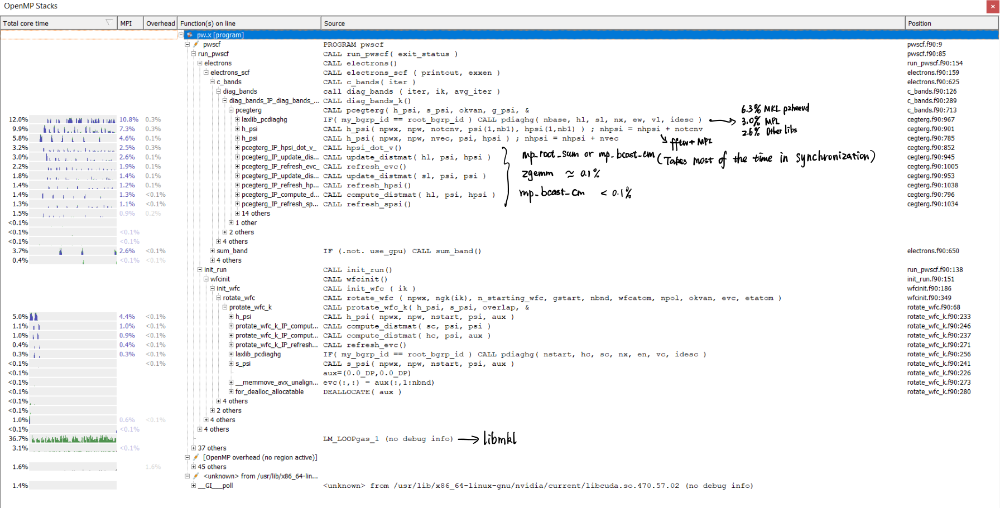
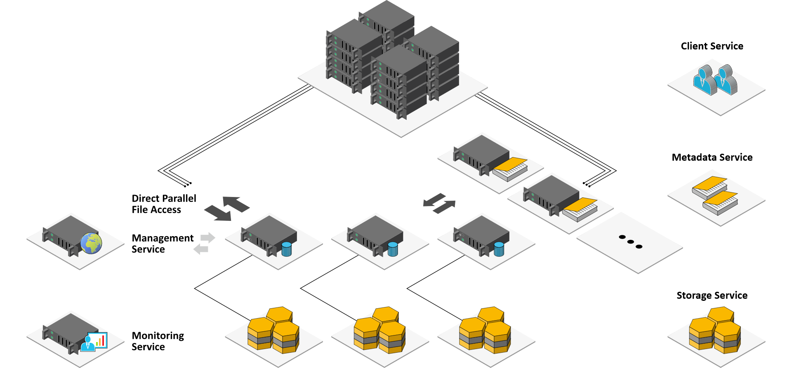
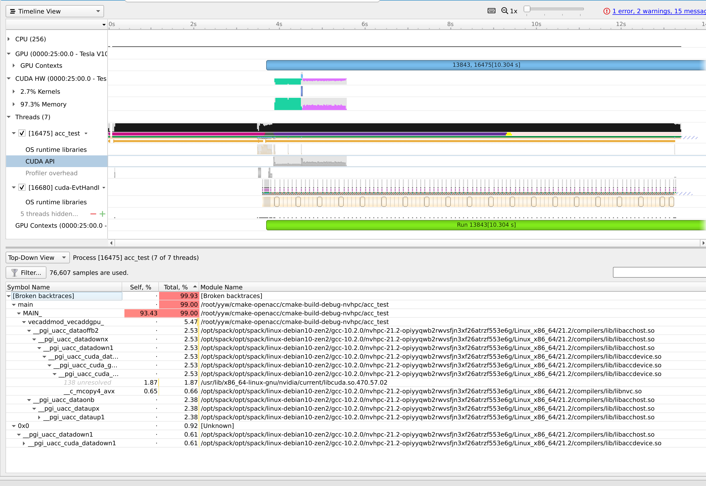

<!DOCTYPE HTML>
<html lang="cn" class="sidebar-visible no-js light">
    <head>
        <!-- Book generated using mdBook -->
        <meta charset="UTF-8">
        <title>GeekPie_HPC Wiki</title>
                <meta name="robots" content="noindex" />
                

        <!-- Custom HTML head -->
        

        <meta content="text/html; charset=utf-8" http-equiv="Content-Type">
        <meta name="description" content="">
        <meta name="viewport" content="width=device-width, initial-scale=1">
        <meta name="theme-color" content="#ffffff" />

                <link rel="icon" href="favicon.svg">
                        <link rel="shortcut icon" href="favicon.png">
                <link rel="stylesheet" href="css/variables.css">
        <link rel="stylesheet" href="css/general.css">
        <link rel="stylesheet" href="css/chrome.css">
                <link rel="stylesheet" href="css/print.css" media="print">
        
        <!-- Fonts -->
        <link rel="stylesheet" href="FontAwesome/css/font-awesome.css">
                <link rel="stylesheet" href="fonts/fonts.css">
        
        <!-- Highlight.js Stylesheets -->
        <link rel="stylesheet" href="highlight.css">
        <link rel="stylesheet" href="tomorrow-night.css">
        <link rel="stylesheet" href="ayu-highlight.css">

        <!-- Custom theme stylesheets -->
        
                <!-- MathJax -->
        <script async type="text/javascript" src="https://cdnjs.cloudflare.com/ajax/libs/mathjax/2.7.1/MathJax.js?config=TeX-AMS-MML_HTMLorMML"></script>
            </head>
    <body>
        <!-- Provide site root to javascript -->
        <script type="text/javascript">
            var path_to_root = "";
            var default_theme = window.matchMedia("(prefers-color-scheme: dark)").matches ? "navy" : "light";
        </script>

        <!-- Work around some values being stored in localStorage wrapped in quotes -->
        <script type="text/javascript">
            try {
                var theme = localStorage.getItem('mdbook-theme');
                var sidebar = localStorage.getItem('mdbook-sidebar');

                if (theme.startsWith('"') && theme.endsWith('"')) {
                    localStorage.setItem('mdbook-theme', theme.slice(1, theme.length - 1));
                }

                if (sidebar.startsWith('"') && sidebar.endsWith('"')) {
                    localStorage.setItem('mdbook-sidebar', sidebar.slice(1, sidebar.length - 1));
                }
            } catch (e) { }
        </script>

        <!-- Set the theme before any content is loaded, prevents flash -->
        <script type="text/javascript">
            var theme;
            try { theme = localStorage.getItem('mdbook-theme'); } catch(e) { }
            if (theme === null || theme === undefined) { theme = default_theme; }
            var html = document.querySelector('html');
            html.classList.remove('no-js')
            html.classList.remove('light')
            html.classList.add(theme);
            html.classList.add('js');
        </script>

        <!-- Hide / unhide sidebar before it is displayed -->
        <script type="text/javascript">
            var html = document.querySelector('html');
            var sidebar = 'hidden';
            if (document.body.clientWidth >= 1080) {
                try { sidebar = localStorage.getItem('mdbook-sidebar'); } catch(e) { }
                sidebar = sidebar || 'visible';
            }
            html.classList.remove('sidebar-visible');
            html.classList.add("sidebar-" + sidebar);
        </script>

        <nav id="sidebar" class="sidebar" aria-label="Table of contents">
            <div class="sidebar-scrollbox">
                <ol class="chapter"><li class="chapter-item expanded "><a href="index.html"><strong aria-hidden="true">1.</strong> Intro</a></li><li class="chapter-item expanded "><a href="Algorithm/index.html"><strong aria-hidden="true">2.</strong> Algorithm</a></li><li><ol class="section"><li class="chapter-item expanded "><a href="Algorithm/dgemm.html"><strong aria-hidden="true">2.1.</strong> Dgemm</a></li><li class="chapter-item expanded "><a href="Algorithm/fft.html"><strong aria-hidden="true">2.2.</strong> fft</a></li><li class="chapter-item expanded "><a href="Algorithm/kmer.html"><strong aria-hidden="true">2.3.</strong> Kmer</a></li></ol></li><li class="chapter-item expanded "><a href="Apps/index.html"><strong aria-hidden="true">3.</strong> Apps</a></li><li><ol class="section"><li class="chapter-item expanded "><a href="Apps/ASC/index.html"><strong aria-hidden="true">3.1.</strong> ASC</a></li><li><ol class="section"><li class="chapter-item expanded "><a href="Apps/ASC/asc-19/index.html"><strong aria-hidden="true">3.1.1.</strong> Asc 19</a></li><li><ol class="section"><li class="chapter-item expanded "><a href="Apps/ASC/asc-19/cesm.html"><strong aria-hidden="true">3.1.1.1.</strong> Cesm</a></li></ol></li><li class="chapter-item expanded "><a href="Apps/ASC/asc-20/index.html"><strong aria-hidden="true">3.1.2.</strong> Asc 20-21</a></li><li><ol class="section"><li class="chapter-item expanded "><a href="Apps/ASC/asc-20/quest.html"><strong aria-hidden="true">3.1.2.1.</strong> Quest</a></li></ol></li><li class="chapter-item expanded "><a href="Apps/ASC/asc-22/index.html"><strong aria-hidden="true">3.1.3.</strong> Asc 22</a></li><li><ol class="section"><li class="chapter-item expanded "><a href="Apps/ASC/asc-22/yuan.html"><strong aria-hidden="true">3.1.3.1.</strong> yuan</a></li><li class="chapter-item expanded "><a href="Apps/ASC/asc-22/DeepMD.html"><strong aria-hidden="true">3.1.3.2.</strong> DeepMD</a></li></ol></li></ol></li><li class="chapter-item expanded "><a href="Apps/ISC/index.html"><strong aria-hidden="true">3.2.</strong> ISC</a></li><li><ol class="section"><li class="chapter-item expanded "><a href="Apps/ISC/ISC-21/index.html"><strong aria-hidden="true">3.2.1.</strong> ISC 21</a></li><li><ol class="section"><li class="chapter-item expanded "><a href="Apps/ISC/ISC-21/CodeChallenge.html"><strong aria-hidden="true">3.2.1.1.</strong> Code Challenge</a></li><li class="chapter-item expanded "><a href="Apps/ISC/ISC-21/WRF.html"><strong aria-hidden="true">3.2.1.2.</strong> WRF</a></li></ol></li><li class="chapter-item expanded "><a href="Apps/ISC/ISC-22/index.html"><strong aria-hidden="true">3.2.2.</strong> ISC 22</a></li><li><ol class="section"><li class="chapter-item expanded "><a href="Apps/ISC/ISC-22/Incompact3D.html"><strong aria-hidden="true">3.2.2.1.</strong> Incompact3D</a></li></ol></li></ol></li><li class="chapter-item expanded "><a href="Apps/SC/index.html"><strong aria-hidden="true">3.3.</strong> SC</a></li><li><ol class="section"><li class="chapter-item expanded "><a href="Apps/SC/SC21/index.html"><strong aria-hidden="true">3.3.1.</strong> SC 21</a></li><li><ol class="section"><li class="chapter-item expanded "><a href="Apps/SC/SC21/quantum-espresso.html"><strong aria-hidden="true">3.3.1.1.</strong> Quantum Espresso</a></li><li class="chapter-item expanded "><a href="Apps/SC/SC21/ramBLe.html"><strong aria-hidden="true">3.3.1.2.</strong> Ram B Le</a></li><li class="chapter-item expanded "><a href="Apps/SC/SC21/cardioid.html"><strong aria-hidden="true">3.3.1.3.</strong> Cardioid</a></li><li class="chapter-item expanded "><a href="Apps/SC/SC21/Mystery.html"><strong aria-hidden="true">3.3.1.4.</strong> Mystery</a></li></ol></li><li class="chapter-item expanded "><a href="Apps/SC/SC20.html"><strong aria-hidden="true">3.3.2.</strong> SC 20</a></li></ol></li></ol></li><li class="chapter-item expanded "><a href="Benchmark/index.html"><strong aria-hidden="true">4.</strong> Benchmark</a></li><li><ol class="section"><li class="chapter-item expanded "><a href="Benchmark/hpcg-dat.html"><strong aria-hidden="true">4.1.</strong> Hpcg Dat</a></li><li class="chapter-item expanded "><a href="Benchmark/hpl-dat.html"><strong aria-hidden="true">4.2.</strong> Hpl Dat</a></li><li class="chapter-item expanded "><a href="Benchmark/io500.html"><strong aria-hidden="true">4.3.</strong> Io 500</a></li></ol></li><li class="chapter-item expanded "><a href="DevOps/index.html"><strong aria-hidden="true">5.</strong> Dev Ops</a></li><li><ol class="section"><li class="chapter-item expanded "><a href="DevOps/beegfs.html"><strong aria-hidden="true">5.1.</strong> BeeGFS</a></li><li class="chapter-item expanded "><a href="DevOps/Grafana.html"><strong aria-hidden="true">5.2.</strong> Grafana</a></li><li class="chapter-item expanded "><a href="DevOps/LDAP.html"><strong aria-hidden="true">5.3.</strong> LDAP</a></li><li class="chapter-item expanded "><a href="DevOps/SaltStack.html"><strong aria-hidden="true">5.4.</strong> Salt Stack</a></li><li class="chapter-item expanded "><a href="DevOps/Scheduler.html"><strong aria-hidden="true">5.5.</strong> Scheduler</a></li><li class="chapter-item expanded "><a href="DevOps/Singularity.html"><strong aria-hidden="true">5.6.</strong> Singularity</a></li></ol></li><li class="chapter-item expanded "><a href="Language/index.html"><strong aria-hidden="true">6.</strong> Language</a></li><li><ol class="section"><li class="chapter-item expanded "><a href="Language/C++.html"><strong aria-hidden="true">6.1.</strong> C++</a></li><li class="chapter-item expanded "><a href="Language/Chisel.html"><strong aria-hidden="true">6.2.</strong> Chisel</a></li><li class="chapter-item expanded "><a href="Language/Fortran.html"><strong aria-hidden="true">6.3.</strong> Fortran</a></li><li class="chapter-item expanded "><a href="Language/Go.html"><strong aria-hidden="true">6.4.</strong> Go</a></li><li class="chapter-item expanded "><a href="Language/Rust.html"><strong aria-hidden="true">6.5.</strong> Rust</a></li></ol></li><li class="chapter-item expanded "><a href="Libs/index.html"><strong aria-hidden="true">7.</strong> Libs</a></li><li><ol class="section"><li class="chapter-item expanded "><a href="Libs/Svml.html"><strong aria-hidden="true">7.1.</strong> Svml</a></li><li class="chapter-item expanded "><a href="Libs/NumaCTL.html"><strong aria-hidden="true">7.2.</strong> NumaCTL</a></li><li class="chapter-item expanded "><a href="Libs/Boost.html"><strong aria-hidden="true">7.3.</strong> Boost</a></li></ol></li><li class="chapter-item expanded "><a href="Profiling/index.html"><strong aria-hidden="true">8.</strong> Profiling</a></li><li><ol class="section"><li class="chapter-item expanded "><a href="Profiling/ArmForge.html"><strong aria-hidden="true">8.1.</strong> Arm Forge</a></li><li class="chapter-item expanded "><a href="Profiling/uProf.html"><strong aria-hidden="true">8.2.</strong> Uprof</a></li><li class="chapter-item expanded "><a href="Profiling/Vtune.html"><strong aria-hidden="true">8.3.</strong> Vtune</a></li></ol></li><li class="chapter-item expanded "><a href="Sysadmin/index.html"><strong aria-hidden="true">9.</strong> Sysadmin</a></li><li><ol class="section"><li class="chapter-item expanded "><a href="Sysadmin/cluster-setup.html"><strong aria-hidden="true">9.1.</strong> Cluster Setup</a></li><li class="chapter-item expanded "><a href="Sysadmin/environment-installation.html"><strong aria-hidden="true">9.2.</strong> Environment Installation</a></li><li class="chapter-item expanded "><a href="Sysadmin/environment-modules.html"><strong aria-hidden="true">9.3.</strong> Environment Modules</a></li><li class="chapter-item expanded "><a href="Sysadmin/it-support-machine.html"><strong aria-hidden="true">9.4.</strong> It-Support Machine</a></li><li class="chapter-item expanded "><a href="Sysadmin/bmc-reverse.html"><strong aria-hidden="true">9.5.</strong> BMC Reverse</a></li><li class="chapter-item expanded "><a href="Sysadmin/Oracle/index.html"><strong aria-hidden="true">9.6.</strong> Oracle</a></li><li><ol class="section"><li class="chapter-item expanded "><a href="Sysadmin/Oracle/ansible.html"><strong aria-hidden="true">9.6.1.</strong> Ansible</a></li><li class="chapter-item expanded "><a href="Sysadmin/Oracle/grafana.html"><strong aria-hidden="true">9.6.2.</strong> Grafana</a></li></ol></li><li class="chapter-item expanded "><a href="Sysadmin/ISC/index.html"><strong aria-hidden="true">9.7.</strong> ISC</a></li><li><ol class="section"><li class="chapter-item expanded "><a href="Sysadmin/ISC/NSCC.html"><strong aria-hidden="true">9.7.1.</strong> NSCC</a></li><li class="chapter-item expanded "><a href="Sysadmin/ISC/Bridges.html"><strong aria-hidden="true">9.7.2.</strong> Bridges</a></li><li class="chapter-item expanded "><a href="Sysadmin/ISC/Thor.html"><strong aria-hidden="true">9.7.3.</strong> Thor</a></li><li class="chapter-item expanded "><a href="Sysadmin/ISC/Niagara.html"><strong aria-hidden="true">9.7.4.</strong> Niagara</a></li></ol></li><li class="chapter-item expanded "><a href="Sysadmin/Azure/index.html"><strong aria-hidden="true">9.8.</strong> Azure</a></li><li><ol class="section"><li class="chapter-item expanded "><a href="Sysadmin/Azure/cyclecloud.html"><strong aria-hidden="true">9.8.1.</strong> CycleCloud</a></li><li class="chapter-item expanded "><a href="Sysadmin/Azure/check-list.html"><strong aria-hidden="true">9.8.2.</strong> Check List</a></li></ol></li><li class="chapter-item expanded "><a href="Sysadmin/GeekPie/index.html"><strong aria-hidden="true">9.9.</strong> GeekPie</a></li><li><ol class="section"><li class="chapter-item expanded "><a href="Sysadmin/GeekPie/hardware.html"><strong aria-hidden="true">9.9.1.</strong> Hardware</a></li><li class="chapter-item expanded "><a href="Sysadmin/GeekPie/software.html"><strong aria-hidden="true">9.9.2.</strong> Software</a></li><li class="chapter-item expanded "><a href="Sysadmin/GeekPie/tuning.html"><strong aria-hidden="true">9.9.3.</strong> Tuning</a></li><li class="chapter-item expanded "><a href="Sysadmin/GeekPie/kernel.html"><strong aria-hidden="true">9.9.4.</strong> Kernel</a></li><li class="chapter-item expanded "><a href="Sysadmin/GeekPie/systemd-nspawn.html"><strong aria-hidden="true">9.9.5.</strong> systemd-nspawn</a></li></ol></li></ol></li><li class="chapter-item expanded "><a href="Architecture/index.html"><strong aria-hidden="true">10.</strong> Architecture</a></li><li><ol class="section"><li class="chapter-item expanded "><a href="Architecture/MemoryModel.html"><strong aria-hidden="true">10.1.</strong> Memory Model</a></li></ol></li></ol>            </div>
            <div id="sidebar-resize-handle" class="sidebar-resize-handle"></div>
        </nav>

        <div id="page-wrapper" class="page-wrapper">

            <div class="page">
                
                <div id="menu-bar-hover-placeholder"></div>
                <div id="menu-bar" class="menu-bar sticky bordered">
                    <div class="left-buttons">
                        <button id="sidebar-toggle" class="icon-button" type="button" title="Toggle Table of Contents" aria-label="Toggle Table of Contents" aria-controls="sidebar">
                            <i class="fa fa-bars"></i>
                        </button>
                        <button id="theme-toggle" class="icon-button" type="button" title="Change theme" aria-label="Change theme" aria-haspopup="true" aria-expanded="false" aria-controls="theme-list">
                            <i class="fa fa-paint-brush"></i>
                        </button>
                        <ul id="theme-list" class="theme-popup" aria-label="Themes" role="menu">
                            <li role="none"><button role="menuitem" class="theme" id="light">Light (default)</button></li>
                            <li role="none"><button role="menuitem" class="theme" id="rust">Rust</button></li>
                            <li role="none"><button role="menuitem" class="theme" id="coal">Coal</button></li>
                            <li role="none"><button role="menuitem" class="theme" id="navy">Navy</button></li>
                            <li role="none"><button role="menuitem" class="theme" id="ayu">Ayu</button></li>
                        </ul>
                                                <button id="search-toggle" class="icon-button" type="button" title="Search. (Shortkey: s)" aria-label="Toggle Searchbar" aria-expanded="false" aria-keyshortcuts="S" aria-controls="searchbar">
                            <i class="fa fa-search"></i>
                        </button>
                                            </div>

                    <h1 class="menu-title">GeekPie_HPC Wiki</h1>

                    <div class="right-buttons">
                                                <a href="print.html" title="Print this book" aria-label="Print this book">
                            <i id="print-button" class="fa fa-print"></i>
                        </a>
                                                                        <a href="https://github.com/geekpiehpc/wiki" title="Git repository" aria-label="Git repository">
                            <i id="git-repository-button" class="fa fa-github"></i>
                        </a>
                                                
                    </div>
                </div>

                                <div id="search-wrapper" class="hidden">
                    <form id="searchbar-outer" class="searchbar-outer">
                        <input type="search" id="searchbar" name="searchbar" placeholder="Search this book ..." aria-controls="searchresults-outer" aria-describedby="searchresults-header">
                    </form>
                    <div id="searchresults-outer" class="searchresults-outer hidden">
                        <div id="searchresults-header" class="searchresults-header"></div>
                        <ul id="searchresults">
                        </ul>
                    </div>
                </div>
                
                <!-- Apply ARIA attributes after the sidebar and the sidebar toggle button are added to the DOM -->
                <script type="text/javascript">
                    document.getElementById('sidebar-toggle').setAttribute('aria-expanded', sidebar === 'visible');
                    document.getElementById('sidebar').setAttribute('aria-hidden', sidebar !== 'visible');
                    Array.from(document.querySelectorAll('#sidebar a')).forEach(function(link) {
                        link.setAttribute('tabIndex', sidebar === 'visible' ? 0 : -1);
                    });
                </script>

                <div id="content" class="content">
                    <main>
                        <hr />
<h2>title: README
description: 
published: true
date: 2022-03-20T23:18:08.095Z
tags: 
editor: markdown
dateCreated: 2022-03-20T20:59:42.713Z</h2>
<h1 id="introduction"><a class="header" href="#introduction">Introduction</a></h1>
<p>首先，欢迎大家加入<code>GeekPie_HPC</code>，这是一个技术中立，立志和清华比肩的比赛队伍。我们重视输赢的同时，更着重培养的是大家的实践（对各种工具的熟练应用）能力，交流（擅长画饼，接锅和再造血）能力。如果你需要花绝大多数的时间卷 GPA，本社不欢迎你，由于比赛几乎所有时间都落在期中期末考试左右，我们希望的是 YOLO 的精神。</p>
<p>有关如何做一个<a href="https://coolshell.cn/articles/17497.html">好的技术分享官</a>，无论是学术、科研，都是在和别人 brain storm 的同时产生价值。你做的工作，只有对别人产生了价值，别人才会 value 你，光做一个技术强者是毫无作用的。希望大家珍惜与优秀的人共事的机会，在 slack周会上看看别人是怎么做的，然后自己也贡献些力所能及的事。</p>
<p>这里是 <code>GeekPie_HPC</code> 托管在 <code>github pages</code> 的第三个 wiki，有一部分在 geekpie 的 <code>wiki.js</code> 里，还有一小部分在 geekpie 校内服务器的conference 上，为了避免有一天运维删库跑路，所以先放 github 上。</p>
<p>本 Wiki 的同时生成静态和动态页面</p>
<ul>
<li>静态: 使用 GitHub Actions + <code>mdbook</code> 生成。
https://hpc.geekpie.club/wiki/</li>
<li>动态: 使用 <code>wiki.js</code> 生成，支持实时编辑，需要学校内网。
https://wiki.geekpie.club/</li>
</ul>
<h2 id="添加文件"><a class="header" href="#添加文件">添加文件</a></h2>
<p>请直接在 <code>main</code> branch上提交 <code>markdown</code> 文件，在半分钟之后 <a href="http://hpc.geekpie.club/wiki/">wiki</a> 就会得到更新。</p>
<p>如果新建了文件，需要同步更新根目录下的 <code>SUMMARY.md</code> 文件。</p>
<p>文件命名采用小端大写法。</p>
<h2 id="权限申请"><a class="header" href="#权限申请">权限申请</a></h2>
<ol>
<li>
<p>请向 murez 申请 Git 仓库的编辑权限，可以在 <strong>GeekPie 科创工作室</strong> 或 Slack 找到。</p>
</li>
<li>
<p>如果你的 GitHub 账号绑定了学校邮箱，可以直接在 <a href="https://wiki.geekpie.club/"><code>wiki.js</code></a> 编辑。否则，请在 Slack #general 频道寻求支援。</p>
</li>
</ol>
<h2 id="有关出入口"><a class="header" href="#有关出入口">有关出入口</a></h2>
<p><a href="https://hpc.geekpie.club/archives/">招新公告</a>，<a href="https://geekpiehpc.slack.com">slack</a>用上科大邮箱可以注册，暑期想实习、磕盐可以在黑裙里找到相关信息。校内不定期邀请外校同学和同事和共事者演讲。</p>
<p><em>Generated <a href="http://hpc.geekpie.club/wiki/">GitHub Pages</a> is powered by <a href="https://github.com/rust-lang/mdBook">mdBook</a>.</em></p>
<div style="break-before: page; page-break-before: always;"></div><h1 id="algorithm"><a class="header" href="#algorithm">Algorithm</a></h1>
<p>这里放置有关应用和测试中常见的算法。</p>
<div style="break-before: page; page-break-before: always;"></div><div style="break-before: page; page-break-before: always;"></div><div style="break-before: page; page-break-before: always;"></div><div style="break-before: page; page-break-before: always;"></div><h1 id="applications"><a class="header" href="#applications">Applications</a></h1>
<p>这里放置<code>GeekPie_HPC</code>参与过各个竞赛中的应用的经历和经验。</p>
<div style="break-before: page; page-break-before: always;"></div><div style="break-before: page; page-break-before: always;"></div><div style="break-before: page; page-break-before: always;"></div><!-- TITLE: CESM -->
<!-- SUBTITLE: CESM summary -->
<h1 id="cesm"><a class="header" href="#cesm">CESM</a></h1>
<h2 id="build--running"><a class="header" href="#build--running">Build &amp; Running</a></h2>
<h3 id="onekeyconf"><a class="header" href="#onekeyconf">OneKeyConf</a></h3>
<pre><code class="language-bash">./create_newcase -res 0.47x0.63_gx1v6 -compset B -case ../EXP2 -mach pleiades-ivy
mkdir nobackup
ln -s /home/cesm/data/inputdata_EXP1/ nobackup/inputdata
# EXP1: ./xmlchange -file env_run.xml -id DOCN_SOM_FILENAME -val pop_frc.gx1v6.091112.nc
./xmlchange -file env_build.xml -id CESMSCRATCHROOT -val `pwd`'/nobackup/$USER'
./xmlchange -file env_build.xml -id EXEROOT -val `pwd`'/nobackup/$CCSMUSER/$CASE/bld'
./xmlchange -file env_run.xml -id RUNDIR -val `pwd`'/nobackup/$CCSMUSER/$CASE/run'
./xmlchange -file env_run.xml -id DIN_LOC_ROOT -val `pwd`'/nobackup/inputdata'
./xmlchange -file env_run.xml -id DIN_LOC_ROOT_CLMFORC -val `pwd`'/nobackup/inputdata/atm/datm7'
./xmlchange -file env_run.xml -id DOUT_S_ROOT -val `pwd`'/nobackup/$CCSMUSER/archive/$CASE'
./xmlchange -file env_run.xml -id RUN_STARTDATE -val 2000-01-01
./xmlchange -file env_build.xml -id BUILD_THREADED -val TRUE
# edit Macro SLIBS -lnetcdff
# edit env_mach_specific
./cesm_setup
</code></pre>
<h3 id="ybssh"><a class="header" href="#ybssh">ybs.sh</a></h3>
<pre><code class="language-bash">./EXP2.clean_build all
./cesm_setup -clean
rm -rf $build_dir
./cesm_setup
./EXP2.build
</code></pre>
<h3 id="pbs"><a class="header" href="#pbs">PBS</a></h3>
<pre><code>##PBS -N dappur
##PBS -q pub_blad_2
##PBS -j oe
##PBS -l walltime=00:01:00
##PBS -l nodes=1:ppn=28
</code></pre>
<h2 id="performance-tuning"><a class="header" href="#performance-tuning">Performance Tuning</a></h2>
<h2 id="trouble-shooting"><a class="header" href="#trouble-shooting">Trouble Shooting</a></h2>
<h3 id="high-sys-percentage-in-top-20"><a class="header" href="#high-sys-percentage-in-top-20">High sys percentage in top (&gt;20%)</a></h3>
<p>This is apparent this is a communication problem. Try switching to Intel MPI for a terribly low sys percentage (&lt;1%).</p>
<h3 id="error-remap-transport-bad-departure-points"><a class="header" href="#error-remap-transport-bad-departure-points">ERROR: remap transport: bad departure points</a></h3>
<pre><code>Warning: Departure points out of bounds in remap                  
 my_task, i, j =         182           4           8              
 dpx, dpy =  -5925130.21408796      -0.368922055964299            
 HTN(i,j), HTN(i+1,j) =   72848.1354852604        72848.1354852604
 HTE(i,j), HTE(i,j+1) =   59395.4550164223        59395.4550164223
 istep1, my_task, iblk =     1095001         182           1      
 Global block:         205                                        
 Global i and j:          35          47                          
(shr_sys_abort) ERROR: remap transport: bad departure points      
(shr_sys_abort) WARNING: calling shr_mpi_abort() and stopping     
application called MPI_Abort(MPI_COMM_WORLD, 1001) - process 182
</code></pre>
<p>This error may due to multiple reasons.</p>
<p>One significant one is the bad grid division. We were once using one PE for every processor core so the total number of PEs is not a power of 2. Then we used 128 (or later 256) and the error diminished until it showed up again after 6mos of simulation...</p>
<p>Then another affecting reason is the parameter xndt_dyn, see link. This parameter has already been set to 2 after solving the last problem (originally 1). Then we tried increasing this parameter again, it passed the 6mos simulation, but crashed again after another 3mos. We then continued increasing the value, but it crashes faster. We stopped at about 20mos simulation and turned to GNU compiler version with Intel MPI.</p>
<p>However, this does not mean it's the fault of Intel compiler. Direct comparison between Intel and GNU compilers is unfair because the combination of Intel compiler xndt_dyn=1 and most importantly the correct PE number has not been tried. Maybe try using xndt_dyn=1 from be beginning next time, using Intel compiler.</p>
<h3 id="openmp-failed"><a class="header" href="#openmp-failed">OpenMP failed</a></h3>
<p>Still no solved, but very promising for improving performance.</p>
<p>fixed in <a href="Apps/ASC/asc-19/../../ISC/ISC-21/WRF.html">WRF</a></p>
<div style="break-before: page; page-break-before: always;"></div><div style="break-before: page; page-break-before: always;"></div><!-- TITLE: Quest -->
<!-- SUBTITLE: A quick summary of Quest -->
<h1 id="quest-analysis"><a class="header" href="#quest-analysis">quest analysis</a></h1>
<h2 id="program-goal-analysis"><a class="header" href="#program-goal-analysis">program goal analysis</a></h2>
<p>what's code is actually doing is to simulate quantum computing.</p>
<p></p>
<h3 id="different-bits-state---qubits"><a class="header" href="#different-bits-state---qubits">different bits state - qubits</a></h3>
<p>3 states: <code>1</code> <code>0</code> <code>0/1</code></p>
<p>store by qreal which is actualy a complex number a+bi  (a+b=1), and it can be stated as \( (\begin{smallmatrix}0.123124&amp;0\ 0&amp;0.876876\end{smallmatrix}) \) , also note that because gpu only support float32 computing. So native qreal (precision=4) is not supported in gpu simutation.</p>
<pre><code class="language-cpp">/*
 * Single precision, which uses 4 bytes per amplitude component
 */
# if QuEST_PREC==1
    # define qreal float
    // \cond HIDDEN_SYMBOLS   
    # define MPI_QuEST_REAL MPI_FLOAT
    # define MPI_MAX_AMPS_IN_MSG (1LL&lt;&lt;29) // must be 2^int
    # define REAL_STRING_FORMAT &quot;%.8f&quot;
    # define REAL_QASM_FORMAT &quot;%.8g&quot;
    # define REAL_EPS 1e-5
    # define absReal(X) fabs(X) // not fabsf(X) - better to return doubles where possible
    // \endcond
/*
 * Double precision, which uses 8 bytes per amplitude component
 */
# elif QuEST_PREC==2
    # define qreal double
    // \cond HIDDEN_SYMBOLS   
    # define MPI_QuEST_REAL MPI_DOUBLE
    # define MPI_MAX_AMPS_IN_MSG (1LL&lt;&lt;28) // must be 2^int
    # define REAL_STRING_FORMAT &quot;%.14f&quot;
    # define REAL_QASM_FORMAT &quot;%.14g&quot;
    # define REAL_EPS 1e-13
    # define absReal(X) fabs(X)
    // \endcond
/*
 * Quad precision, which uses 16 bytes per amplitude component.
 * This is not compatible with most GPUs.
 */
# elif QuEST_PREC==4
    # define qreal long double
    // \cond HIDDEN_SYMBOLS   
    # define MPI_QuEST_REAL MPI_LONG_DOUBLE
    # define MPI_MAX_AMPS_IN_MSG (1LL&lt;&lt;27) // must be 2^int
    # define REAL_STRING_FORMAT &quot;%.17Lf&quot;
    # define REAL_QASM_FORMAT &quot;%.17Lg&quot;
    # define REAL_EPS 1e-14
    # define absReal(X) fabsl(X)
    // \endcond
# endif
</code></pre>
<h3 id="many-matrices-computation"><a class="header" href="#many-matrices-computation">many matrices computation</a></h3>

<p>all of the gate corresponds to one of the manipulation on qubits.</p>
<h4 id="basic-operation-on-a-and-b-httpsarxivorgpdfquant-ph0207118pdf"><a class="header" href="#basic-operation-on-a-and-b-httpsarxivorgpdfquant-ph0207118pdf">Basic operation on a and b https://arxiv.org/pdf/quant-ph/0207118.pdf</a></h4>
<p>random variables = density matrix </p>
<p><strong>hermitian</strong>:\(\rho^{\dagger}=\rho\)</p>
<p><strong>positive semidefinite</strong>:  <strong>eigenvalue</strong> \(\geq\) 0</p>
<p><strong>trace</strong>: \(\Sigma(diagnal\ elements)=1\)</p>
<p>dirac notation: ket \(v_{\phi}=|\phi\rangle=\left(\begin{array}{l}\phi_{0} \\phi_{1}\end{array}\right)\)</p>
<p>bra   \( v_{\phi}^{\dagger}=\langle\phi|=\left(\begin{array}{ll}\phi_{0} &amp; \phi_{1}\end{array}\right)\)</p>
<p>\(\langle\phi \mid \psi\rangle\)= inner products of bra(fi) and ket(theta). notice: \(\langle\phi \mid \phi\rangle=1\)</p>
<p>\(|\phi\rangle|\psi\rangle\)=tensor product of ket(fi) and bra(theta)</p>
<p>2 special notation: \(u_{0}=|0\rangle=\left(\begin{array}{l}1 \ 0\end{array}\right) \quad v_{1}=|1\rangle=\left(\begin{array}{l}0 \ 1\end{array}\right)\)</p>
<p>the dense <strong>matrix</strong>:\(\rho=\left(\begin{array}{cc}q_{0} &amp; 0 \ 0 &amp; q_{1}\end{array}\right)\) (\(q_{0}+q_{1}=1\), the purpose of the equation is to illustrate the complex number ) can be stated  as \(\rho=q_{0}|0\rangle\left\langle 0\left|+q_{1}\right| 1\right\rangle\langle 1|\)</p>
<p>so \(\rho|0\rangle=\left(q_{0}|0\rangle\left\langle 0\left|+q_{1}\right| 1\right\rangle\langle 1|\right)|0\rangle=q_{0}|0\rangle\)</p>
<p>dot product (from normal bits to qubits):\( |a b\rangle=|a\rangle \otimes|b\rangle=v_{00}|00\rangle+v_{01}|01\rangle+v_{10}|10\rangle \dashv v_{11}|11\rangle \rightarrow\left[\begin{array}{l}v_{00} \ v_{01} \ v_{10} \ v_{11}\end{array}\right] \)</p>
<p>for example in bits 5 = 101b, while in qubits \(|5\rangle_{3}=|101\rangle=|1\rangle|0\rangle|1\rangle=\left(\begin{array}{l}0 \ 1\end{array}\right)\left(\begin{array}{l}1 \ 0\end{array}\right)\left(\begin{array}{l}0 \ 1\end{array}\right)=\left(\begin{array}{l}0 \ 0 \ 0 \ 0 \ 0 \ 1 \ 0 \ 0\end{array}\right)\)</p>
<p></p>
<h4 id="hadamard-gate-operations"><a class="header" href="#hadamard-gate-operations">Hadamard gate operations</a></h4>
<p>\begin{aligned}H(|0\rangle) &amp;=\frac{1}{\sqrt{2}}|0\rangle+\frac{1}{\sqrt{2}}|1\rangle=:|+\rangle \end{aligned}</p>
<p>\begin{aligned} H(|1\rangle) &amp;=\frac{1}{\sqrt{2}}|0\rangle-\frac{1}{\sqrt{2}}|1\rangle=:|-\rangle \end{aligned}</p>
<p>\begin{aligned} H\left(\frac{1}{\sqrt{2}}|0\rangle+\frac{1}{\sqrt{2}}|1\rangle\right) &amp;=\frac{1}{2}(|0\rangle+|1\rangle)+\frac{1}{2}(|0\rangle-|1\rangle)=|0\rangle \end{aligned}</p>
<p>\begin{aligned} H\left(\frac{1}{\sqrt{2}}|0\rangle-\frac{1}{\sqrt{2}}|1\rangle\right) &amp;=\frac{1}{2}(|0\rangle+|1\rangle)-\frac{1}{2}(|0\rangle-|1\rangle)=|1\rangle\end{aligned}</p>
<p>corresponding matrix operation in dirac notation: \(H_{1}=\frac{1}{\sqrt{2}}\left(\begin{array}{cc}1 &amp; 1 \ 1 &amp; -1\end{array}\right)\)</p>
<p>some specialty:</p>
<ol>
<li>\(H=\frac{|0\rangle+|1\rangle}{\sqrt{2}}\langle 0|+\frac{|0\rangle-|1\rangle}{\sqrt{2}}\langle 1|\)</li>
<li>Since \(HH^{\dagger}=I\) where <em>I</em> is the identity matrix, <em>H</em> is a <a href="https://en.wikipedia.org/wiki/Unitary_matrix">unitary matrix</a> (like all other quantum logical gates). Also, it is its own <a href="https://en.wikipedia.org/wiki/Unitary_matrix">unitary inverse</a>, \(H=H^{\dagger}\).</li>
</ol>
<p>One application of the Hadamard gate to either a 0 or 1 qubit will produce a quantum state that, if observed, will be a 0 or 1 with equal probability (as seen in the first two operations). This is exactly like flipping a fair coin in the standard <a href="https://en.wikipedia.org/wiki/Probabilistic_Turing_machine">probabilistic model of computation</a>. However, if the Hadamard gate is applied twice in succession (as is effectively being done in the last two operations), then the final state is always the same as the initial state.</p>
<pre><code class="language-cpp">__global__ void statevec_hadamardKernel (Qureg qureg, const int targetQubit){
    // ----- sizes
    long long int sizeBlock,                                           // size of blocks
         sizeHalfBlock;                                       // size of blocks halved
    // ----- indices
    long long int thisBlock,                                           // current block
         indexUp,indexLo;                                     // current index and corresponding index in lower half block

    // ----- temp variables
    qreal   stateRealUp,stateRealLo,                             // storage for previous state values
           stateImagUp,stateImagLo;                             // (used in updates)
    // ----- temp variables
    long long int thisTask;                                   // task based approach for expose loop with small granularity
    const long long int numTasks=qureg.numAmpsPerChunk&gt;&gt;1;

    sizeHalfBlock = 1LL &lt;&lt; targetQubit;                               // size of blocks halved
    sizeBlock     = 2LL * sizeHalfBlock;                           // size of blocks

    // ---------------------------------------------------------------- //
    //            rotate                                                //
    // ---------------------------------------------------------------- //

    //! fix -- no necessary for GPU version
    qreal *stateVecReal = qureg.deviceStateVec.real;
    qreal *stateVecImag = qureg.deviceStateVec.imag;

    qreal recRoot2 = 1.0/sqrt(2.0);

    thisTask = blockIdx.x*blockDim.x + threadIdx.x;
    if (thisTask&gt;=numTasks) return;

    thisBlock   = thisTask / sizeHalfBlock;
    indexUp     = thisBlock*sizeBlock + thisTask%sizeHalfBlock;
    indexLo     = indexUp + sizeHalfBlock;

    // store current state vector values in temp variables
    stateRealUp = stateVecReal[indexUp];
    stateImagUp = stateVecImag[indexUp];

    stateRealLo = stateVecReal[indexLo];
    stateImagLo = stateVecImag[indexLo];

    stateVecReal[indexUp] = recRoot2*(stateRealUp + stateRealLo);
    stateVecImag[indexUp] = recRoot2*(stateImagUp + stateImagLo);

    stateVecReal[indexLo] = recRoot2*(stateRealUp - stateRealLo);
    stateVecImag[indexLo] = recRoot2*(stateImagUp - stateImagLo);
}

void statevec_hadamard(Qureg qureg, const int targetQubit) 
{
    int threadsPerCUDABlock, CUDABlocks;
    threadsPerCUDABlock = 128;
    CUDABlocks = ceil((qreal)(qureg.numAmpsPerChunk&gt;&gt;1)/threadsPerCUDABlock);
    statevec_hadamardKernel&lt;&lt;&lt;CUDABlocks, threadsPerCUDABlock&gt;&gt;&gt;(qureg, targetQubit);
}
</code></pre>
<h4 id="pauli-xyz-gate"><a class="header" href="#pauli-xyz-gate">Pauli-X/Y/Z gate</a></h4>
<p>The Pauli-X gate acts on a single qubit. It is the quantum equivalent of the \( X=\left[\begin{array}{ll}0 &amp; 1 \ 1 &amp; 0\end{array}\right]\)</p>
<pre><code class="language-cpp">void pauliX(Qureg qureg, const int targetQubit) {
    validateTarget(qureg, targetQubit, __func__);
    
    statevec_pauliX(qureg, targetQubit);
    if (qureg.isDensityMatrix) {
        statevec_pauliX(qureg, targetQubit+qureg.numQubitsRepresented);
    }
    
    qasm_recordGate(qureg, GATE_SIGMA_X, targetQubit);
}
</code></pre>
<p>the real computing part</p>
<pre><code class="language-cpp">void statevec_pauliXLocal(Qureg qureg, const int targetQubit)
{
    long long int sizeBlock, sizeHalfBlock;
    long long int thisBlock, // current block
         indexUp,indexLo;    // current index and corresponding index in lower half block

    qreal stateRealUp,stateImagUp;
    long long int thisTask;         
    const long long int numTasks=qureg.numAmpsPerChunk&gt;&gt;1;

    // set dimensions
    sizeHalfBlock = 1LL &lt;&lt; targetQubit;  
    sizeBlock     = 2LL * sizeHalfBlock; 

    // Can't use qureg.stateVec as a private OMP var
    qreal *stateVecReal = qureg.stateVec.real;
    qreal *stateVecImag = qureg.stateVec.imag;

# ifdef _OPENMP
# pragma omp parallel \
    default  (none) \
    shared   (sizeBlock,sizeHalfBlock, stateVecReal,stateVecImag) \
    private  (thisTask,thisBlock ,indexUp,indexLo, stateRealUp,stateImagUp) 
# endif
    {
# ifdef _OPENMP
# pragma omp for schedule (static)
# endif
        for (thisTask=0; thisTask&lt;numTasks; thisTask++) {
            thisBlock   = thisTask / sizeHalfBlock;
            indexUp     = thisBlock*sizeBlock + thisTask%sizeHalfBlock;
            indexLo     = indexUp + sizeHalfBlock;

            stateRealUp = stateVecReal[indexUp];
            stateImagUp = stateVecImag[indexUp];

            stateVecReal[indexUp] = stateVecReal[indexLo];
            stateVecImag[indexUp] = stateVecImag[indexLo];

            stateVecReal[indexLo] = stateRealUp;
            stateVecImag[indexLo] = stateImagUp;
        } 
    }

}

void statevec_pauliXDistributed (Qureg qureg,
        ComplexArray stateVecIn,
        ComplexArray stateVecOut)
{

    long long int thisTask;  
    const long long int numTasks=qureg.numAmpsPerChunk;

    qreal *stateVecRealIn=stateVecIn.real, *stateVecImagIn=stateVecIn.imag;
    qreal *stateVecRealOut=stateVecOut.real, *stateVecImagOut=stateVecOut.imag;

# ifdef _OPENMP
# pragma omp parallel \
    default  (none) \
    shared   (stateVecRealIn,stateVecImagIn,stateVecRealOut,stateVecImagOut) \
    private  (thisTask)
# endif
    {
# ifdef _OPENMP
# pragma omp for schedule (static)
# endif
        for (thisTask=0; thisTask&lt;numTasks; thisTask++) {
            stateVecRealOut[thisTask] = stateVecRealIn[thisTask];
            stateVecImagOut[thisTask] = stateVecImagIn[thisTask];
        }
    }
} 
</code></pre>
<pre><code class="language-cpp">__global__ void statevec_pauliXKernel(Qureg qureg, const int targetQubit){
    // ----- sizes
    long long int sizeBlock,                                           // size of blocks
         sizeHalfBlock;                                       // size of blocks halved
    // ----- indices
    long long int thisBlock,                                           // current block
         indexUp,indexLo;                                     // current index and corresponding index in lower half block

    // ----- temp variables
    qreal   stateRealUp,                             // storage for previous state values
           stateImagUp;                             // (used in updates)
    // ----- temp variables
    long long int thisTask;                                   // task based approach for expose loop with small granularity
    const long long int numTasks=qureg.numAmpsPerChunk&gt;&gt;1;

    sizeHalfBlock = 1LL &lt;&lt; targetQubit;                               // size of blocks halved
    sizeBlock     = 2LL * sizeHalfBlock;                           // size of blocks

    // ---------------------------------------------------------------- //
    //            rotate                                                //
    // ---------------------------------------------------------------- //

    //! fix -- no necessary for GPU version
    qreal *stateVecReal = qureg.deviceStateVec.real;
    qreal *stateVecImag = qureg.deviceStateVec.imag;

    thisTask = blockIdx.x*blockDim.x + threadIdx.x;
    if (thisTask&gt;=numTasks) return;

    thisBlock   = thisTask / sizeHalfBlock;
    indexUp     = thisBlock*sizeBlock + thisTask%sizeHalfBlock;
    indexLo     = indexUp + sizeHalfBlock;

    // store current state vector values in temp variables
    stateRealUp = stateVecReal[indexUp];
    stateImagUp = stateVecImag[indexUp];

    stateVecReal[indexUp] = stateVecReal[indexLo];
    stateVecImag[indexUp] = stateVecImag[indexLo];

    stateVecReal[indexLo] = stateRealUp;
    stateVecImag[indexLo] = stateImagUp;
}

void statevec_pauliX(Qureg qureg, const int targetQubit) 
{
    int threadsPerCUDABlock, CUDABlocks;
    threadsPerCUDABlock = 128;
    CUDABlocks = ceil((qreal)(qureg.numAmpsPerChunk&gt;&gt;1)/threadsPerCUDABlock);
    statevec_pauliXKernel&lt;&lt;&lt;CUDABlocks, threadsPerCUDABlock&gt;&gt;&gt;(qureg, targetQubit);
}
</code></pre>
<h2 id="source-code-analysis"><a class="header" href="#source-code-analysis">source code analysis</a></h2>
<h4 id="tree"><a class="header" href="#tree">tree</a></h4>
<pre><code class="language-bash">.
├── CMakeLists.txt
├── include
│   ├── QuEST_complex.h				 //determine to use native external cpp support or c complex support.
│   ├── QuEST.h								  //main func claim
│   └── QuEST_precision.h				//define the precision
└── src
    ├── CMakeLists.txt
    ├── CPU
    │   ├── CMakeLists.txt
    │   ├── QuEST_cpu.c
    │   ├── QuEST_cpu_distributed.c	//distributed activator and implementation
    │   ├── QuEST_cpu_internal.h		 //other cpu related headers here
    │   └── QuEST_cpu_local.c			   //only cpu implementation
    ├── GPU
    │   ├── CMakeLists.txt
    │   └── QuEST_gpu.cu 					 //gpu counterpart
    ├── mt19937ar.c							  //梅森旋轉算法-伪随机数矩阵生成
    ├── mt19937ar.h
    ├── QuEST.c										//main func definition
    ├── QuEST_common.c					  //func activator defined here
    ├── QuEST_debug.h						  //debug information here
    ├── QuEST_internal.h
    ├── QuEST_qasm.c							//is a quantum record standard, defined qasm assertion here.
    ├── QuEST_qasm.h
    ├── QuEST_validation.c					//assert number of qubit here
    └── QuEST_validation.h
</code></pre>
<p>https://www.quantum-inspire.com/kbase/introduction-to-quantum-computing</p>
<h2 id="testcase-analysis"><a class="header" href="#testcase-analysis">testcase analysis</a></h2>
<p><code>mytimer.hpp</code></p>
<pre><code class="language-cpp">#include &lt;time.h&gt;
#include &lt;sys/time.h&gt;
 
 double get_wall_time(){
 /* A time value that is accurate to the nearest
   microsecond but also has a range of years.  */
   struct timeval time;
 // __time_t tv_sec;		/* Seconds.  */
 // __suseconds_t tv_usec;	/* Microseconds.  */
   if (gettimeofday(&amp;time,NULL)){
     // Handle error
     return 0;
   }
 
   return (double)time.tv_sec + (double)time.tv_usec * .000001;
 }
 
 double get_cpu_time(){
   return (double)clock() / CLOCKS_PER_SEC;//directly read clock from cpu, and return with clock times cloacks per sec.
 }```
</code></pre>
<p><code>random.c</code> - random manipulation</p>
<pre><code class="language-cpp">// total number of qubit: 30
// total number of qubit operatations: 667
// estimated time: 3783.9266747315614 second.
#include &quot;QuEST.h&quot;
#include &quot;mytimer.hpp&quot;
#include &quot;stdio.h&quot;

int main(int narg, char *argv[])
{

    QuESTEnv Env = createQuESTEnv();
    double t1 = get_wall_time();//define starting time 

    FILE *fp = fopen(&quot;probs.dat&quot;, &quot;w&quot;);//open file for result
    if (fp == NULL) {
        printf(&quot;    open probs.dat failed, Bye!&quot;);
        return 0;
    }

    FILE *fvec = fopen(&quot;stateVector.dat&quot;, &quot;w&quot;);
    if (fp == NULL) {
        printf(&quot;    open stateVector.dat failed, Bye!&quot;);
        return 0;
    }

    Qureg q =  createQureg(30, Env);//define qubits registers

    float q_measure[30];// defined q's size
   // possible execution.
    tGate(q, 25);
    controlledNot(q, 28, 21);
    controlledRotateX(q, 17, 5, 0.3293660327520663);
    tGate(q, 3);
    rotateX(q, 10, 4.734238389048838);
    rotateY(q, 8, 4.959946047271496);
    rotateZ(q, 5, 1.0427019597472071);
    pauliZ(q, 0);
	...
        
    printf(&quot;\n&quot;);
    for (long long int i = 0; i &lt; 30; ++i) {
        q_measure[i] = calcProbOfOutcome(q, i, 1);
        printf(&quot;  probability for q[%2lld]==1 : %lf    \n&quot;, i, q_measure[i]);
        fprintf(fp, &quot;Probability for q[%2lld]==1 : %lf    \n&quot;, i, q_measure[i]);
    }
    fprintf(fp, &quot;\n&quot;);
    printf(&quot;\n&quot;);

    for (int i = 0; i &lt; 10; ++i) {
        Complex amp = getAmp(q, i);
        printf(&quot;Amplitude of %dth state vector: %12.6f,%12.6f\n&quot;, i, amp.real,
               amp.imag);
    }

    double t2 = get_wall_time();
    printf(&quot;Complete the simulation takes time %12.6f seconds.&quot;, t2 - t1);
    printf(&quot;\n&quot;);
    destroyQureg(q, Env);
    destroyQuESTEnv(Env);

    return 0;
}
</code></pre>
<p><code>GHZ_QFT.c</code> - only controlled manipulation</p>
<pre><code class="language-cpp">/* GHZ quantum circuit */
    hadamard(q, 0);
    controlledNot(q, 0, 1);
    controlledNot(q, 1, 2);
    controlledNot(q, 2, 3);
    controlledNot(q, 3, 4);
    controlledNot(q, 4, 5);
    controlledNot(q, 5, 6);
    controlledNot(q, 6, 7);
    controlledNot(q, 7, 8);
    controlledNot(q, 8, 9);
    controlledNot(q, 9, 10);
    controlledNot(q, 10, 11);
    controlledNot(q, 11, 12);
    controlledNot(q, 12, 13);
    controlledNot(q, 13, 14);
    controlledNot(q, 14, 15);
    controlledNot(q, 15, 16);
    controlledNot(q, 16, 17);
    controlledNot(q, 17, 18);
    controlledNot(q, 18, 19);
    controlledNot(q, 19, 20);
    controlledNot(q, 20, 21);
    controlledNot(q, 21, 22);
    controlledNot(q, 22, 23);
    controlledNot(q, 23, 24);
    controlledNot(q, 24, 25);
    controlledNot(q, 25, 26);
    controlledNot(q, 26, 27);
    controlledNot(q, 27, 28);
    controlledNot(q, 28, 29);
	/* end of GHZ circuit */

	/* QFT starts */
    hadamard(q, 0);
    controlledRotateZ(q, 0, 1, 1.5708);
    hadamard(q, 1);
    controlledRotateZ(q, 0, 2, 0.785398);
    controlledRotateZ(q, 1, 2, 1.5708);
    hadamard(q, 2);
    controlledRotateZ(q, 0, 3, 0.392699);
    controlledRotateZ(q, 1, 3, 0.785398);
    controlledRotateZ(q, 2, 3, 1.5708);
    ...
</code></pre>
<h2 id="available-test-machine"><a class="header" href="#available-test-machine">available test machine</a></h2>
<ol>
<li>
<p>2node 16core each <code>mpi:omp=2:16</code></p>
<pre><code class="language-bash">#!/bin/sh
module purge
spack load intel ##openmpi@3.1.5/3.1.2
export PRECISION=4 ##1/2/4
CC=icc CXX=icpc cmake -DGPUACCELERATED=0 -DDISTRIBUTED=1 ..
make
export OMP_NUM_THREADS=16
export FI_PROVIDER=tcp
mpirun -machinefile mac -np 2 ./demo 
</code></pre>
<p>profiling result</p>
<p></p>
<p></p>
<p>the most time-consuming part is statevec_compactUnitaryLocal</p>
</li>
<li>
<p>2node 16core each <code>mpi:omp=1:32</code></p>

</li>
<li>
<p>1node 1tesla v100</p>
<p>script</p>
<pre><code class="language-bash">#!/bin/sh
module purge
spack load gcc@6
spack load cuda@10.1 ## 10.2
export PATH=$PATH:/usr/local/cuda/bin
export LD_LIBRARY_PATH=$LD_LIBRARY_PATH:/usr/local/cuda/lib64
export LIBRARY_PATH=$LIBRARY_PATH:/usr/local/cuda/lib64

export PRECISION=2 ##1/2
CC=gcc CXX=g++ cmake -DGPUACCELERATED=1 -DGPU_COMPUTE_CAPABILIty=70 ..
make
./demo 
</code></pre>
<p>profiling result</p>
<p></p>
</li>
</ol>
<p>summary</p>

<p></p>
<p>the summary for profiling of both cpu and gpu, the most time is consumed on computing the real kernel which I think the computing power is fully utilized. </p>
<p>Accelerated percentage of single node over omp+mpi is 319.799/220.807=1.448319120317744‬‬</p>
<p>Accelerated percentage of single node over single gpu is 319.799/19.328=16.54627720533642</p>
<p>power consumption: over cpu:</p>
<p>​									over gpu: 111W on average</p>
<p>Our future plan: </p>
<ol>
<li>deploy the gpu code on multigpu using nccl.</li>
<li>solve the global memory store and load efficiency.</li>
</ol>
<h2 id="misc"><a class="header" href="#misc">misc</a></h2>
<p>Loves from Github</p>
<ol>
<li>https://github.com/QuEST-Kit/QuEST/issues/220
</li>
</ol>
<pre><code>Hi Jiachen,

There are no plans currently to combine distribution with GPU-acceleration. Note there are a few ways this can be done, and I suspect none really align with QuEST's design philosophy, nor are practical due to memory overheads. I've wanted to pen these thoughts for a while, so read on below if interested! :)

Firstly, QuEST uses its hardware to accelerate the simulation of a single quantum register at a time. While I think there are good uses of multi-GPU to speedup simultaneous simulation of multiple registers, this would be a totally new pattern to QuEST's simulation style. So let's consider using multi-GPU to accelerate a single register.

There are a few ways you can have &quot;multiple GPUs&quot;:

multiple NVlinked GPUs
This is when you have multiple GPUs tightly connected with a high-bandwidth fabric (e.g. this). The bandwidth is enough that you sort of can imagine it as a single big GPU, and hence it would be worthwhile for accelerating single-register simulation. However, this only exists right now as NVLink and NVSwitch, compatible only with IBM's POWER architecture - you could argue this is still esoteric, and not worth a big refactor. Note it wouldn't actually be very hard to refactor QuEST for this platform - indeed QuEST works out-of-the-box with POWER8. But it's not something on our TODO list currently.

multiple local GPUs
This is when you have multiple GPUs on the same machine, but maybe on different sockets and hence with a much lower bandwidth between them. The most common case is two GPUs - is it worthwhile using two GPUs over one to speedup single register simulation? Often, no!
In big QC simulation, having to move memory around is often the big killer, and should be avoided where possible. Unfortunately, simulating unitaries on registers often requires moving memory. If all the memory stays in the GPU (very high &quot;internal bandwidth&quot;), this is ok, but copying memory to the other GPU (across the socket) will introduce a huge per-gate overhead!
Hence, using two GPUs to simulate the same register size can be slower than using just one, especially as the simulation size grows and saturates the sockets!
There's hardly a benefit from the extra VRAM too, because doubling the memory enables simulation of one additional qubit. This is not worth the slowdown, or the hardware!
Even with more than two GPUs, the connections are likely hierarchical and so even more prone to saturation.

distributed GPUs
This is when you have a GPU(s) on each distributed node of a cluster. In this circumstance, simulating a unitary gate which requires data exchange not only costs us a VRAM to RAM overhead (similar to before), but a networking overhead to talk to the other nodes! This can be somewhat improved by having a direct GPU to network-card connection (and MPI abstraction), but I believe that's pretty cutting-edge.
Let's say you have n nodes, each with a GPU and a multicore CPU, and you're resolved to a distributed simulation. When is it worthwhile to pay the extra memory overhead locally copying from RAM to VRAM (and use the GPU), over using just the CPUs? This is now the same trade-off to consider in the previous cases. So may or may not be worthwhile.

TL-DR: besides the somewhat esoteric case of having multiple tightly-connected GPUs, multi-GPU simulation introduces a new memory overhead that doesn't exist in single-GPU simulation. This overhead is almost always way longer than the time the GPU spends simulating the gate. As to whether the whole simulation is sped up by the use of multi-GPU is system and simulation specific.
</code></pre>
<ol start="2">
<li>https://github.com/NVIDIA/nccl/pull/316
This is a PR for people to review and provide feedback on the p2p branch (issue <a href="https://github.com/NVIDIA/nccl/issues/212">#212</a>).</li>
</ol>
<pre><code>Looking forward to applying the P2P function to increase the power of my project!
</code></pre>
<div style="break-before: page; page-break-before: always;"></div><div style="break-before: page; page-break-before: always;"></div><div style="break-before: page; page-break-before: always;"></div><div style="break-before: page; page-break-before: always;"></div><h1 id="isc"><a class="header" href="#isc">ISC</a></h1>
<h2 id="奖项"><a class="header" href="#奖项">奖项</a></h2>
<ul>
<li>总冠军一名，授予在整体算例以及现场呈现过程中得分最高的队伍。</li>
<li>HPL单项冠军一名，授予HPL比赛成绩最高的队伍。</li>
<li>最受欢迎奖一名，授予比赛期间得到ISC13参会者投票最多的队伍。</li>
</ul>
<h2 id="命题"><a class="header" href="#命题">命题</a></h2>
<p>HPL等benchmark和其他4项应用以及一道神秘赛题。</p>
<div style="break-before: page; page-break-before: always;"></div><h1 id="isc-21"><a class="header" href="#isc-21">ISC 21</a></h1>
<p>Rewind: https://victoryang00.cn/wordpress/2021/06/27/isc-21hui-gu/</p>
<div style="break-before: page; page-break-before: always;"></div><h2 id="autotuning-就是一个简单oi题"><a class="header" href="#autotuning-就是一个简单oi题">AutoTuning 就是一个简单OI题</a></h2>
<p>题目要求根据不同 rank 之间的数据交换能力，做简单的调优，而整个</p>
<div style="break-before: page; page-break-before: always;"></div><h1 id="wrf"><a class="header" href="#wrf">WRF</a></h1>
<blockquote>
<p>傻逼Fortran，2021年了，居然还有人用Fortran</p>
<p>最好找做气象的人问问有关参数设置的问题，可惜我没找到</p>
</blockquote>
<p>这是一个有关地球科学的天气模拟系统，所有有关地球科学和Fortran并行化的其他应用都可以参考一下</p>
<h2 id="task-links-and-introductions"><a class="header" href="#task-links-and-introductions">Task links and introductions</a></h2>
<p><a href="https://hpcadvisorycouncil.atlassian.net/wiki/spaces/HPCWORKS/pages/1827438600/WRF+with+Single+Domain+-+Practice+case+for+ISC21+SCC">Practice case for ISC21 SCC</a></p>
<p><a href="https://hpcadvisorycouncil.atlassian.net/wiki/spaces/HPCWORKS/pages/1827438607/WRF+-+3+Domain+Problem+for+ISC21+SCC">3 Domain Problem for ISC21 SCC</a></p>
<h2 id="install"><a class="header" href="#install">Install</a></h2>
<h3 id="required-libs"><a class="header" href="#required-libs">required libs</a></h3>
<p>HDF5, NetCDF-C, NetCDF-Fortran (手动安装可能更好，需要mpi)</p>
<h4 id="hdf5"><a class="header" href="#hdf5">HDF5</a></h4>
<pre><code class="language-bash">./configure --prefix=你的安装路径/hdf5 --enable-fortran --enable-fortran2003 --enable-parallel
make -j 48
make install
</code></pre>
<pre><code class="language-bash"># vi ~/.bashrc
export HDF5=你的安装路径/hdf5
export PATH=$HDF5/bin:$PATH
export LD_LIBRARY_PATH=$HDF5/lib:$LD_LIBRARY_PATH
export INCLUDE=$HDF5/include:$INCLUDE
# source ~/.bashrc
</code></pre>
<h4 id="netcdf-c"><a class="header" href="#netcdf-c">NetCDF-C</a></h4>
<pre><code class="language-bash">./configure --prefix=你的安装路径/netcdf LDFLAGS=&quot;-L$HDF5/lib&quot; CPPFLAGS=&quot;-I$HDF5/include&quot; CC=mpiicc --disable-dap
make -j 48
make install
</code></pre>
<pre><code class="language-bash"># vi ~/.bashrc
export NETCDF=/usr/local/netcdf
export PATH=$NETCDF/bin:$PATH
export LD_LIBRARY_PATH=$NETCDF/lib:$LD_LIBRARY_PATH
export INCLUDE=$NETCDF/include:$INCLUDE
# source ~/.bashrc
</code></pre>
<h4 id="netcdf-fortran"><a class="header" href="#netcdf-fortran">NetCDF-Fortran</a></h4>
<pre><code class="language-bash">./configure --prefix=你的安装路径/netcdf CPPFLAGS=&quot;-I$HDF5/include -I$NETCDF/include&quot; LDFLAGS=&quot;-L$HDF5/lib -L$NETCDF/lib&quot; CC=mpiicc FC=mpiif90 F77=mpiif90 # 与NetCDF-C安装在同一目录下
make -j 48
make install
</code></pre>
<h3 id="advanced-lib"><a class="header" href="#advanced-lib">Advanced lib</a></h3>
<p><a href="https://parallel-netcdf.github.io/">PNetCDF</a> A Parallel I/O Library for NetCDF File Access</p>
<blockquote>
<p>4个node有负面效果，需要8个node及以上才会和NertCDF有异</p>
</blockquote>
<p><a href="https://z3.ax1x.com/2021/07/15/WnELTI.md.png">pnetcdf.png</a></p>
<p>安装方法见官网</p>
<h3 id="main-program"><a class="header" href="#main-program">Main Program</a></h3>
<p>经过测试，使用intelMPI会出现segment fault，OpenMPI则不会，然而intelMPI好像并没有很多提高，可以从stack size的角度尝试修正这个问题。</p>
<h4 id="env-setting"><a class="header" href="#env-setting">env setting</a></h4>
<pre><code class="language-bash">intel openmpi hdf5 netcdf
</code></pre>
<h4 id="config-and-build"><a class="header" href="#config-and-build">config and build</a></h4>
<pre><code class="language-bash">./configure
</code></pre>
<pre><code class="language-bash">checking for perl5... no
checking for perl... found /usr/bin/perl (perl)
Will use NETCDF in dir: /global/software/centos-7.x86_64/modules/intel/2020.1.217/netcdf/4.7.4
HDF5 not set in environment. Will configure WRF for use without.
PHDF5 not set in environment. Will configure WRF for use without.
Will use 'time' to report timing information
$JASPERLIB or $JASPERINC not found in environment, configuring to build without grib2 I/O...
------------------------------------------------------------------------
Please select from among the following Linux x86_64 options:

  1. (serial)   2. (smpar)   3. (dmpar)   4. (dm+sm)   PGI (pgf90/gcc)
  5. (serial)   6. (smpar)   7. (dmpar)   8. (dm+sm)   PGI (pgf90/pgcc): SGI MPT
  9. (serial)  10. (smpar)  11. (dmpar)  12. (dm+sm)   PGI (pgf90/gcc): PGI accelerator
 13. (serial)  14. (smpar)  15. (dmpar)  16. (dm+sm)   INTEL (ifort/icc)
                                         17. (dm+sm)   INTEL (ifort/icc): Xeon Phi (MIC architecture)
 18. (serial)  19. (smpar)  20. (dmpar)  21. (dm+sm)   INTEL (ifort/icc): Xeon (SNB with AVX mods)
 22. (serial)  23. (smpar)  24. (dmpar)  25. (dm+sm)   INTEL (ifort/icc): SGI MPT
 26. (serial)  27. (smpar)  28. (dmpar)  29. (dm+sm)   INTEL (ifort/icc): IBM POE
 30. (serial)               31. (dmpar)                PATHSCALE (pathf90/pathcc)
 32. (serial)  33. (smpar)  34. (dmpar)  35. (dm+sm)   GNU (gfortran/gcc)
 36. (serial)  37. (smpar)  38. (dmpar)  39. (dm+sm)   IBM (xlf90_r/cc_r)
 40. (serial)  41. (smpar)  42. (dmpar)  43. (dm+sm)   PGI (ftn/gcc): Cray XC CLE
 44. (serial)  45. (smpar)  46. (dmpar)  47. (dm+sm)   CRAY CCE (ftn $(NOOMP)/cc): Cray XE and XC
 48. (serial)  49. (smpar)  50. (dmpar)  51. (dm+sm)   INTEL (ftn/icc): Cray XC
 52. (serial)  53. (smpar)  54. (dmpar)  55. (dm+sm)   PGI (pgf90/pgcc)
 56. (serial)  57. (smpar)  58. (dmpar)  59. (dm+sm)   PGI (pgf90/gcc): -f90=pgf90
 60. (serial)  61. (smpar)  62. (dmpar)  63. (dm+sm)   PGI (pgf90/pgcc): -f90=pgf90
 64. (serial)  65. (smpar)  66. (dmpar)  67. (dm+sm)   INTEL (ifort/icc): HSW/BDW
 68. (serial)  69. (smpar)  70. (dmpar)  71. (dm+sm)   INTEL (ifort/icc): KNL MIC
 72. (serial)  73. (smpar)  74. (dmpar)  75. (dm+sm)   FUJITSU (frtpx/fccpx): FX10/FX100 SPARC64 IXfx/Xlfx

Enter selection [1-75] :
</code></pre>
<p>dm+sm: OMP+MPI</p>
<pre><code class="language-bash">./compile -j 6 em_real &gt;&amp; build_wrf.log
tail -15 build_wrf.log
</code></pre>
<h4 id="finish"><a class="header" href="#finish">finish</a></h4>
<p>所有执行文件都在<code>run</code>文件夹中。</p>
<h2 id="run"><a class="header" href="#run">Run</a></h2>
<pre><code class="language-bash">for i in ../WRF/run/* ; do ln -sf $i $(数据所在目录) ; done
</code></pre>
<p><code>namelist.input</code>是输入文件，其中有众多参数需要设置，可以参考<a href="https://esrl.noaa.gov/gsd/wrfportal/namelist_input_options.html"><strong>WRF NAMELIST.INPUT FILE DESCRIPTION</strong></a>。</p>
<h3 id="slurm-script"><a class="header" href="#slurm-script">slurm script</a></h3>
<pre><code class="language-bash">#!/bin/bash -l
#SBATCH -N 4
#SBATCH --ntasks-per-node=20
#SBATCH --cpus-per-task=2
#SBATCH --ntasks=80
#SBATCH -J wrf3Dom_mpi_80_omp_2
#SBATCH -p compute
#SBATCH -t 2:00:00
#SBATCH -o wrf3Dom-%j.out
sleep 300
module load NiaEnv/2019b
module load intel/2019u4  openmpi/4.0.1
#hdf5/1.10.5
#module load netcdf/4.6.3

ulimit -c unlimited
ulimit -s unlimited

module list

export HDF5=/home/l/lcl_uotiscscc/lcl_uotiscsccs1034/scratch/nonspack/hdf5
export PATH=$HDF5/bin:$PATH
export LD_LIBRARY_PATH=$HDF5/lib:$LD_LIBRARY_PATH
export INCLUDE=$HDF5/include:$INCLUDE

export NETCDF=/home/l/lcl_uotiscscc/lcl_uotiscsccs1034/scratch/nonspack/netcdf
export PATH=$NETCDF/bin:$PATH
export LD_LIBRARY_PATH=$NETCDF/lib:$LD_LIBRARY_PATH
export INCLUDE=$NETCDF/include:$INCLUDE


export KMP_STACKSIZE=20480000000


export OMP_NUM_THREADS=$SLURM_CPUS_PER_TASK
cd ~/scratch/pl/orifiles
mpirun -np 80 -cpus-per-rank $SLURM_CPUS_PER_TASK ./wrf.exe
</code></pre>
<h2 id="important-notice"><a class="header" href="#important-notice">Important Notice</a></h2>
<h3 id="stack-size-and-segment-fault"><a class="header" href="#stack-size-and-segment-fault"><code>stack size</code> and <code>segment fault</code></a></h3>
<p><code>ulimit</code> sets the OS limits for the program.
<code>KMP_STACKSIZE</code> tells the OpenMP implementation about how much stack to actually allocate for each of the stacks. So, depending on your OS defaults you might need both. BTW, you should rather use <code>OMP_STACKSIZE</code> instead, as <code>KMP_STACKSIZE</code> is the environment variable used by the Intel and clang compilers. <code>OMP_STACKSIZE</code> is the standard way of setting the stack size of the OpenMP threads.
Note, that this problem is usually more exposed, as Fortran tends to keep more data on the stack, esp. arrays. Some compilers can move such arrays to the heap automatically, see for instance <code>-heap-arrays</code> for the Intel compiler.</p>
<p>Fortran的OMP进程会在stack里塞一大堆东西，很多时候会爆栈，所以使用Fortran和OMP的应用需要注意<code>export KMP_STACKSIZE=20480000000</code>, 而且<code>gcc</code>是<code>OMP</code>,<code>icc</code>是<code>KMP</code>。</p>
<h3 id="fortran-and-mpi"><a class="header" href="#fortran-and-mpi">Fortran and MPI</a></h3>
<p>不知道是slurm还是Fortran的问题，slurm不能对Fortran的MPI程序自动分配CPU核心，所以需要手动设置，</p>
<pre><code class="language-bash">mpirun -np 16 -cpus-per-rank $SLURM_CPUS_PER_TASK ./wrf.exe
</code></pre>
<p>tell mpi how many cpu cores should one mpi rank get for openmp</p>
<h3 id="ipm-report-env-setting"><a class="header" href="#ipm-report-env-setting">IPM Report env setting</a></h3>
<p>IPM是一个监控MPI使用的profiler。使用IPM只需要perloadIPM的lib就可以了。但是为了完整生成报告图片，需要设定以下变量</p>
<pre><code class="language-bash">export IPM_REPORT=full
export IPM_LOG=full
</code></pre>
<p>When using IPM, set above envs to make sure you can get right xml to visualize, or using https://files.slack.com/files-pri/TAXMW9014-F02586VN27L/download/ipm.ipynb to visualize</p>
<h2 id="others"><a class="header" href="#others">Others</a></h2>
<div style="break-before: page; page-break-before: always;"></div><p>训练起飞中</p>
<div style="break-before: page; page-break-before: always;"></div><h1 id="incompact3d"><a class="header" href="#incompact3d">Incompact3D</a></h1>
<p>It's the incompressible Navier–Stokes equations using sixth-order compact schemes for spatial discretization. It basically implement a ODE with numerical methods called Multistep Methods.</p>
<p>the Poisson equation is fully solved in spectral space using Fast Fourier Transform (FFT) routines</p>
<p></p>
<h2 id="intro-to-the-algorithm-and-implementation"><a class="header" href="#intro-to-the-algorithm-and-implementation">Intro to the algorithm and implementation</a></h2>
<p></p>
<p></p>
<h2 id="test-case-taylor"><a class="header" href="#test-case-taylor">Test Case Taylor</a></h2>
<h2 id="build-for-mklfftw3"><a class="header" href="#build-for-mklfftw3">Build for MKL/FFTW3</a></h2>
<p>Reminder:</p>
<ol>
<li>Enable MKL speedup on AMD Platform</li>
</ol>
<pre><code class="language-cpp">int mkl_serv_intel_cpu_true() {
	return 1;
}
</code></pre>
<ol start="2">
<li>FFTW3 migrate to CuFFT.</li>
</ol>
<h2 id="reference"><a class="header" href="#reference">Reference</a></h2>
<ol>
<li>Incompact3d: A powerful tool to tackle turbulence problems with up to (O\left(10^{5}\right)) computational cores</li>
</ol>
<div style="break-before: page; page-break-before: always;"></div><div style="break-before: page; page-break-before: always;"></div><h1 id="sc21"><a class="header" href="#sc21">SC21</a></h1>
<p>Website: https://sc21.supercomputing.org/program/studentssc/student-cluster-competition/
Rewind: https://victoryang00.cn/wordpress/2021/11/18/sc21-shi-bai-hui-gu/</p>
<div style="break-before: page; page-break-before: always;"></div><h1 id="quantum-espresso"><a class="header" href="#quantum-espresso">Quantum Espresso</a></h1>
<p>https://github.com/QEF/q-e</p>
<h3 id="compile"><a class="header" href="#compile">compile</a></h3>
<p>Could not find MPI (Missing MPI_FORTRAN_FOUND)</p>
<p>solve:  <code>-DMPIEXEC_EXECTUABLE=${MPI_HOME}/bin/mpiexec</code></p>
<p>The compiled version does not support OpenMP and only support up to 4 processes for MPI.</p>
<p>Add the options: </p>
<p><code>-DQE_ENABLE_OPENMP=ON</code>
<code>-DCMAKE_Fortran_COMPILER=${MPI_HOME}/bin/mpifort</code>
<code>-DOpenMP_C_FLAGS=-fopenmp=lomp</code>
<code>-DOpenMP_CXX_FLAGS=-fopenmp=lomp</code>
<code>-DOpenMP_C_LIB_NAMES=libomp</code>
<code>-DOpenMP_CXXLIB_NAMES=libomp</code>
<code>-DOpenMP_libomp_LIBRARY=/usr/lib/x86_64-linux-gnu/libomp.so.5</code></p>
<p>Change Toolchain to <code>System</code>.</p>
<p>Add <code>-g</code> to <code>CMakeList.txt</code> to get additional debug information.</p>
<p><code>set(CMAKE_CXX_FLAGS -g)</code>
<code>set(CMAKE_C_FLAGS -g)</code>
<code>set(CMAKE_Fortran_FLAGS -g)</code></p>
<p>https://www.quantum-espresso.org/Doc/user_guide/</p>
<p>library configure: https://www.quantum-espresso.org/Doc/user_guide/node11.html</p>
<h3 id="test"><a class="header" href="#test">test</a></h3>
<p>In directory <code>/q-e/test-suite/</code>, use <code>make run-tests</code> to test the correctness of basic functionalities. </p>
<h3 id="run-1"><a class="header" href="#run-1">run</a></h3>
<p><code>spack load ucx/gji</code></p>
<p><code>/home/qe/q-e/bin/pw.x</code></p>
<p>To control the number of processors in each group, command line switches: -nimage, -npools, -nband, -ntg, -ndiag or -northo (shorthands, respectively: -ni, -nk, -nb, -nt, -nd) are used. As an example consider the following command line:
<code>mpirun -np 4096 ./neb.x -ni 8 -nk 2 -nt 4 -nd 144 -i my.input</code> This executes a NEB calculation on 4096 processors, 8 images (points in the configuration space in this case) at the same time, each of which is distributed across 512 processors. k-points are distributed across 2 pools of 256 processors each, 3D FFT is performed using 4 task groups (64 processors each, so the 3D real-space grid is cut into 64 slices), and the diagonalization of the subspace Hamiltonian is distributed to a square grid of 144 processors (12x12).</p>
<p><code>mpirun -np 24 -x PATH --oversubscribe -x OMP_NUM_THREADS=4 -x LD_LIBRARY_PATH=/opt/nonspack/ucx-1.10.0-gcc/lib --allow-run-as-root /home/qe/q-e/bin/pw.x &lt; ./ausurf.in</code></p>
<p>First run with 24 processes and 4 thread each: </p>
<p></p>
<p>Problem: OMP threads can only use up to 200% CPU per process even with 256 threads per process. </p>
<h3 id="analyze"><a class="header" href="#analyze">Analyze</a></h3>
<h4 id="static-analysis"><a class="header" href="#static-analysis">Static Analysis</a></h4>
<p>Using lizard</p>
<p>Fortran: </p>
<pre><code>Total nloc  Avg.NLOC  AvgCCN  Avg.token  Fun Cnt  Warning cnt  Fun Rt  nloc Rt
599949      54.1      10.6    569.7      9939     1693         0.17    0.58
</code></pre>
<p>C:</p>
<pre><code>Total nloc  Avg.NLOC  AvgCCN  Avg.token  Fun Cnt  Warning cnt  Fun Rt  nloc Rt
52039       152.5     3.0     1050.3     323      19           0.06    0.53
</code></pre>
<p>Python:</p>
<pre><code>Total nloc  Avg.NLOC  AvgCCN  Avg.token  Fun Cnt  Warning cnt  Fun Rt  nloc Rt
8864        18.3      5.0     146.0      298      21           0.07    0.26
</code></pre>
<h4 id="profiling-result"><a class="header" href="#profiling-result">Profiling result</a></h4>
<p>All the GPU versionn test case seems to have IEEE underflow, trigger by the FFTlib, which should be fixed. Since the developing team of this project still aggressively develop the application to tailor to GPU. </p>
<p>We chose to use a case called si.scf.david.in to profile on single GPU. And here's the profiling result.</p>
<pre><code class="language-bash">=117847== Profiling application: /home/qe/bin/pw.x -i ./si.scf.david.in
==117847== Profiling result:
            Type  Time(%)      Time     Calls       Avg       Min       Max  Name
 GPU activities:    8.72%  22.118ms       140  157.98us  157.82us  159.81us  usnldiag_collinear_79_gpu
                    6.46%  16.390ms      1360  12.051us  11.840us  189.41us  init_us_2_base_gpu_216_gpu
                    5.29%  13.411ms        10  1.3411ms  1.3407ms  1.3417ms  rotate_wfc_k_gpu_146_gpu
                    4.24%  10.763ms       370  29.090us  28.704us  32.928us  ylmr2_gpum_ylmr2_gpu_kernel_
                    3.71%  9.4250ms      1127  8.3620us  6.5280us  17.664us  volta_zgemm_32x32_nn
                    3.23%  8.1880ms      1224  6.6890us  6.5920us  7.1040us  init_us_2_base_gpu_220_gpu
                    2.68%  6.8026ms       680  10.003us  9.8560us  10.784us  init_us_2_base_gpu_185_gpu
                    2.67%  6.7818ms       340  19.946us  19.744us  21.280us  init_us_2_base_gpu_206_gpu
                    2.61%  6.6090ms       340  19.438us  19.295us  21.504us  init_us_2_base_gpu_158_gpu
                    2.46%  6.2396ms       689  9.0560us  7.2000us  14.432us  void zgemm_largek_warp&lt;bool=1, bool=0, bool=1, bool=0, int=3, int=3, int=4, int=3, int=2, int=2, int=9&gt;(double2*, double2 const *, double2 const *, int, int, int, int, int, int, double2 const *, double2 const *, double2, double2, int, int, int*, int*)
                    2.28%  5.7953ms       159  36.448us  19.392us  43.200us  cegterg_gpu_493_gpu
                    2.20%  5.5704ms      1104  5.0450us  4.1600us  11.488us  void composite_2way_fft&lt;unsigned int=20, unsigned int=4, unsigned int=32, padding_t=0, twiddle_t=0, loadstore_modifier_t=2, unsigned int=5, layout_t=1, unsigned int, double&gt;(kernel_arguments_t&lt;unsigned int&gt;)
                    2.17%  5.4956ms       478  11.497us  11.359us  12.864us  add_vuspsi_k_gpu_242_gpu
                    1.98%  5.0265ms       239  21.031us  10.208us  40.384us  vloc_psi_k_gpu_464_gpu
                    1.86%  4.7254ms       219  21.577us  12.319us  33.824us  void sytd2_upper_cta&lt;double2, double, int=4&gt;(int, double2*, unsigned long, double*, double*, double2*)
                    1.71%  4.3307ms       219  19.774us  19.743us  20.960us  laxlib_cdiaghg_gpu_349_gpu
                    1.64%  4.1660ms       239  17.430us  17.248us  19.488us  vloc_psi_k_gpu_477_gpu
                    1.48%  3.7585ms         1  3.7585ms  3.7585ms  3.7585ms  force_corr_gpu_103_gpu
                    1.45%  3.6914ms       239  15.444us  15.264us  16.704us  vloc_psi_k_gpu_456_gpu
                    1.40%  3.5579ms      2320  1.5330us  1.4080us  13.056us  [CUDA memcpy DtoH]
                    1.36%  3.4570ms       219  15.785us  15.712us  16.352us  laxlib_cdiaghg_gpu_317_gpu
                    1.34%  3.4099ms       159  21.445us  21.280us  23.136us  g_psi_gpu_53_gpu
                    1.28%  3.2424ms      1979  1.6380us  1.2160us  13.120us  [CUDA memcpy HtoD]
                    1.22%  3.0915ms       552  5.6000us  4.2880us  9.0560us  void composite_2way_fft&lt;unsigned int=20, unsigned int=4, unsigned int=16, padding_t=0, twiddle_t=0, loadstore_modifier_t=2, unsigned int=5, layout_t=0, unsigned int, double&gt;(kernel_arguments_t&lt;unsigned int&gt;)
                    1.19%  3.0239ms       239  12.652us  10.816us  14.240us  h_psi__gpu_158_gpu
                    1.14%  2.8893ms       219  13.193us  9.2160us  20.192us  void trsm_ln_up_kernel&lt;double2, unsigned int=32, unsigned int=32, unsigned int=4, bool=0&gt;(int, int, double2 const *, int, double2*, int, double2, double2 const *, int, int*)
                    1.12%  2.8463ms      1095  2.5990us  2.4960us  3.2640us  copy_info_kernel(int, int*)
                    1.06%  2.6975ms       170  15.867us  15.647us  16.544us  init_us_2_base_gpu_119_gpu
                    1.02%  2.5845ms        40  64.612us  64.320us  72.960us  stres_us_k_gpu_702_gpu
                    1.01%  2.5699ms       159  16.162us  16.096us  16.704us  reorder_evals_cevecs_707_gpu
                    0.99%  2.5005ms        40  62.512us  62.240us  70.656us  stres_us_k_gpu_817_gpu
                    0.97%  2.4644ms       159  15.499us  15.232us  16.576us  cegterg_gpu_427_gpu
                    0.96%  2.4360ms        70  34.799us  34.720us  35.424us  cegterg_gpu_265_gpu
                    0.89%  2.2453ms        40  56.131us  55.840us  63.040us  stres_knl_gpu_100_gpu
                    0.86%  2.1855ms        40  54.636us  54.463us  56.832us  stres_us_k_gpu_543_gpu
                    0.82%  2.0773ms       243  8.5480us  7.2320us  11.904us  fft_scalar_cufft_cfft3d_gpu_586_gpu
                    0.82%  2.0749ms       280  7.4100us  7.3280us  7.8720us  get_rho_gpu_954_gpu
                    0.80%  2.0350ms       212  9.5990us  9.4080us  10.016us  dp_dev_memcpy_c2d_770_gpu
                    0.71%  1.7922ms       689  2.6010us  2.4960us  3.7440us  void scal_kernel&lt;double2, double2, int=1, bool=1, int=5, int=4, int=4, int=4&gt;(cublasTransposeParams&lt;double2&gt;, double2 const *, double2*, double2 const *)
                    0.70%  1.7640ms       159  11.094us  10.912us  11.744us  cegterg_gpu_376_gpu
                    0.67%  1.7032ms       508  3.3520us  3.1670us  4.4480us  void reduce_1Block_kernel&lt;double, int=128, int=7, cublasGemvTensorStridedBatched&lt;double&gt;, cublasGemvTensorStridedBatched&lt;double&gt;, cublasGemvTensorStridedBatched&lt;double&gt;&gt;(double const *, double, double, int, double const *, double, cublasGemvTensorStridedBatched&lt;double&gt;, cublasGemvTensorStridedBatched&lt;double&gt;, cublasPointerMode_t, cublasLtEpilogue_t, cublasGemvTensorStridedBatched&lt;biasType&lt;cublasGemvTensorStridedBatched&lt;double&gt;::value_type, double&gt;::type const &gt;)
                    0.67%  1.7000ms       508  3.3460us  3.1680us  4.8640us  void dot_kernel&lt;double, int=128, int=0, cublasDotParams&lt;cublasGemvTensor&lt;double const &gt;, cublasGemvTensorStridedBatched&lt;double&gt;&gt;&gt;(double const )
                    0.66%  1.6738ms        40  41.843us  41.760us  42.944us  stres_us_k_gpu_617_gpu
                    0.66%  1.6658ms       159  10.476us  10.432us  11.136us  reorder_evals_cevecs_700_gpu
                    0.54%  1.3789ms       219  6.2960us  5.1840us  8.9280us  void potrf_alg2_cta_upper&lt;double2, double, int=32&gt;(int, int, double2*, unsigned long, int*)
                    0.53%  1.3506ms       170  7.9440us  7.8400us  8.6080us  init_us_2_base_gpu_134_gpu
                    0.53%  1.3341ms       438  3.0450us  2.4960us  188.80us  void lapack_identity_kernel&lt;double, int=8&gt;(int, int, double*, int)
                    0.52%  1.3279ms       219  6.0630us  5.0880us  8.6400us  void trsm_right_kernel&lt;double2, int=256, int=4, bool=0, bool=0, bool=0, bool=1, bool=0&gt;(cublasTrsmParams&lt;double2&gt;, double2, double2 const *, int)
                    0.52%  1.3185ms       219  6.0200us  4.3200us  8.2880us  void ormql_cta_kernel&lt;double2, int=4, int=1&gt;(int, int, int, double2 const *, unsigned long, double2 const *, double2*, unsigned long, int, int, int, int)
                    0.52%  1.3185ms        90  14.649us  14.496us  15.072us  dylmr2_gpu_78_gpu
                    0.51%  1.2925ms       209  6.1840us  6.1440us  6.4640us  dp_dev_memcpy_r1d_270_gpu
                    0.50%  1.2803ms        71  18.033us  17.983us  18.687us  cegterg_gpu_615_gpu
                    0.50%  1.2592ms       438  2.8740us  2.7200us  3.8720us  void kernel_extract_uplo_A&lt;double2, int=5, int=3&gt;(int, double2 const *, unsigned long, double2*, unsigned long, int)
                    0.50%  1.2586ms       163  7.7210us  7.5840us  8.0000us  dp_dev_memset_c2d_1851_gpu
                    0.47%  1.1830ms       408  2.8990us  2.4960us  3.7440us  __pgi_dev_cumemset_16n
                    0.47%  1.1818ms        80  14.772us  14.496us  17.216us  g2_kin_gpu_40_gpu
                    0.44%  1.1150ms       169  6.5970us  5.6960us  9.1200us  void trsm_left_kernel&lt;double2, int=256, int=4, bool=0, bool=1, bool=1, bool=1, bool=0&gt;(cublasTrsmParams&lt;double2&gt;, double2, double2 const *, int)
                    0.42%  1.0619ms        52  20.420us  18.944us  27.136us  volta_zgemm_32x32_cn
                    0.42%  1.0610ms        70  15.157us  15.104us  16.032us  sum_band_k_gpu_837_gpu
                    0.40%  1.0224ms       219  4.6680us  4.2240us  5.4720us  void lansy_M_stage1&lt;double2, double, int=8&gt;(int, double2 const *, unsigned long, double*, int)
                    0.40%  1.0046ms        90  11.162us  11.040us  11.488us  dylmr2_gpu_90_gpu
                    0.39%  984.57us        80  12.307us  12.223us  12.928us  atomic_wfc___gpu_396_gpu
                    0.37%  946.72us        80  11.833us  11.744us  12.224us  compute_deff_gpu_41_gpu
                    0.36%  909.82us       689  1.3200us  1.2480us  2.0160us  [CUDA memset]
                    0.34%  856.35us       219  3.9100us  3.8080us  5.6000us  void batch_symmetrize_kernel&lt;double2, int=5, int=3&gt;(int, double2*, unsigned long, __int64, int, int)
                    0.34%  855.00us        30  28.500us  28.352us  29.568us  gen_us_dy_gpu_229_gpu
                    0.33%  842.37us        90  9.3590us  9.2480us  9.8240us  dylmr2_gpu_101_gpu
                    0.33%  827.00us        90  9.1880us  9.0230us  10.048us  dylmr2_gpu_60_gpu
                    0.30%  772.22us       219  3.5260us  3.4870us  4.8000us  void lansy_M_stage2&lt;double, int=8&gt;(int, double*)
                    0.29%  745.95us        30  24.865us  24.831us  25.120us  gen_us_dy_gpu_198_gpu
                    0.28%  703.80us        30  23.460us  23.423us  24.128us  gen_us_dy_gpu_146_gpu
                    0.27%  690.78us       219  3.1540us  3.0720us  3.7120us  void lapack_lacpy_kernel&lt;double, int=8&gt;(int, int, double const *, int, double*, int, int, int)
                    0.27%  685.82us       219  3.1310us  3.0390us  3.6480us  void laed0_phase1_kernel&lt;double, int=8&gt;(int, double const *, int, int const *, double*, int, int, int)
                    0.25%  644.64us       219  2.9430us  2.8800us  3.9040us  void stedcx_convert_kernel&lt;double2, double, int=8&gt;(int, int, double const *, int, double2*, int)
                    0.25%  642.30us       219  2.9320us  2.8800us  3.2960us  void lacpy_kernel&lt;double2, double2, int=5, int=3&gt;(int, int, double2 const *, unsigned long, double2*, unsigned long, int, int)
                    0.25%  623.36us       219  2.8460us  2.8150us  3.2000us  potrf_alg2_reset_info(int*)
                    0.24%  598.37us       219  2.7320us  2.6880us  2.8800us  dtrsv_init_up(int*, int)
                    0.24%  596.93us       219  2.7250us  2.6880us  3.2320us  potrf_alg2_set_info(int, int, int*)
                    0.22%  558.62us        30  18.620us  18.432us  18.911us  gen_us_dy_gpu_85_gpu
                    0.21%  525.28us        70  7.5030us  7.4560us  7.6160us  diag_bands_k_693_gpu
                    0.18%  457.21us        30  15.240us  15.136us  15.968us  force_us_gpu_104_gpu
                    0.18%  456.89us        50  9.1370us  8.9910us  14.144us  void trsm_lt_up_kernel&lt;double2, unsigned int=32, unsigned int=32, unsigned int=4, bool=0, bool=1&gt;(int, int, double2 const *, int, double2*, int, double2, double2 const *, int, int*)
                    0.18%  454.24us        30  15.141us  15.040us  17.024us  gen_us_dy_gpu_185_gpu
                    0.18%  453.47us        70  6.4780us  6.4320us  6.7520us  dp_dev_memset_r2d_1431_gpu
                    0.17%  437.12us        20  21.856us  21.632us  23.712us  atomic_wfc_gpu_108_gpu
                    0.17%  427.58us        20  21.379us  20.992us  23.104us  interp_atwfc_gpu_30_gpu
                    0.15%  381.34us        30  12.711us  12.608us  13.184us  gen_us_dy_gpu_102_gpu
                    0.14%  362.69us        60  6.0440us  5.9510us  6.2720us  gen_us_dy_gpu_220_gpu
                    0.13%  334.53us        78  4.2880us  3.9040us  5.5360us  void gemv2N_kernel&lt;int, int, double2, double2, double2, double2, int=128, int=16, int=4, int=4, int=1, bool=0, cublasGemvParams&lt;cublasGemvTensorStridedBatched&lt;double2 const &gt;, cublasGemvTensorStridedBatched&lt;double2 const &gt;, cublasGemvTensorStridedBatched&lt;double2&gt;, double2&gt;&gt;(double2 const )
                    0.12%  298.91us         1  298.91us  298.91us  298.91us  compute_dvloc_gpum_compute_dvloc_gpu_
                    0.10%  255.07us        10  25.507us  25.280us  27.392us  gen_us_dj_gpu_206_gpu
                    0.10%  248.74us        10  24.873us  24.800us  25.216us  gen_us_dj_gpu_173_gpu
                    0.10%  243.93us        10  24.393us  24.256us  25.440us  gen_us_dj_gpu_119_gpu
                    0.08%  204.67us        30  6.8220us  6.7520us  6.9760us  gen_us_dy_gpu_112_gpu
                    0.08%  198.24us        52  3.8120us  3.5520us  4.9280us  void splitKreduce_kernel&lt;double2, double2, double2, double2&gt;(cublasSplitKParams&lt;double2&gt;, double2 const *, double2 const *, double2*, double2 const *, double2 const *, double2 const *)
                    0.08%  197.82us        52  3.8040us  3.6480us  4.7040us  void gemvNSP_kernel&lt;double2, double2, double2, double2, int=1, int=32, int=4, int=1024, cublasGemvParams&lt;cublasGemvTensorStridedBatched&lt;double2 const &gt;, cublasGemvTensorStridedBatched&lt;double2 const &gt;, cublasGemvTensorStridedBatched&lt;double2&gt;, double2&gt;&gt;(double2 const )
                    0.08%  194.37us        10  19.436us  19.072us  20.832us  init_wfc_gpu_295_gpu
                    0.07%  186.46us        10  18.646us  18.592us  18.816us  gen_us_dj_gpu_73_gpu
                    0.07%  182.18us        10  18.217us  18.176us  18.399us  stres_knl_gpu_84_gpu
                    0.07%  173.02us        20  8.6510us  8.6400us  8.8320us  cegterg_gpu_288_gpu
                    0.07%  172.42us        20  8.6200us  8.5120us  9.0560us  stres_us_gpu_131_gpu
                    0.07%  171.01us        10  17.100us  17.024us  17.376us  atomic_wfc_gpu_70_gpu
                    0.06%  152.13us        10  15.212us  15.071us  16.384us  gen_us_dj_gpu_160_gpu
                    0.05%  137.73us        50  2.7540us  2.7200us  2.9760us  dtrsv_init(int*)
                    0.05%  135.39us         2  67.695us  64.959us  70.432us  force_corr_gpu_124_gpu
                    0.05%  123.78us        20  6.1880us  5.8880us  6.7520us  void gemv2T_kernel_val&lt;int, int, double2, double2, double2, double2, int=128, int=16, int=4, int=4, bool=1, bool=0, cublasGemvParams&lt;cublasGemvTensorStridedBatched&lt;double2 const &gt;, cublasGemvTensorStridedBatched&lt;double2 const &gt;, cublasGemvTensorStridedBatched&lt;double2&gt;, double2&gt;&gt;(double2 const , double2, double2)
                    0.05%  120.93us        20  6.0460us  5.9520us  6.3680us  gen_us_dj_gpu_197_gpu
                    0.04%  103.62us        10  10.361us  10.304us  10.848us  stres_us_gpu_91_gpu
                    0.04%  96.448us         7  13.778us  13.568us  14.176us  dfunct_gpum_newd_gpu_311_gpu
                    0.04%  94.400us         1  94.400us  94.400us  94.400us  stres_ewa_gpu_155_gpu
                    0.03%  72.992us        10  7.2990us  7.1360us  8.4160us  init_wfc_gpu_391_gpu
                    0.03%  72.800us         2  36.400us  34.432us  38.368us  force_lc_gpu_119_gpu
                    0.03%  72.768us         1  72.768us  72.768us  72.768us  stres_har_gpu_77_gpu
                    0.03%  69.888us        10  6.9880us  6.8480us  7.4240us  atomic_wfc_gpu_85_gpu
                    0.03%  67.520us         1  67.520us  67.520us  67.520us  stres_loc_gpu_155_gpu
                    0.02%  59.712us        10  5.9710us  5.8880us  6.2080us  rotate_wfc_k_gpu_132_gpu
                    0.01%  24.384us         6  4.0640us  3.7760us  4.9600us  void reduce_1Block_kernel&lt;double2, int=64, int=6, cublasGemvTensorStridedBatched&lt;double2&gt;, cublasGemvTensorStridedBatched&lt;double2 const &gt;, cublasGemvTensorStridedBatched&lt;double2&gt;&gt;(double2 const *, double2, double2, int, double2 const *, double2, cublasGemvTensorStridedBatched&lt;double2&gt;, double2 const , cublasPointerMode_t, cublasLtEpilogue_t, cublasGemvTensorStridedBatched&lt;biasType&lt;double2 const value_type, double2&gt;::type const &gt;)
                    0.01%  24.224us         6  4.0370us  3.7760us  4.8960us  void dot_kernel&lt;double2, int=64, int=1, cublasDotParams&lt;cublasGemvTensorStridedBatched&lt;double2 const &gt;, cublasGemvTensorStridedBatched&lt;double2&gt;&gt;&gt;(double2 const )
                    0.01%  21.568us         1  21.568us  21.568us  21.568us  stres_loc_gpu_98_gpu
                    0.01%  15.264us         6  2.5440us  2.4640us  2.8160us  __pgi_dev_cumemset_4n
                    0.00%  9.7280us         1  9.7280us  9.7280us  9.7280us  dvloc_of_g_gpu_184_gpu
      API calls:   56.54%  877.99ms      1715  511.95us     489ns  409.99ms  cudaFree
                   19.84%  308.14ms       900  342.37us  1.4400us  295.87ms  cudaDeviceSynchronize
                    7.03%  109.13ms     20152  5.4150us  4.5100us  310.44us  cudaLaunchKernel
                    4.31%  66.931ms      1542  43.405us  4.6000us  3.8148ms  cudaMemcpy
                    2.19%  34.061ms      2479  13.739us  3.8100us  180.48us  cudaMemcpyAsync
                    2.12%  32.959ms      2557  12.889us  4.6510us  239.27us  cudaEventSynchronize
                    1.43%  22.244ms        20  1.1122ms  822.92us  2.3907ms  cuDeviceTotalMem
                    1.11%  17.296ms      6645  2.6020us     749ns  186.38us  cudaEventRecord
                    0.93%  14.380ms      1744  8.2450us  1.8290us  1.3001ms  cudaMalloc
                    0.75%  11.621ms      1977  5.8780us     149ns  1.6835ms  cuDeviceGetAttribute
                    0.57%  8.8800ms     20143     440ns     330ns  287.69us  cudaDeviceGetAttribute
                    0.49%  7.6111ms      1656  4.5960us  4.0700us  31.689us  cuLaunchKernel
                    0.33%  5.1501ms     10579     486ns     330ns  239.62us  cudaGetDevice
                    0.29%  4.4656ms         6  744.27us  448.31us  2.1013ms  cudaGetDeviceProperties
                    0.28%  4.4199ms     10835     407ns     150ns  2.2176ms  cudaGetLastError
                    0.25%  3.8660ms      1384  2.7930us  1.8200us  8.4200us  cudaStreamSynchronize
                    0.20%  3.1513ms       689  4.5730us  3.3890us  20.390us  cudaMemsetAsync
                    0.19%  3.0171ms      2557  1.1790us  1.0100us  11.680us  cudaEventElapsedTime
                    0.15%  2.3771ms       256  9.2850us  1.9900us  152.75us  cudaSetDevice
                    0.15%  2.2786ms      1524  1.4950us     780ns  12.790us  cudaEventQuery
                    0.14%  2.1870ms       145  15.083us  7.2200us  21.080us  cudaMemcpy2D
                    0.11%  1.7847ms       147  12.140us  4.5000us  738.97us  cudaMallocHost
                    0.11%  1.7611ms      2336     753ns     469ns  12.960us  cudaOccupancyMaxActiveBlocksPerMultiprocessorWithFlags
                    0.09%  1.3806ms        20  69.028us  41.230us  387.93us  cuDeviceGetName
                    0.09%  1.3584ms       133  10.213us  4.9500us  107.07us  cudaMemcpyToSymbol
                    0.09%  1.3446ms       508  2.6460us  2.2900us  14.350us  cudaFuncGetAttributes
                    0.05%  771.33us       146  5.2830us  3.7500us  20.409us  cudaFreeHost
                    0.04%  625.29us        44  14.211us  1.3800us  205.11us  cudaStreamCreate
                    0.02%  380.08us       552     688ns     510ns  3.6400us  cudaStreamIsCapturing
                    0.02%  359.66us        44  8.1740us  3.8090us  92.571us  cudaStreamDestroy
                    0.01%  195.34us       267     731ns     620ns  15.100us  cudaEventCreate
                    0.01%  170.44us       562     303ns     200ns  1.2400us  cuCtxPushCurrent
                    0.01%  158.23us       562     281ns     200ns     810ns  cuCtxPopCurrent
                    0.01%  116.94us       146     800ns     480ns  2.9910us  cudaPointerGetAttributes
                    0.00%  54.041us        90     600ns     460ns  2.8110us  cudaEventCreateWithFlags
                    0.00%  40.090us         3  13.363us  2.4000us  32.530us  cudaStreamCreateWithFlags
                    0.00%  20.707us        24     862ns     250ns  6.3000us  cuDeviceGet
                    0.00%  18.040us         4  4.5100us  1.8300us  9.0200us  cuDeviceGetPCIBusId
                    0.00%  17.489us         4  4.3720us  2.5690us  9.3200us  cuInit
                    0.00%  16.104us        45     357ns     180ns  1.9900us  cudaGetFuncBySymbol
                    0.00%  13.147us         8  1.6430us  1.3110us  3.2490us  cudaEventDestroy
                    0.00%  5.2070us        20     260ns     150ns     580ns  cuDeviceGetUuid
                    0.00%  3.3580us         7     479ns     230ns     940ns  cuDeviceGetCount
                    0.00%  2.6790us        10     267ns     180ns     360ns  cuCtxGetCurrent
                    0.00%  1.2700us         2     635ns     190ns  1.0800us  cudaGetDeviceCount
                    0.00%  1.1300us         4     282ns     240ns     380ns  cuDriverGetVersion
                    0.00%     920ns         5     184ns     170ns     200ns  cuCtxGetDevice
                    0.00%     309ns         1     309ns     309ns     309ns  cudaDriverGetVersion
                    0.00%     200ns         1     200ns     200ns     200ns  cudaRuntimeGetVersion
</code></pre>
<p>


</p>
<h3 id="compile-with-icc"><a class="header" href="#compile-with-icc">Compile with ICC</a></h3>
<p>Compiling with intel icc with fftw library.</p>
<p><code>spack load intel-oneapi-compilers@2021.1.2</code></p>
<p><code>spack load intel-parallel-studio@cluster-2020.2</code></p>
<p><code>spack load netlib-lapack@3.9.1/nbc</code></p>
<p><code>spack load openmpi@4.1.1/jip</code></p>
<p><code>./configure --prefix=/home/qe/fftw-3.3.9 F77=ifort CC=icc CFLAGS=&quot;-O3 -g -march=native&quot; FFLAGS=&quot;-O3 -g&quot; -enable-openmp</code></p>
<p><code>make -j 128 all</code></p>
<p>If the option <code>-march=native</code> is added in FFLAGS, ifort will throw an error </p>
<p><code>ifort: error #10106: Fatal error in /opt/spack/opt/spack/linux-debian10-zen2/gcc-10.2.0/intel-oneapi-compilers-2021.1.2-7ah54yk3newzc6hdcs3glm63clwyzgs7/compiler/2021.1.2/linux/bin/intel64/../../bin/intel64/fortcom, terminated by segmentation violation</code></p>
<p>Tuning with different number of MPI processes and OpenMP threads on one node, 32 processes with 8 threads each got the best performance in testcase AUSURF112.</p>
<p>​     PWSCF        :  37m 3.31s CPU   4m46.48s WALL</p>
<h3 id="compile-with-aocc"><a class="header" href="#compile-with-aocc">Compile with AOCC</a></h3>
<pre><code>spack load aocc@3.0.0/46t
spack load amdfftw@3.0
spack load openmpi@4.1.1/nqq
export F90=flang
export F77=flang
export FC=flang
export CC=clang
export CXX=clang++

./configure --enable-parallel --enable-openmp CFLAGS=&quot;-O3 -g -march=znver2&quot; FFLAGS=&quot;-O3 -g -march=znver2&quot; FFT_LIBS=&quot;/opt/spack/opt/spack/linux-debian10-zen2/gcc-10.2.0/amdfftw-3.0-di7xmgpsu564qqvfhajkazsnk5kknxwd/lib/libfftw3.a /opt/spack/opt/spack/linux-debian10-zen2/gcc-10.2.0/amdfftw-3.0-di7xmgpsu564qqvfhajkazsnk5kknxwd/lib/libfftw3_omp.a /opt/spack/opt/spack/linux-debian10-zen2/gcc-10.2.0/amdfftw-3.0-di7xmgpsu564qqvfhajkazsnk5kknxwd/lib/libfftw3_threads.a&quot; BLAS_LIBS=/opt/spack/opt/spack/linux-debian10-zen2/aocc-3.0.0/amdblis-3.0-avcgn4ja67j4wz5euv6usv4rt2okvytg/lib/libblis-mt.a LAPACK_LIBS=/opt/spack/opt/spack/linux-debian10-zen2/aocc-3.0.0/amdlibflame-3.0-6tev4j6setn6jmojmydlnz3qi4bn5qrs/lib/libflame.a  MPI_LIBS=&quot;-L/opt/spack/opt/spack/linux-debian10-zen2/aocc-3.0.0/openmpi-4.1.1-nqqearshseiwkncy5roqcqij5dieen3p/lib&quot; DFLAGS=&quot;-D__FFTW3 -D__MPI&quot; IFLAGS=&quot;-I/opt/spack/opt/spack/linux-debian10-zen2/gcc-10.2.0/amdfftw-3.0-di7xmgpsu564qqvfhajkazsnk5kknxwd/include -I/opt/spack/opt/spack/linux-debian10-zen2/aocc-3.0.0/amdblis-3.0-avcgn4ja67j4wz5euv6usv4rt2okvytg/include -I/opt/spack/opt/spack/linux-debian10-zen2/aocc-3.0.0/amdlibflame-3.0-6tev4j6setn6jmojmydlnz3qi4bn5qrs/include -I/home/qe/q-e/include&quot; 
</code></pre>
<p>pitfall: qe configure does not recognize flang. Need to change F90=flang in make.inc manually.</p>
<p>This version cannot pass the test and AUSURF112 benchmark does not converge. (Errors may be brought by the libraries)</p>
<pre><code>All done. ERROR: only 166 out of 221 tests passed.
Failed tests in:
        /home/qe/q-e/test-suite/pw_b3lyp/
        /home/qe/q-e/test-suite/pw_berry/
        /home/qe/q-e/test-suite/pw_cluster/
        /home/qe/q-e/test-suite/pw_electric/
        /home/qe/q-e/test-suite/pw_lda+U/
        /home/qe/q-e/test-suite/pw_lsda/
        /home/qe/q-e/test-suite/pw_md/
        /home/qe/q-e/test-suite/pw_metaGGA/
        /home/qe/q-e/test-suite/pw_metal/
        /home/qe/q-e/test-suite/pw_noncolin/
        /home/qe/q-e/test-suite/pw_pawatom/
        /home/qe/q-e/test-suite/pw_realspace/
        /home/qe/q-e/test-suite/pw_relax/
        /home/qe/q-e/test-suite/pw_scf/
        /home/qe/q-e/test-suite/pw_spinorbit/
        /home/qe/q-e/test-suite/pw_uspp/
        /home/qe/q-e/test-suite/pw_vc-relax/
        /home/qe/q-e/test-suite/pw_vdw/
        /home/qe/q-e/test-suite/pw_workflow_relax_relax/
        /home/qe/q-e/test-suite/pw_workflow_scf_dos/
        /home/qe/q-e/test-suite/pw_workflow_vc-relax_dos/
        /home/qe/q-e/test-suite/pw_workflow_vc-relax_scf/
        

     starting charge 1230.69946, renormalised to 1232.00000

     negative rho (up, down):  3.043E+00 0.000E+00
     Starting wfcs are 1008 randomized atomic wfcs
[epyc.node1:216922] 127 more processes have sent help message help-btl-vader.txt / xpmem-make-failed
[epyc.node1:216922] Set MCA parameter &quot;orte_base_help_aggregate&quot; to 0 to see all help / error messages
[epyc.node1:216922] 127 more processes have sent help message help-btl-vader.txt / knem permission denied

     total cpu time spent up to now is       22.9 secs

     Self-consistent Calculation

     iteration #  1     ecut=    25.00 Ry     beta= 0.70
     Davidson diagonalization with overlap
     ethr =  1.00E-02,  avg # of iterations =  5.0

     Threshold (ethr) on eigenvalues was too large:
     Diagonalizing with lowered threshold

     Davidson diagonalization with overlap
     ethr =  4.37E-04,  avg # of iterations = 18.5

     negative rho (up, down):  2.992E+00 0.000E+00

     total cpu time spent up to now is      430.1 secs

     total energy              =  -11423.48971757 Ry
     estimated scf accuracy    &lt;       6.31636318 Ry

     iteration #  2     ecut=    25.00 Ry     beta= 0.70
     Davidson diagonalization with overlap
     ethr =  5.13E-04,  avg # of iterations = 15.5

     negative rho (up, down):  2.993E+00 0.000E+00

     total cpu time spent up to now is      795.7 secs

     total energy              =  -11408.37987998 Ry
     estimated scf accuracy    &lt;     196.19698446 Ry

     End of self-consistent calculation

     convergence NOT achieved after   2 iterations: stopping

     Writing output data file ./ausurf.save/
[epyc:216930:0:216930] Caught signal 11 (Segmentation fault: address not mapped to object at address 0x7fc7000)
==== backtrace (tid: 216930) ====
 0  /opt/spack/opt/spack/linux-debian10-zen2/gcc-10.3.0/ucx-1.10.1-xby34b5gbwxi5cknbevj4wlbs34hyri6/lib/libucs.so.0(ucs_handle_error+0x254) [0x7fd0b3b587d4]
 1  /opt/spack/opt/spack/linux-debian10-zen2/gcc-10.3.0/ucx-1.10.1-xby34b5gbwxi5cknbevj4wlbs34hyri6/lib/libucs.so.0(+0x269b7) [0x7fd0b3b589b7]
 2  /opt/spack/opt/spack/linux-debian10-zen2/gcc-10.3.0/ucx-1.10.1-xby34b5gbwxi5cknbevj4wlbs34hyri6/lib/libucs.so.0(+0x26c8e) [0x7fd0b3b58c8e]
 3  /lib/x86_64-linux-gnu/libpthread.so.0(+0x12730) [0x7fd0b4180730]
 4  /home/qe/q-e/bin/pw.x() [0x11e3890]
 5  /home/qe/q-e/bin/pw.x() [0x11e3e47]
 6  /home/qe/q-e/bin/pw.x() [0x11ef0ce]
 7  /home/qe/q-e/bin/pw.x() [0x117a124]
 8  /home/qe/q-e/bin/pw.x() [0x9087e0]
 9  /home/qe/q-e/bin/pw.x() [0x9085c7]
10  /home/qe/q-e/bin/pw.x() [0x9084f7]
11  /home/qe/q-e/bin/pw.x() [0x906c58]
12  /home/qe/q-e/bin/pw.x() [0x920797]
13  /home/qe/q-e/bin/pw.x() [0x682772]
14  /home/qe/q-e/bin/pw.x() [0x67ca67]
15  /home/qe/q-e/bin/pw.x() [0x6a889f]
16  /home/qe/q-e/bin/pw.x() [0x4c8406]
17  /home/qe/q-e/bin/pw.x() [0x18baa23]
18  /lib/x86_64-linux-gnu/libc.so.6(__libc_start_main+0xeb) [0x7fd0b3fd109b]
19  /home/qe/q-e/bin/pw.x() [0x4c81da]
=================================
--------------------------------------------------------------------------
Primary job  terminated normally, but 1 process returned
a non-zero exit code. Per user-direction, the job has been aborted.
--------------------------------------------------------------------------
--------------------------------------------------------------------------
mpirun noticed that process rank 0 with PID 0 on node epyc exited on signal 11 (Segmentation fault).
--------------------------------------------------------------------------
</code></pre>
<h3 id="compile-with-gcc"><a class="header" href="#compile-with-gcc">Compile with GCC</a></h3>
<p>Specify the mkl libraries manually.</p>
<pre><code>spack load gcc@10.2.0/3xz
spack load openmpi@4.1.1/n46

./configure --enable-parallel --with-scalapack=yes --enable-openmp CFLAGS=&quot;-O3 -g -march=znver2&quot; FFLAGS=&quot;-O3 -g -march=znver2 -fallow-argument-mismatch&quot; FFT_LIBS=&quot;/opt/spack/opt/spack/linux-debian10-zen2/gcc-10.2.0/amdfftw-3.0-di7xmgpsu564qqvfhajkazsnk5kknxwd/lib/libfftw3.a \
/opt/spack/opt/spack/linux-debian10-zen2/gcc-10.2.0/amdfftw-3.0-di7xmgpsu564qqvfhajkazsnk5kknxwd/lib/libfftw3_omp.a \
/opt/spack/opt/spack/linux-debian10-zen2/gcc-10.2.0/amdfftw-3.0-di7xmgpsu564qqvfhajkazsnk5kknxwd/lib/libfftw3_threads.a&quot; \
BLAS_LIBS=&quot;/opt/spack/opt/spack/linux-debian10-zen2/gcc-10.2.0/intel-parallel-studio-cluster-2020.2-wouhr4mlxyn4ye5a5hpoas3s5evum5o3/mkl/lib/intel64/libmkl_gf_lp64.a \
/opt/spack/opt/spack/linux-debian10-zen2/gcc-10.2.0/intel-parallel-studio-cluster-2020.2-wouhr4mlxyn4ye5a5hpoas3s5evum5o3/mkl/lib/intel64/libmkl_sequential.a \
/opt/spack/opt/spack/linux-debian10-zen2/gcc-10.2.0/intel-parallel-studio-cluster-2020.2-wouhr4mlxyn4ye5a5hpoas3s5evum5o3/mkl/lib/intel64/libmkl_core.a&quot; \
LAPACK_LIBS=/opt/spack/opt/spack/linux-debian10-zen2/gcc-10.2.0/intel-parallel-studio-cluster-2020.2-wouhr4mlxyn4ye5a5hpoas3s5evum5o3/mkl/lib/intel64/libmkl_lapack95_lp64.a \
SCALAPACK_LIBS=&quot;/opt/spack/opt/spack/linux-debian10-zen2/gcc-10.2.0/intel-parallel-studio-cluster-2020.2-wouhr4mlxyn4ye5a5hpoas3s5evum5o3/mkl/lib/intel64/libmkl_scalapack_ilp64.a \
/opt/spack/opt/spack/linux-debian10-zen2/gcc-10.2.0/intel-parallel-studio-cluster-2020.2-wouhr4mlxyn4ye5a5hpoas3s5evum5o3/mkl/lib/intel64/libmkl_blacs_openmpi_lp64.a&quot; \
MPI_LIBS=&quot;-L/opt/spack/opt/spack/linux-debian10-zen2/gcc-10.2.0/openmpi-4.1.1-n46i3ctamj3tnmnd7qfzhabdweajbgsn/lib&quot; \
DFLAGS=&quot;-D__FFTW3 -D__MPI -D__SCALAPACK&quot; \
IFLAGS=&quot;-I/opt/spack/opt/spack/linux-debian10-zen2/gcc-10.2.0/amdfftw-3.0-di7xmgpsu564qqvfhajkazsnk5kknxwd/include -I/opt/spack/opt/spack/linux-debian10-zen2/aocc-3.0.0/amdblis-3.0-avcgn4ja67j4wz5euv6usv4rt2okvytg/include -I/home/qe/q-e/include&quot; 
</code></pre>
<p>Error to be fixed:</p>
<p>/usr/bin/ld: /opt/spack/opt/spack/linux-debian10-zen2/gcc-10.2.0/intel-parallel-studio-cluster-2020.2-wouhr4mlxyn4ye5a5hpoas3s5evum5o3/mkl/lib/intel64/libmkl_core.a(mkl_memory_patched.o): undefined reference to symbol 'dlclose@@GLIBC_2.2.5'
/usr/bin/ld: //lib/x86_64-linux-gnu/libdl.so.2: error adding symbols: DSO missing from command line
collect2: error: ld returned 1 exit status</p>
<h3 id="misc-1"><a class="header" href="#misc-1">Misc</a></h3>
<p>The library used in Q-E compiled by intel compiler:</p>
<p>BLAS_LIBS=  -lmkl_intel_lp64  -lmkl_sequential -lmkl_core</p>
<p>SCALAPACK_LIBS=-lmkl_scalapack_lp64 -lmkl_blacs_openmpi_lp64</p>
<p>FFT_LIBS= fftw-3.3.9</p>
<pre><code> init_run     :    158.19s CPU     21.00s WALL (       1 calls)
 electrons    :   2063.54s CPU    264.73s WALL (       1 calls)

 Called by init_run:
 wfcinit      :    148.40s CPU     19.08s WALL (       1 calls)
 potinit      :      1.84s CPU      0.24s WALL (       1 calls)
 hinit0       :      2.63s CPU      0.50s WALL (       1 calls)

 Called by electrons:
 c_bands      :   1937.22s CPU    247.62s WALL (       3 calls)
 sum_band     :    116.01s CPU     15.64s WALL (       3 calls)
 v_of_rho     :      2.32s CPU      0.30s WALL (       3 calls)
 newd         :     12.90s CPU      1.87s WALL (       3 calls)
 mix_rho      :      0.29s CPU      0.04s WALL (       3 calls)

 Called by c_bands:
 init_us_2    :      1.41s CPU      0.29s WALL (      14 calls)
 cegterg      :   1931.14s CPU    246.85s WALL (       6 calls)

 Called by *egterg:
 cdiaghg      :    304.65s CPU     38.94s WALL (      81 calls)
 h_psi        :    656.99s CPU     84.10s WALL (      85 calls)
 s_psi        :    145.97s CPU     18.38s WALL (      85 calls)
 g_psi        :      0.31s CPU      0.05s WALL (      77 calls)

 Called by h_psi:
 h_psi:calbec :    183.87s CPU     23.70s WALL (      85 calls)
 vloc_psi     :    321.07s CPU     41.10s WALL (      85 calls)
 add_vuspsi   :    150.67s CPU     19.07s WALL (      85 calls)

 General routines
 calbec       :    232.51s CPU     30.03s WALL (      91 calls)
 fft          :      3.38s CPU      0.44s WALL (      40 calls)
 ffts         :      0.93s CPU      0.15s WALL (       6 calls)
 fftw         :    348.65s CPU     44.30s WALL (   37782 calls)
 interpolate  :      0.26s CPU      0.03s WALL (       3 calls)
 davcio       :      0.04s CPU      0.27s WALL (       6 calls)
</code></pre>
<p>compiler option --march=native has no significant effect on speed</p>
<p>Try to run on two nodes, but failed</p>
<p><code>spack load intel-parallel-studio@cluster-2020.2</code></p>
<p><code>spack load openmpi@4.1.1/jip</code></p>
<p><code>spack load ucx/gji</code></p>
<p><code>mpirun --prefix /opt/spack/opt/spack/linux-debian10-zen2/intel-2021.1.2/openmpi-4.1.1-jipfb67ngxddcblg4rcsjuu47pskabrs/  -np 64 -hostfile ./hostfile  -mca pml ucx -x UCX_TLS=rc_x,sm,self -x UCX_NET_DEVICES=mlx5_0:1 -x PATH -x LD_LIBRARY_PATH  --oversubscribe   /home/qe/q-e/bin/pw.x  &lt; ./ausurf.in</code></p>
<p>Set up the remote node when login non-interactively</p>
<p>add to .bashrc</p>
<p><code>export LD_LIBRARY_PATH=$LD_LIBRARY_PATH:/opt/nonspack/ucx-1.10.0-gcc/lib . /opt/spack/share/spack/setup-env.sh spack load intel-parallel-studio@cluster-2020.2 spack load openmpi@4.1.1/jip spack load ucx/gji</code></p>
<p>A requested component was not found, or was unable to be opened.  This
means that this component is either not installed or is unable to be
used on your system (e.g., sometimes this means that shared libraries
that the component requires are unable to be found/loaded).  Note that
Open MPI stopped checking at the first component that it did not find.</p>
<p>Host:      epyc.node2
Framework: pml
Component: ucx</p>
<h3 id="arm-forge-map-result"><a class="header" href="#arm-forge-map-result">Arm Forge MAP Result</a></h3>
<p>Original code compiled by intel compiler with mkl. testcase AUSURF112.</p>
<pre><code>Profiling                 : /home/qe/q-e/bin/pw.x -i ./ausurf.in
Allinea sampler           : preload
MPI implementation        : Auto-Detect (Open MPI)
* MPI arguments           
* number of processes     : 32
* number of nodes         : 1
* Allinea MPI wrapper     : preload (precompiled)
Input file                : &lt;stdin&gt;
Working directory         : /home/qe/benchmarks/sb/AUSURF112
Number of OpenMP threads  : 8
Queue enabled             : No
System config file        : /home/qe/.allinea/system.config
                          
OMP_NUM_THREADS (env var) : 8
Full target path          : /home/qe/q-e/PW/src/pw.x
Launched from host        : epyc.node1
                          
Run started               : Sat Aug 28 07:04:24 2021
Sampling started          : Sat Aug 28 07:04:24 2021
Sampling stopped          : Sat Aug 28 07:09:39 2021
Runtime                   : 354s
Sampled runtime           : 315s
</code></pre>
<p>CPU floating-point: 38.2%</p>
<p>CPU memory access: 15.9%</p>
<p>CPU fp vector: 38.0%</p>
<p>CPU branch: 7.4%</p>
<p>Memory usage: 676MB</p>
<p></p>
<p>pcegterg_IP_ functions took a lot of time in synchronization <code>mpi_barrier</code> which is even greater than the actual calculating time. </p>
<h2 id="compile-option"><a class="header" href="#compile-option">Compile Option</a></h2>
<h3 id="nvhpc"><a class="header" href="#nvhpc">NVHPC</a></h3>
<pre><code class="language-bash"># LD_LIBRARY_PATH=$LD_LIBRARY_PATH:/opt/spack/linux-ubuntu20.04-skylake/gcc-9.3.0/nvhpc-21.5-qrsvxrpkmqhxy2coxes2qzcfhirsy5uv/Linux_x86_64/21.5/comm_libs/openmpi4/openmpi-4.0.5/lib
spack load nvhpc@21.5/djb
spack load /tyv #hdf5
</code></pre>
<h3 id="oneapi"><a class="header" href="#oneapi">OneAPI</a></h3>
<pre><code class="language-bash">LD_LIBRARY_PATH=/opt/intel/oneapi/vpl/2021.4.0/lib:/opt/intel/oneapi/tbb/2021.3.0/env/../lib/intel64/gcc4.8:/opt/intel/oneapi/mpi/2021.3.1//libfabric/lib:/opt/intel/oneapi/mpi/2021.3.1//lib/release:/opt/intel/oneapi/mpi/2021.3.1//lib:/opt/intel/oneapi/mkl/2021.3.0/lib/intel64:/opt/intel/oneapi/itac/2021.3.0/slib:/opt/intel/oneapi/ipp/2021.3.0/lib/intel64:/opt/intel/oneapi/ippcp/2021.3.0/lib/intel64:/opt/intel/oneapi/ipp/2021.3.0/lib/intel64:/opt/intel/oneapi/dnnl/2021.3.0/cpu_dpcpp_gpu_dpcpp/lib:/opt/intel/oneapi/debugger/10.1.2/gdb/intel64/lib:/opt/intel/oneapi/debugger/10.1.2/libipt/intel64/lib:/opt/intel/oneapi/debugger/10.1.2/dep/lib:/opt/intel/oneapi/dal/2021.3.0/lib/intel64:/opt/intel/oneapi/compiler/2021.3.0/linux/lib:/opt/intel/oneapi/compiler/2021.3.0/linux/lib/x64:/opt/intel/oneapi/compiler/2021.3.0/linux/lib/emu:/opt/intel/oneapi/compiler/2021.3.0/linux/lib/oclfpga/host/linux64/lib:/opt/intel/oneapi/compiler/2021.3.0/linux/lib/oclfpga/linux64/lib:/opt/intel/oneapi/compiler/2021.3.0/linux/compiler/lib/intel64_lin:/opt/intel/oneapi/ccl/2021.3.0/lib/cpu_gpu_dpcpp:/media/victoryang/NetDisk/Documents/spack/opt/spack/linux-ubuntu20.04-skylake/gcc-9.3.0/nvhpc-21.5-qrsvxrpkmqhxy2coxes2qzcfhirsy5uv/Linux_x86_64/21.5/compilers/lib:/media/victoryang/NetDisk/Documents/spack/opt/spack/linux-ubuntu20.04-skylake/gcc-9.3.0/openssl-1.1.1k-v735mywfwhu5wwrc6rcppju7lxvoxegh/lib:/media/victoryang/NetDisk/Documents/spack/opt/spack/linux-ubuntu20.04-skylake/gcc-9.3.0/zlib-1.2.11-aim3z46oucbopx4jmsvi6rj23psecql5/lib:/media/victoryang/NetDisk/Documents/spack/opt/spack/linux-ubuntu20.04-skylake/gcc-9.3.0/ncurses-6.2-zdp3gdfsnlvphj7kpsgsfk3jvtxvuvz7/lib:/opt/intel/oneapi/mpi/2021.3.1//lib/release/
</code></pre>
<h3 id="pitfalls"><a class="header" href="#pitfalls">pitfalls</a></h3>
<ol>
<li>https://github.com/MPAS-Dev/MPAS-Model/issues/554</li>
<li>https://forums.developer.nvidia.com/t/problem-with-nvfortran-and-r/155366</li>
<li>LibGOMP not IMPLEMENTED: fftw/scalapack/hdf5/elpa is not dependent on the compiler's lib.</li>
</ol>
<h3 id="performance"><a class="header" href="#performance">performance</a></h3>
<p>#if defined(__GPU_MPI)
ierr = cudaDeviceSynchronize()  ! This syncs __GPU_MPI case
CALL bcast_integer_gpu( msg_d, msglen, source, group )
RETURN ! Sync done by MPI call (or inside bcast_xxx_gpu)```bash
nvfortran 21.2-0 LLVM 64-bit target on x86-64 Linux -tp zen
NVIDIA Compilers and Tools
Copyright (c) 2020, NVIDIA CORPORATION.  All rights reserved.</p>
<pre><code>1. GPU single thread 
```bash
real	1m51.316s
user	51m9.972s
sys	4m59.190s
</code></pre>
<ol start="2">
<li>GPU 4 thread</li>
</ol>
<pre><code class="language-bash">real    1m34.486s
user    2m12.550s
</code></pre>
<ol start="3">
<li>4 GPU 4 threads</li>
</ol>
<pre><code class="language-bash">real	6m26.432s
user	4h20m2.947s
sys	4h24.789s
</code></pre>
<ol start="4">
<li>8 GPU 2 node 4 threads</li>
</ol>
<pre><code class="language-bash">real	4m42.563s
user	1h24m6.227s
sys	2h0m4.267s
</code></pre>
<p>MPI + Cuda seems to call diffent routines of GPU implementation, which communication always hold the bounds.</p>
<pre><code class="language-c">#pragma acc host_data use_device(s_buf) MPI_Send(s_buf,size,MPI_CHAR,1,tag,MPI_COMM_WORLD); 
... 
#pragma acc update host(s_buf[0:size] ) MPI_Send(s_buf,size,MPI_CHAR,1,tag,MPI_COMM_WORLD);
</code></pre>
<p>So we are going to try GPU direct MPI. </p>
<pre><code class="language-c">#if defined(__GPU_MPI)
        ierr = cudaDeviceSynchronize()  ! This syncs __GPU_MPI case
        CALL bcast_integer_gpu( msg_d, msglen, source, group )
        RETURN ! Sync done by MPI call (or inside bcast_xxx_gpu)
</code></pre>
<p>But CUBLAS and other GPU code is just fine for one thread.</p>
<pre><code class="language-c">#if defined(__CUDA)
      USE cudafor
      USE cublas
#endif
      
      IMPLICIT NONE

      SAVE

      PRIVATE

      REAL(DP) :: one, zero, two, minus_one, minus_two
      PARAMETER ( one = 1.0d0, zero = 0.0d0, two = 2.0d0, minus_one = -1.0d0 )
      PARAMETER ( minus_two = -2.0d0 )
      COMPLEX(DP) :: cone, czero, mcone
      PARAMETER ( cone = (1.0d0, 0.0d0), czero = (0.0d0, 0.0d0) )
      PARAMETER ( mcone = (-1.0d0, 0.0d0) )
      REAL(DP) :: small = 1.0d-14
      LOGICAL :: use_parallel_diag 

      PUBLIC :: sigset
      PUBLIC :: tauset
      PUBLIC :: rhoset
      PUBLIC :: ortho_iterate
      PUBLIC :: updatc, calphi_bgrp
      PUBLIC :: mesure_diag_perf, mesure_mmul_perf
      PUBLIC :: use_parallel_diag
      PUBLIC :: bec_bgrp2ortho

      REAL(DP), ALLOCATABLE DEVICEATTR :: tmp1(:,:), tmp2(:,:), dd(:,:), tr1(:,:), tr2(:,:)
      REAL(DP), ALLOCATABLE DEVICEATTR :: con(:,:), x1(:,:)

CONTAINS

   SUBROUTINE allocate_local_arrays(ldx)
      INTEGER, INTENT(IN) :: ldx
      IF( ALLOCATED( tr1 ) ) THEN
         IF( SIZE( tr1, 1 ) /= ldx ) THEN
            DEALLOCATE( tmp1, tmp2, dd, x1, con )
            DEALLOCATE( tr1, tr2 )
         END IF
      END IF
      IF( .NOT. ALLOCATED( tr1 ) ) THEN
         ALLOCATE( tr1(ldx,ldx), tr2(ldx,ldx) )
         ALLOCATE( tmp1(ldx,ldx), tmp2(ldx,ldx), dd(ldx,ldx), x1(ldx,ldx), con(ldx,ldx) )
      END IF
   END SUBROUTINE allocate_local_arrays

   SUBROUTINE deallocate_local_arrays()
      IF( ALLOCATED( tr1 ) ) DEALLOCATE( tr1 )
      IF( ALLOCATED( tr2 ) ) DEALLOCATE( tr2 )
      IF( ALLOCATED( tmp1 ) ) DEALLOCATE( tmp1 )
      IF( ALLOCATED( tmp2 ) ) DEALLOCATE( tmp2 )
      IF( ALLOCATED( dd ) ) DEALLOCATE( dd )
      IF( ALLOCATED( x1 ) ) DEALLOCATE( x1 )
      IF( ALLOCATED( con ) ) DEALLOCATE( con )
   END SUBROUTINE deallocate_local_arrays

   SUBROUTINE clear_unused_elements( x, idesc )
      !
      !  Clear elements not involved in the orthogonalization
      !
      IMPLICIT NONE
      REAL(DP) DEVICEATTR :: x(:,:)
      INTEGER, INTENT(IN) :: idesc(:)
      INTEGER :: nr, nc, i, j
      INCLUDE 'laxlib.fh'
      IF( idesc(LAX_DESC_ACTIVE_NODE) &lt; 0 ) then
         x = 0.0d0
      ELSE
         nr = idesc(LAX_DESC_NR)
         nc = idesc(LAX_DESC_NC)
!$cuf kernel do(2) &lt;&lt;&lt;*,*&gt;&gt;&gt;
         do j = nc + 1, SIZE( x, 2 )
            do i = 1, SIZE( x, 1 )
               x( i, j ) = 0.0d0
            end do
         end do
!$cuf kernel do(2) &lt;&lt;&lt;*,*&gt;&gt;&gt;
         do j = 1, SIZE( x, 2 )
            do i = nr + 1, SIZE( x, 1 )
               x( i, j ) = 0.0d0
            end do
         end do
      END IF
   END SUBROUTINE
</code></pre>
<div style="break-before: page; page-break-before: always;"></div><h1 id="ramble"><a class="header" href="#ramble">ramBLe</a></h1>
<h2 id="turn-off-hyperthreading"><a class="header" href="#turn-off-hyperthreading">turn off hyperthreading</a></h2>
<pre><code class="language-Bash">sudo su
echo off &gt; /sys/devices/system/cpu/smt/control
</code></pre>
<p>/home/opc/ramBLe</p>
<p>boost 1.70.0 &amp; mvapich2.3.3</p>
<h2 id="turn-off-hyperthreading-1"><a class="header" href="#turn-off-hyperthreading-1">turn off hyperthreading</a></h2>
<pre><code class="language-Bash">sudo su
echo off &gt; /sys/devices/system/cpu/smt/control
</code></pre>
<h2 id="gdrive"><a class="header" href="#gdrive">Gdrive</a></h2>
<pre><code class="language-YAML">wget https://github.com/prasmussen/gdrive/releases/download/2.1.1/gdrive_2.1.1_linux_amd64.tar.gz
tar -zxvf gdrive_2.1.1_linux_amd64.tar.gz

wget https://forensics.cert.org/cert-forensics-tools-release-el7.rpm
sudo rpm -Uvh cert-forensics-tools-release*rpm
sudo yum --enablerepo=forensics install musl-libc -y

</code></pre>
<h2 id="init-env-values"><a class="header" href="#init-env-values">init env values</a></h2>
<pre><code class="language-Bash">export LD_LIBRARY_PATH=$LD_LIBRARY_PATH:/nfs/cluster/boost_1_70_0/stage/lib

source /home/opc/ramBLe/env.sh
</code></pre>
<h2 id="mpi"><a class="header" href="#mpi">mpi</a></h2>
<pre><code class="language-Bash">source /opt/hpcx-v2.8.1-gcc-MLNX_OFED_LINUX-5.2-2.2.0.0-redhat7.9-x86_64/hpcx-init.sh
hpcx_load

</code></pre>
<pre><code class="language-Bash">mpirun -np 4 --display-map --map-by node -x MXM_RDMA_PORTS=mlx5_0:1 -mca btl_openib_if_include mlx5_0:1 
</code></pre>
<h2 id="run-2"><a class="header" href="#run-2">run</a></h2>
<pre><code class="language-Bash">mpirun -np 144 --display-map --hostfile hostfiles  -x MXM_RDMA_PORTS=mlx5_0:1 -mca btl_openib_if_include mlx5_0:1  -x UCX_NET_DEVICES=mlx5_0:1  ./ramble -f test/coronary.csv -n 6 -m 1841 -d -o test/coronary.dot
</code></pre>
<pre><code class="language-Bash">[opc@inst-dahrf-splendid-walrus ramBLe]$ cat hostfiles
hpc-node-1 slots=36
hpc-node-2 slots=36
hpc-node-3 slots=36
hpc-node-4 slots=36
</code></pre>
<pre><code class="language-Bash">tab is $'\t'
</code></pre>
<h2 id="python-run-experinment"><a class="header" href="#python-run-experinment">python run experinment</a></h2>
<p>at <code>/nfs/cluster/ramBle_hpcg</code></p>
<pre><code class="language-Bash">python common/scripts/ramble_experiments.py \
-p 16 -r 1 -a gs -d /nfs/scratch/C1_discretized.tsv -s '\t' -v \
--results result\c1.csv
</code></pre>
<pre><code class="language-Bash">mpirun -np 144 --display-map --hostfile hostfiles  -x MXM_RDMA_PORTS=mlx5_0:1 -mca btl_openib_if_include mlx5_0:1  -x UCX_NET_DEVICES=mlx5_0:1  ./ramble -f /nfs/scratch/C1_discretized.tsv -m 29150 -n 5164  -s $'\t' -v -i -d -o test/c1.dot
</code></pre>
<pre><code class="language-Bash">mpirun -np 1 \
--display-map \
--hostfile hostfiles \
-x MXM_RDMA_PORTS=mlx5_0:1 \
-mca btl_openib_if_include mlx5_0:1 \
-x UCX_NET_DEVICES=mlx5_0:1 \
./ramble -f /nfs/scratch/C1_discretized.tsv -s $'\t' \
-n 29150 -m 5164 \
 -c -v -i -d -o test/c1_2.dot &gt;&gt; result/hp_1
</code></pre>
<pre><code class="language-Bash">mpirun -np 144 \
--hostfile hostfiles \
-x MXM_RDMA_PORTS=mlx5_0:1 \
-mca btl_openib_if_include mlx5_0:1 \
-x UCX_NET_DEVICES=mlx5_0:1 \
./ramble -f test/coronary.csv -s ',' -n 6 -m 1841 -d -o test/coronary.dot
</code></pre>
<h2 id="auto-run-script"><a class="header" href="#auto-run-script">Auto Run script</a></h2>
<p><a href="https://github.com/murez/SC21_SCripts/tree/main/ramBLe">murez/SC21_SCript/ramble</a></p>
<h2 id="gdrive-1"><a class="header" href="#gdrive-1">Gdrive</a></h2>
<pre><code class="language-Bash">gdrive download 1UdrvrUPBQRjQafeOn5gHENz9wCrOrX-F    # ramBLe_hpcx.tar.gz
gdrive download 1QmW1RF6mvnepQ3hawMNK46MoDRNq8YGx    # boost_1_70_0_compiled.tar.gz

</code></pre>
<h2 id="install-1"><a class="header" href="#install-1">Install</a></h2>
<h3 id="lib"><a class="header" href="#lib">Lib</a></h3>
<p><a href="Apps/SC/SC21/../../../Libs/Boost.html">Boost</a></p>
<p>just add the code into <code>SConstruct</code> to tell <code>scons</code> where is the boost lib is.</p>
<pre><code class="language-python">libPaths.append(&quot;/opt/spack/opt/spack/linux-debian10-zen2/gcc-10.2.0/boost-1.70.0-m4ttgcfqixwe22z5kz7bpp7mbqdspdbg/lib&quot;)
cppPaths.append(&quot;/opt/spack/opt/spack/linux-debian10-zen2/gcc-10.2.0/boost-1.70.0-m4ttgcfqixwe22z5kz7bpp7mbqdspdbg/include&quot;)
</code></pre>
<div style="break-before: page; page-break-before: always;"></div><h1 id="cardioid"><a class="header" href="#cardioid">Cardioid</a></h1>
<p>Repo: <a href="https://github.com/LLNL/cardioid">https://github.com/LLNL/cardioid</a></p>
<h2 id="编译"><a class="header" href="#编译">编译</a></h2>
<blockquote>
<p>如果使用 mfem，可能需要手动指定其路径。</p>
</blockquote>
<h3 id="自动编译"><a class="header" href="#自动编译">自动编译</a></h3>
<p>由于上游的 cardioid 安装包存在编译时会卡死的问题，因此需要手动修补安装文件。</p>
<p>首先运行 <code>spack edit cardioid</code> 命令，spack 将会启动文本编辑器。此后，在类 <code>class Cardioid(CMakePackage)</code> 的起始处加入以下内容</p>
<pre><code>patch('https://gist.githubusercontent.com/KiruyaMomochi/cc4dfde7da51c3b11e45ab1079662693/raw/cardioid-cmake.patch',
    sha256='27e2b01a2a181d7364cf786f9da31193407b1aa9c20d0175965a3c772cc7378b')
</code></pre>
<p>此后使用 <code>spack -d install -v cardioid</code> 继续编译。</p>
<h3 id="spack-手动编译"><a class="header" href="#spack-手动编译">Spack 手动编译</a></h3>
<p>以 fish shell 为例。</p>
<pre><code class="language-fish">source /opt/spack/share/spack/setup-env.fish
spack stage cardioid+cuda
spack cd cardioid+cuda
spack build-env cardioid+cuda fish
</code></pre>
<h3 id="纯手动编译"><a class="header" href="#纯手动编译">纯手动编译</a></h3>
<p>TODO</p>
<h2 id="问题解决"><a class="header" href="#问题解决">问题解决</a></h2>
<h3 id="seg-fault-with-jemalloc"><a class="header" href="#seg-fault-with-jemalloc">Seg Fault with jemalloc</a></h3>
<p>Happens when -nd &gt;= 4</p>
<h3 id="sigterm-after-finishing-the-job-with--np--60"><a class="header" href="#sigterm-after-finishing-the-job-with--np--60">SIGTERM after finishing the job with -np &gt;= 60</a></h3>
<p>Some issue in the openmpi@4.1.1/jip
​</p>
<h4 id="use-the-intel-mpi"><a class="header" href="#use-the-intel-mpi">Use the Intel MPI</a></h4>
<p>​</p>
<pre><code>spack load intel-oneapi-compilers@2021.1.2
​
export F90=ifort
export F77=ifort
export FC=ifort
export CC=icc
​
export LD_LIBRARY_PATH=/opt/spack/opt/spack/linux-debian10-zen2/gcc-10.2.0/intel-oneapi-compilers-2021.1.2-7ah54yk3newzc6hdcs3glm63clwyzgs7/mkl/2021.2.0/lib/intel64:$LD_LIBRARY_PATH
​
export LD_LIBRARY_PATH=/opt/spack/opt/spack/linux-debian10-zen2/gcc-10.2.0/intel-oneapi-compilers-2021.1.2-7ah54yk3newzc6hdcs3glm63clwyzgs7/mpi/2021.2.0/lib:$LD_LIBRARY_PATH
​
export LIBRARY_PATH=/opt/spack/opt/spack/linux-debian10-zen2/gcc-10.2.0/intel-oneapi-compilers-2021.1.2-7ah54yk3newzc6hdcs3glm63clwyzgs7/mpi/2021.2.0/lib:$LIBRARY_PATH
​
export LD_LIBRARY_PATH=/opt/spack/opt/spack/linux-debian10-zen2/gcc-10.2.0/intel-oneapi-compilers-2021.1.2-7ah54yk3newzc6hdcs3glm63clwyzgs7/mpi/2021.2.0/lib/release_mt:$LD_LIBRARY_PATH
​
export LIBRARY_PATH=/opt/spack/opt/spack/linux-debian10-zen2/gcc-10.2.0/intel-oneapi-compilers-2021.1.2-7ah54yk3newzc6hdcs3glm63clwyzgs7/mpi/2021.2.0/lib/release_mt:$LIBRARY_PATH
​
export PATH=/opt/spack/opt/spack/linux-debian10-zen2/gcc-10.2.0/intel-oneapi-compilers-2021.1.2-7ah54yk3newzc6hdcs3glm63clwyzgs7/mpi/2021.2.0/bin:$PATH
​
export MPI_LIBS=-L/opt/spack/opt/spack/linux-debian10-zen2/gcc-10.2.0/intel-oneapi-compilers-2021.1.2-7ah54yk3newzc6hdcs3glm63clwyzgs7/mpi/2021.2.0/libc
​
./configure --enable-parallel --with-scalapack=yes --enable-openmp CFLAGS=&quot;-march=core-avx2 -fma -ftz -fomit-frame-pointer -g&quot; FFLAGS=&quot;-O3 -march=core-avx2 -align array64byte -fma -ftz -fomit-frame-pointer -g&quot; SCALAPACK_LIBS=&quot;-lmkl_scalapack_lp64 -lmkl_blacs_intelmpi_lp64 -mkl=parallel -lifcore&quot; IFLAGS=&quot;-I/opt/spack/opt/spack/linux-debian10-zen2/gcc-10.2.0/intel-oneapi-compilers-2021.1.2-7ah54yk3newzc6hdcs3glm63clwyzgs7/mkl/2021.2.0/include -I/home/qe/q-e/include -I/opt/spack/opt/spack/linux-debian10-zen2/gcc-10.2.0/intel-oneapi-compilers-2021.1.2-7ah54yk3newzc6hdcs3glm63clwyzgs7/mpi/2021.2.0/include&quot; 
</code></pre>
<p>​
This version is slower than before.
​
Observations about the testcase AUSURF112: Cannot utilize hyperthreading efficiently, with 128 processes bind to core with OMP=1, it is faster than any combinations of number of processes and OMP_NUM_THREADS that utilizes all the hyperthreads.
​</p>
<h3 id="about-fftw"><a class="header" href="#about-fftw">About fftw</a></h3>
<p>When we specify FFT_LIBS to configure of quantum-espresso 6.6, fft related macro are not defined. If FFTW_INCLUDE is defined, __FFTW is defined. Changing to amdfftw does not influence the running time.
​</p>
<pre><code>export FFT_LIBS=-L/opt/spack/opt/spack/linux-debian10-zen2/gcc-10.2.0/amdfftw-3.0-di7xmgpsu564qqvfhajkazsnk5kknxwd/lib
​
export FFTW_INCLUDE=/opt/spack/opt/spack/linux-debian10-zen2/gcc-10.2.0/amdfftw-3.0-di7xmgpsu564qqvfhajkazsnk5kknxwd/include
</code></pre>
<h3 id="调试-cmake-项目"><a class="header" href="#调试-cmake-项目">调试 CMake 项目</a></h3>
<p>To debug a CMake project:</p>
<ol>
<li>Find cmake command from spack's log</li>
<li>Create a new directory to save build files</li>
<li><code>cd</code> to the path and run cmake command</li>
<li>append <code>--trace-source=[path to CMakeLists.txt]</code> to the cmake command</li>
</ol>
<p>Use <code>message</code> command to print a middle result. For more information see <a href="https://cmake.org/cmake/help/latest/command/message.html">CMake doc</a>.</p>
<h3 id="spack-install-安装时间太久"><a class="header" href="#spack-install-安装时间太久">Spack install 安装时间太久</a></h3>
<p>使用 <code>spack -d install -v [package name]</code> 输出调试日志。 </p>
<p>如果问题出现在 cmake 期间，可能是函数 <code>interface_link_libraries</code> 的问题。
该函数会递归的去寻找各个子项目的 include path，这时候相同的依赖会被多次 include。又因为 spack 环境中的 include path 很长，会生成超极长的include path（指数级），导致 cmake 卡死。</p>
<h4 id="解决方式-1"><a class="header" href="#解决方式-1">解决方式 1</a></h4>
<p>在他递归生成时加入检查</p>
<pre><code class="language-cmake">foreach(lib ${libs})
    list(FIND searched ${lib} lib_has_been_searched)    
    #message(SEND_ERROR &quot;+++ ${lib} ${lib_has_been_searched}&quot;)
    if (lib_has_been_searched EQUAL -1)
      get_recursive_list(recursive_val ${lib} ${prop} ${searched})
      foreach(val ${retval})
        if(NOT recursive_val)
          list(APPEND val ${recursive_val})
        else()
          if (val IN_LIST recursive_val)
            #message(&quot;Duplicate val!&quot;)
          else()
            list(APPEND val ${recursive_val})
          endif()
        endif()
      endforeach()
    endif()
endforeach()
</code></pre>
<h4 id="解决方式-2"><a class="header" href="#解决方式-2">解决方式 2</a></h4>
<p>使用以下补丁，在递归后删除重复项。</p>
<pre><code class="language-patch">diff --git a/elec/CMakeLists.txt b/elec/CMakeLists.txt
index 4a526cb..ca92d2d 100644
--- a/elec/CMakeLists.txt
+++ b/elec/CMakeLists.txt
@@ -271,7 +271,7 @@ function(get_recursive_list retvar target prop)
   list(APPEND searched ${target})
   #message(SEND_ERROR &quot;=== ${target} ${prop} ${searched}&quot;)

-  set(${retval} &quot;&quot;)
+  set(retval &quot;&quot;)
   get_property(propval TARGET ${target} PROPERTY ${prop} SET)
   if (propval)
     get_target_property(propval ${target} ${prop})
@@ -288,6 +288,10 @@ function(get_recursive_list retvar target prop)
     endif()
   endforeach()

+  if(NOT retval)
+    list(REMOVE_DUPLICATES retval)
+  endif()
+
   set(${retvar} ${retval} PARENT_SCOPE)
   #message(SEND_ERROR &quot;--- ${target} ${prop} ${retval}&quot;)
 endfunction()
</code></pre>
<h3 id="无法连接上国际互联网"><a class="header" href="#无法连接上国际互联网">无法连接上国际互联网</a></h3>
<p>Set http proxy to <code>192.168.100.5:1082</code>, or use</p>
<pre><code class="language-sh">proxychains -q [command]
</code></pre>
<h4 id="config-proxy-for-git"><a class="header" href="#config-proxy-for-git">Config proxy for git</a></h4>
<p>Set proxy</p>
<pre><code class="language-sh">git config --global http.proxy http://192.168.100.5:1082
</code></pre>
<p>Unset proxy</p>
<pre><code class="language-sh">git config --global --unset http.proxy
</code></pre>
<div style="break-before: page; page-break-before: always;"></div><link href="./Mystery.css" rel="stylesheet">
</link> 
<script src="./Mystery.js">
</script>
<h2 id="rules"><a class="header" href="#rules">Rules</a></h2>
<div id="my-crossword"></div>
<h2 id="install-2"><a class="header" href="#install-2">Install</a></h2>
<pre><code class="language-Bash"># Load gcc and openmpi:
module load gcc-9.2.0 module load mpi
wget https://repo.anaconda.com/miniconda/Miniconda3-latest-Linux-x86_64.sh bash Miniconda3-latest-Linux-x86_64.sh
# Accept license agreements and select the
# right install location, probably not your
# home directory since disk quota is limited. #
# Activate conda, if you skipped it's auto initialization source /path/to/your/conda/install/bin/activate
# Turn on the conda base environment
conda activate
# Install pytorch
conda install pytorch cudatoolkit=11.3 -c pytorch
# Install build dependencies for larcv3:
conda install cmake hdf5 scikit-build
# Install Tensorflow:
pip install tensorflow
# NOTE: if you don't install tensorflow, you need to pip install numpy!
# Clone larcv and install it:
git clone https://github.com/DeepLearnPhysics/larcv3.git cd larcv3
git submodule update --init
python setup.py build -j 64
python setup.py install
# Install mpi4py:
pip install --force-reinstall mpi4py --no-cache-dir
# Install horovod with tensorflow or if you want it with pytorch:
pip install --force-reinstall horovod --no-cache-dir
</code></pre>
<h2 id="參數"><a class="header" href="#參數">參數</a></h2>
<pre><code class="language-Bash">mode.optimizer.gradient_accumulation &lt;= 1
mode.optimizer.learning_rate=123.456
mode.optimizer.name = &quot;rmsprop&quot; &quot;adam&quot;
mode.weights_location -&gt; load checkpoint
mode.no_summary_images

run.compute_mode = DPCPP #？ data parallel Cpp intel MKL優化CPU

gradient_accumulation.....: 1
conf['mode']['optimizer']['learning_rate'] = 10.**random.uniform(-3.5, -2.5)
conf['mode']['optimizer']['loss_balance_scheme'] = random.choice([&quot;none&quot;, &quot;light&quot;, &quot;focal&quot;])
checkpoint_iteration........: 500

</code></pre>
<pre><code class="language-YAML">learning_rateloss_balance_scheme
</code></pre>
<h2 id="scc_21yml"><a class="header" href="#scc_21yml">SCC_21.yml</a></h2>
<pre><code class="language-YAML">defaults:
  - _self_
  - network: SCC_21
  - framework: torch
  - mode: train
  - data: real
data:
  downsample: 0
run:
  distributed: true
  iterations: 500
  compute_mode: GPU
  aux_minibatch_size: ${run.minibatch_size}
  aux_iterations: 10
  id: ???
  precision: float32
  profile: false
  output_dir: output/${framework.name}/${network.name}/${run.id}/
  minibatch_size: 2
mode:
  optimizer: adam
    loss_balance_scheme: light

</code></pre>
<h2 id="iotest"><a class="header" href="#iotest">iotest</a></h2>
<p>\[
\text{running number} / \text{iteration} = \text{minibatch} / \text{rank}\
\text{throughput} = \frac{\text{all running number}}{\text{runing time}}\
\text{throughput} = \frac{\text{running number} / \text{iteration}\times \text{iteration}}{\text{iteration}\times\text{average runing time}}\
=\frac{ \text{minibatch} / \text{rank}}{\text{average runing time}} \
=\frac{\text{minbatch}}{\text{rank}\times({\text{reading time + compute time})}} 
\]</p>
<div style="break-before: page; page-break-before: always;"></div><h1 id="sc-20"><a class="header" href="#sc-20">SC 20</a></h1>
<p>Rewind: https://victoryang00.cn/wordpress/2020/11/12/vscc20-%e6%80%bb%e7%bb%93/</p>
<div style="break-before: page; page-break-before: always;"></div><h1 id="benchmark"><a class="header" href="#benchmark">Benchmark</a></h1>
<p>这里放置HPC竞赛中 Benchmark 有关资料，文档部分用于对新生的培训。</p>
<div style="break-before: page; page-break-before: always;"></div><!-- TITLE: Hpcg Dat -->
<!-- SUBTITLE: A quick summary of Hpcg Dat -->
<h1 id="dat-specs"><a class="header" href="#dat-specs">.dat Specs</a></h1>
<h2 id="asc20"><a class="header" href="#asc20">ASC20</a></h2>
<pre><code>HPCG benchmark input file
Sandia National Laboratories; University of Tennessee, Knoxville
384 256 256
60
</code></pre>
<h3 id="how-to-run"><a class="header" href="#how-to-run">how to run</a></h3>
<pre><code class="language-bash">export PATH=/opt/nonspack/hpcx-v2.8.1-gcc-MLNX_OFED_LINUX-5.2-2.2.0.0-ubuntu18.04-x86_64/ompi/bin:/opt/nonspack/hpcx-v2.8.1-gcc-MLNX_OFED_LINUX-5.2-2.2.0.0-ubuntu18.04-x86_64/ompi/tests/osu-micro-benchmarks-5.6.2/:$PATH
export LD_LIBRARY_PATH=/opt/nonspack/hpcx-v2.8.1-gcc-MLNX_OFED_LINUX-5.2-2.2.0.0-ubuntu18.04-x86_64/ompi/lib:$LD_LIBRARY_PATH
source /etc/profile.d/modules.sh
module use /opt/nonspack/hpcx-v2.8.1-gcc-MLNX_OFED_LINUX-5.2-2.2.0.0-ubuntu18.04-x86_64/modulefiles
module load hpcx
</code></pre>
<pre><code class="language-bash">mpirun --allow-run-as-root --hostfile host2_gpu4 --mca pml_base_verbose 100     --mca btl_base_verbose 100     --mca pml ucx -x UCX_NET_DEVICES=mlx5_0:1     --mca orte_base_help_aggregate=0     -x xhpcg-3.1_cuda-11_ompi-4.0_sm_60_sm70_sm80 
</code></pre>
<h2 id="sc21-1"><a class="header" href="#sc21-1">SC21</a></h2>
<pre><code>HPCG benchmark input file
Sandia National Laboratories; University of Tennessee, Knoxville
256 256 512
1800
</code></pre>
<h3 id="how-to-run-1"><a class="header" href="#how-to-run-1">how to run</a></h3>
<p>see <a href="Benchmark/hpl-dat.html#Binder">binder.sh</a></p>
<div style="break-before: page; page-break-before: always;"></div><!-- TITLE: HPL hpl.dat Config -->
<!-- SUBTITLE: Ancestral hpl.dat config file -->
<h1 id="hpl-dat-config-file"><a class="header" href="#hpl-dat-config-file">HPL .dat config file</a></h1>
<h2 id="asc18"><a class="header" href="#asc18">ASC18</a></h2>
<p>The following is the HPL <code>.dat</code> configuration file template from ASC18.</p>
<pre><code>HPLinpack benchmark input file
Innovative Computing Laboratory, University of Tennessee
HPL.out      output file name (if any)
6            device out (6=stdout,7=stderr,file)
1            # of problems sizes (N)
67200 65280 62976 65280 96000 65280 38400 96000 102400 168960 153600 76800   142848 153600 142848 124416 96256 142848 124416 115200 110592 96256 Ns
1             # of NBs
384 768 384 768 1024 768 896 768 1024 512 384 640 768 896 960 1024 1152 1280 384 640 960 768 640 256  960 512 768 1152         NBs
0            PMAP process mapping (0=Row-,1=Column-major)
1            # of process grids (P x Q)
2 1 2 1        Ps
1 2 2 4        Qs
16.0         threshold
1            # of panel fact
0 1 2        PFACTs (0=left, 1=Crout, 2=Right)
1            # of recursive stopping criterium
2 8          NBMINs (&gt;= 1)
1            # of panels in recursion
2            NDIVs
1            # of recursive panel fact.
0 1 2        RFACTs (0=left, 1=Crout, 2=Right)
1            # of broadcast
2 0 2          BCASTs (0=1rg,1=1rM,2=2rg,3=2rM,4=Lng,5=LnM)
1            # of lookahead depth
0            DEPTHs (&gt;=0)
1            SWAP (0=bin-exch,1=long,2=mix)
192          swapping threshold
1            L1 in (0=transposed,1=no-transposed) form
0            U  in (0=transposed,1=no-transposed) form
1            Equilibration (0=no,1=yes)
8            memory alignment in double (&gt; 0)
</code></pre>
<h2 id="asc20-1"><a class="header" href="#asc20-1">ASC20</a></h2>
<p>The following is the HPL <code>.dat</code> configuration file template from ASC20.
Machine Spec : 8 Tesla V100</p>
<pre><code>HPLinpack benchmark input file
Innovative Computing Laboratory, University of Tennessee
HPL.out      output file name (if any)
6            device out (6=stdout,7=stderr,file)
2            # of problems sizes (N)
175104 178176 165888 168960 172032 175104 Ns
2             # of NBs
384 256 128 256 384 192 288 320 384 384 768 1024 768 896 768 1024 512 384 640 768 896 960 1024 1152 1280 384 640 960 768 640 256  960 512 768 1152         NBs
0            PMAP process mapping (0=Row-,1=Column-major)
1            # of process grids (P x Q)
4 2 8 1 2 1        Ps
4 8 2 2 4        Qs
16.0         threshold
1            # of panel fact
0 1 2        PFACTs (0=left, 1=Crout, 2=Right)
1            # of recursive stopping criterium
2 8          NBMINs (&gt;= 1)
1            # of panels in recursion
2            NDIVs
1            # of recursive panel fact.
0 1 2        RFACTs (0=left, 1=Crout, 2=Right)
1            # of broadcast
2 0 2          BCASTs (0=1rg,1=1rM,2=2rg,3=2rM,4=Lng,5=LnM)
1            # of lookahead depth
0            DEPTHs (&gt;=0)
1            SWAP (0=bin-exch,1=long,2=mix)
192          swapping threshold
1            L1 in (0=transposed,1=no-transposed) form
0            U  in (0=transposed,1=no-transposed) form
1            Equilibration (0=no,1=yes)
8            memory alignment in double (&gt; 0)
</code></pre>
<h2 id="sc21-2"><a class="header" href="#sc21-2">SC21</a></h2>
<p>The following is the HPL <code>.dat</code> configuration file template from SC20.
Machine Spec : 8 Tesla A100 </p>
<pre><code>HPLinpack benchmark input file
Innovative Computing Laboratory, University of Tennessee
HPL.out      output file name (if any)
6            device out (6=stdout,7=stderr,file)
2            # of problems sizes (N)
346122 348122 352122 Ns
2             # of NBs
384 256 128 NBs
0            PMAP process mapping (0=Row-,1=Column-major)
1            # of process grids (P x Q)
4 2 8 1 2 1        Ps
4 8 2 2 4        Qs
16.0         threshold
1            # of panel fact
0 1 2        PFACTs (0=left, 1=Crout, 2=Right)
1            # of recursive stopping criterium
2 8          NBMINs (&gt;= 1)
1            # of panels in recursion
2            NDIVs
1            # of recursive panel fact.
0 1 2        RFACTs (0=left, 1=Crout, 2=Right)
1            # of broadcast
2 0 2          BCASTs (0=1rg,1=1rM,2=2rg,3=2rM,4=Lng,5=LnM)
1            # of lookahead depth
0            DEPTHs (&gt;=0)
1            SWAP (0=bin-exch,1=long,2=mix)
192          swapping threshold
1            L1 in (0=transposed,1=no-transposed) form
0            U  in (0=transposed,1=no-transposed) form
1            Equilibration (0=no,1=yes)
8            memory alignment in double (&gt; 0)
</code></pre>
<h3 id="binder"><a class="header" href="#binder">Binder</a></h3>
<pre><code>#!/bin/bash
cd $1
# Global settings

export UCX_RNDV_SCHEME=put_zcopy
export UCX_IB_PCI_RELAXED_ORDERING=on
export UCX_MEMTYPE_CACHE=n
export UCX_MAX_RNDV_RAILS=1
export UCX_RNDV_THRESH=8192

APP=&quot;$2&quot;
me=`hostname`
lrank=$OMPI_COMM_WORLD_LOCAL_RANK

case ${lrank} in
0)
#ldd $APP
echo &quot;host=$me rank= $OMPI_COMM_WORLD_RANK lrank = $lrank cores=$CPU_CORES_PER_RANK bin=$APP&quot;
  #set GPU and CPU affinity of local rank
    echo &quot;export CUDA_VISIBLE_DEVICES=2; numactl --cpunodebind=0 taskset -c 0-23 $APP&quot;
    source ../source.sh
    export CUDA_VISIBLE_DEVICES=2; numactl --cpunodebind=0 taskset -c 0-23 $APP
  ;;
1)
echo &quot;host=$me rank= $OMPI_COMM_WORLD_RANK lrank = $lrank cores=$CPU_CORES_PER_RANK bin=$APP&quot;
  #set GPU and CPU affinity of local rank
    echo &quot;export CUDA_VISIBLE_DEVICES=3; numactl --cpunodebind=0 taskset -c 0-23 $APP&quot;
    export CUDA_VISIBLE_DEVICES=3; numactl --cpunodebind=0 taskset -c 0-23 $APP
  ;;
2)
echo &quot;host=$me rank= $OMPI_COMM_WORLD_RANK lrank = $lrank cores=$CPU_CORES_PER_RANK bin=$APP&quot;
  #set GPU and CPU affinity of local rank
    echo &quot;export CUDA_VISIBLE_DEVICES=7; numactl --cpunodebind=2  taskset -c 48-71 $APP&quot;
    export CUDA_VISIBLE_DEVICES=7; numactl --cpunodebind=2  taskset -c 48-71 $APP
  ;;
3)
echo &quot;host=$me rank= $OMPI_COMM_WORLD_RANK lrank = $lrank cores=$CPU_CORES_PER_RANK bin=$APP&quot;
  #set GPU and CPU affinity of local rank
    echo &quot;export CUDA_VISIBLE_DEVICES=6; numactl --cpunodebind=2  taskset -c 48-71 $APP&quot;
    export CUDA_VISIBLE_DEVICES=6; numactl --cpunodebind=2  taskset -c 48-71 $APP
  ;;
4)
#ldd $APP
echo &quot;host=$me rank= $OMPI_COMM_WORLD_RANK lrank = $lrank cores=$CPU_CORES_PER_RANK bin=$APP&quot;
  #set GPU and CPU affinity of local rank
    echo &quot;export CUDA_VISIBLE_DEVICES=0; numactl --cpunodebind=1 taskset -c 24-47 $APP&quot;
    export CUDA_VISIBLE_DEVICES=0; numactl --cpunodebind=1 taskset -c 24-47 $APP
  ;;
5)
echo &quot;host=$me rank= $OMPI_COMM_WORLD_RANK lrank = $lrank cores=$CPU_CORES_PER_RANK bin=$APP&quot;
  #set GPU and CPU affinity of local rank
    echo &quot;export CUDA_VISIBLE_DEVICES=1; numactl --cpunodebind=1 taskset -c 24-47 $APP&quot;
    export CUDA_VISIBLE_DEVICES=1; numactl --cpunodebind=1 taskset -c 24-47 $APP
  ;;
6)
echo &quot;host=$me rank= $OMPI_COMM_WORLD_RANK lrank = $lrank cores=$CPU_CORES_PER_RANK bin=$APP&quot;
  #set GPU and CPU affinity of local rank
    echo &quot;export CUDA_VISIBLE_DEVICES=5; numactl --cpunodebind=3 taskset -c 72-95 $APP&quot;
    export CUDA_VISIBLE_DEVICES=5; numactl --cpunodebind=3 taskset -c 72-95 $APP
  ;;
7)
echo &quot;host=$me rank= $OMPI_COMM_WORLD_RANK lrank = $lrank cores=$CPU_CORES_PER_RANK bin=$APP&quot;
  #set GPU and CPU affinity of local rank
    echo &quot;export CUDA_VISIBLE_DEVICES=4; numactl --cpunodebind=3 taskset -c 72-95 $APP&quot;
    export CUDA_VISIBLE_DEVICES=4; numactl --cpunodebind=3 taskset -c 72-95 $APP
  ;;
8)
#ldd $APP
echo &quot;host=$me rank= $OMPI_COMM_WORLD_RANK lrank = $lrank cores=$CPU_CORES_PER_RANK bin=$APP&quot;
  #set GPU and CPU affinity of local rank
    echo &quot;export CUDA_VISIBLE_DEVICES=2; numactl --cpunodebind=0 taskset -c 0-23 $APP&quot;
   source ../source.sh
    export CUDA_VISIBLE_DEVICES=2; numactl --cpunodebind=0 taskset -c 0-23 $APP
  ;;
9)
echo &quot;host=$me rank= $OMPI_COMM_WORLD_RANK lrank = $lrank cores=$CPU_CORES_PER_RANK bin=$APP&quot;
  #set GPU and CPU affinity of local rank
    echo &quot;export CUDA_VISIBLE_DEVICES=3; numactl --cpunodebind=0 taskset -c 0-23 $APP&quot;
    export CUDA_VISIBLE_DEVICES=3; numactl --cpunodebind=0 taskset -c 0-23 $APP
  ;;
10)
echo &quot;host=$me rank= $OMPI_COMM_WORLD_RANK lrank = $lrank cores=$CPU_CORES_PER_RANK bin=$APP&quot;
  #set GPU and CPU affinity of local rank
    echo &quot;export CUDA_VISIBLE_DEVICES=7; numactl --cpunodebind=2  taskset -c 48-71 $APP&quot;
    export CUDA_VISIBLE_DEVICES=7; numactl --cpunodebind=2  taskset -c 48-71 $APP
  ;;
11)
echo &quot;host=$me rank= $OMPI_COMM_WORLD_RANK lrank = $lrank cores=$CPU_CORES_PER_RANK bin=$APP&quot;
  #set GPU and CPU affinity of local rank
    echo &quot;export CUDA_VISIBLE_DEVICES=6; numactl --cpunodebind=2  taskset -c 48-71 $APP&quot;
    export CUDA_VISIBLE_DEVICES=6; numactl --cpunodebind=2  taskset -c 48-71 $APP
  ;;
12)
#ldd $APP
echo &quot;host=$me rank= $OMPI_COMM_WORLD_RANK lrank = $lrank cores=$CPU_CORES_PER_RANK bin=$APP&quot;
  #set GPU and CPU affinity of local rank
    echo &quot;export CUDA_VISIBLE_DEVICES=0; numactl --cpunodebind=1 taskset -c 24-47 $APP&quot;
    export CUDA_VISIBLE_DEVICES=0; numactl --cpunodebind=1 taskset -c 24-47 $APP
  ;;
13)
echo &quot;host=$me rank= $OMPI_COMM_WORLD_RANK lrank = $lrank cores=$CPU_CORES_PER_RANK bin=$APP&quot;
  #set GPU and CPU affinity of local rank
    echo &quot;export CUDA_VISIBLE_DEVICES=1; numactl --cpunodebind=1 taskset -c 24-47 $APP&quot;
    export CUDA_VISIBLE_DEVICES=1; numactl --cpunodebind=1 taskset -c 24-47 $APP
  ;;
14)
echo &quot;host=$me rank= $OMPI_COMM_WORLD_RANK lrank = $lrank cores=$CPU_CORES_PER_RANK bin=$APP&quot;
  #set GPU and CPU affinity of local rank
    echo &quot;export CUDA_VISIBLE_DEVICES=5; numactl --cpunodebind=3 taskset -c 72-95 $APP&quot;
    export CUDA_VISIBLE_DEVICES=5; numactl --cpunodebind=3 taskset -c 72-95 $APP
  ;;
15)
echo &quot;host=$me rank= $OMPI_COMM_WORLD_RANK lrank = $lrank cores=$CPU_CORES_PER_RANK bin=$APP&quot;
  #set GPU and CPU affinity of local rank
    echo &quot;export CUDA_VISIBLE_DEVICES=4; numactl --cpunodebind=3 taskset -c 72-95 $APP&quot;
    export CUDA_VISIBLE_DEVICES=4; numactl --cpunodebind=3 taskset -c 72-95 $APP
  ;;
16)
#ldd $APP
echo &quot;host=$me rank= $OMPI_COMM_WORLD_RANK lrank = $lrank cores=$CPU_CORES_PER_RANK bin=$APP&quot;
  #set GPU and CPU affinity of local rank
    echo &quot;export CUDA_VISIBLE_DEVICES=2; numactl --cpunodebind=0 taskset -c 0-23 $APP&quot;
    source ../source.sh
    export CUDA_VISIBLE_DEVICES=2; numactl --cpunodebind=0 taskset -c 0-23 $APP
  ;;
17)
echo &quot;host=$me rank= $OMPI_COMM_WORLD_RANK lrank = $lrank cores=$CPU_CORES_PER_RANK bin=$APP&quot;
  #set GPU and CPU affinity of local rank
    echo &quot;export CUDA_VISIBLE_DEVICES=3; numactl --cpunodebind=0 taskset -c 0-23 $APP&quot;
    export CUDA_VISIBLE_DEVICES=3; numactl --cpunodebind=0 taskset -c 0-23 $APP
  ;;
18)
echo &quot;host=$me rank= $OMPI_COMM_WORLD_RANK lrank = $lrank cores=$CPU_CORES_PER_RANK bin=$APP&quot;
  #set GPU and CPU affinity of local rank
    echo &quot;export CUDA_VISIBLE_DEVICES=7; numactl --cpunodebind=2  taskset -c 48-71 $APP&quot;
    export CUDA_VISIBLE_DEVICES=7; numactl --cpunodebind=2  taskset -c 48-71 $APP
  ;;
19)
echo &quot;host=$me rank= $OMPI_COMM_WORLD_RANK lrank = $lrank cores=$CPU_CORES_PER_RANK bin=$APP&quot;
  #set GPU and CPU affinity of local rank
    echo &quot;export CUDA_VISIBLE_DEVICES=6; numactl --cpunodebind=2  taskset -c 48-71 $APP&quot;
    export CUDA_VISIBLE_DEVICES=6; numactl --cpunodebind=2  taskset -c 48-71 $APP
  ;;
20)
#ldd $APP
echo &quot;host=$me rank= $OMPI_COMM_WORLD_RANK lrank = $lrank cores=$CPU_CORES_PER_RANK bin=$APP&quot;
  #set GPU and CPU affinity of local rank
    echo &quot;export CUDA_VISIBLE_DEVICES=0; numactl --cpunodebind=1 taskset -c 24-47 $APP&quot;
    export CUDA_VISIBLE_DEVICES=0; numactl --cpunodebind=1 taskset -c 24-47 $APP
  ;;
21)
echo &quot;host=$me rank= $OMPI_COMM_WORLD_RANK lrank = $lrank cores=$CPU_CORES_PER_RANK bin=$APP&quot;
  #set GPU and CPU affinity of local rank
    echo &quot;export CUDA_VISIBLE_DEVICES=1; numactl --cpunodebind=1 taskset -c 24-47 $APP&quot;
    export CUDA_VISIBLE_DEVICES=1; numactl --cpunodebind=1 taskset -c 24-47 $APP
  ;;
22)
echo &quot;host=$me rank= $OMPI_COMM_WORLD_RANK lrank = $lrank cores=$CPU_CORES_PER_RANK bin=$APP&quot;
  #set GPU and CPU affinity of local rank
    echo &quot;export CUDA_VISIBLE_DEVICES=5; numactl --cpunodebind=3 taskset -c 72-95 $APP&quot;
    export CUDA_VISIBLE_DEVICES=5; numactl --cpunodebind=3 taskset -c 72-95 $APP
  ;;
23)
echo &quot;host=$me rank= $OMPI_COMM_WORLD_RANK lrank = $lrank cores=$CPU_CORES_PER_RANK bin=$APP&quot;
  #set GPU and CPU affinity of local rank
    echo &quot;export CUDA_VISIBLE_DEVICES=4; numactl --cpunodebind=3 taskset -c 72-95 $APP&quot;
    export CUDA_VISIBLE_DEVICES=4; numactl --cpunodebind=3 taskset -c 72-95 $APP
  ;;

24)
#ldd $APP
echo &quot;host=$me rank= $OMPI_COMM_WORLD_RANK lrank = $lrank cores=$CPU_CORES_PER_RANK bin=$APP&quot;
  #set GPU and CPU affinity of local rank
    echo &quot;export CUDA_VISIBLE_DEVICES=2; numactl --cpunodebind=0 taskset -c 0-23 $APP&quot;
    source ../source.sh
    export CUDA_VISIBLE_DEVICES=2; numactl --cpunodebind=0 taskset -c 0-23 $APP
  ;;
25)
echo &quot;host=$me rank= $OMPI_COMM_WORLD_RANK lrank = $lrank cores=$CPU_CORES_PER_RANK bin=$APP&quot;
  #set GPU and CPU affinity of local rank
    echo &quot;export CUDA_VISIBLE_DEVICES=3; numactl --cpunodebind=0 taskset -c 0-23 $APP&quot;
    export CUDA_VISIBLE_DEVICES=3; numactl --cpunodebind=0 taskset -c 0-23 $APP
  ;;
26)
echo &quot;host=$me rank= $OMPI_COMM_WORLD_RANK lrank = $lrank cores=$CPU_CORES_PER_RANK bin=$APP&quot;
  #set GPU and CPU affinity of local rank
    echo &quot;export CUDA_VISIBLE_DEVICES=7; numactl --cpunodebind=2  taskset -c 48-71 $APP&quot;
    export CUDA_VISIBLE_DEVICES=7; numactl --cpunodebind=2  taskset -c 48-71 $APP
  ;;
27)
echo &quot;host=$me rank= $OMPI_COMM_WORLD_RANK lrank = $lrank cores=$CPU_CORES_PER_RANK bin=$APP&quot;
  #set GPU and CPU affinity of local rank
    echo &quot;export CUDA_VISIBLE_DEVICES=6; numactl --cpunodebind=2  taskset -c 48-71 $APP&quot;
    export CUDA_VISIBLE_DEVICES=6; numactl --cpunodebind=2  taskset -c 48-71 $APP
  ;;
28)
#ldd $APP
echo &quot;host=$me rank= $OMPI_COMM_WORLD_RANK lrank = $lrank cores=$CPU_CORES_PER_RANK bin=$APP&quot;
  #set GPU and CPU affinity of local rank
    echo &quot;export CUDA_VISIBLE_DEVICES=0; numactl --cpunodebind=1 taskset -c 24-47 $APP&quot;
    export CUDA_VISIBLE_DEVICES=0; numactl --cpunodebind=1 taskset -c 24-47 $APP
  ;;
29)
echo &quot;host=$me rank= $OMPI_COMM_WORLD_RANK lrank = $lrank cores=$CPU_CORES_PER_RANK bin=$APP&quot;
  #set GPU and CPU affinity of local rank
    echo &quot;export CUDA_VISIBLE_DEVICES=1; numactl --cpunodebind=1 taskset -c 24-47 $APP&quot;
    export CUDA_VISIBLE_DEVICES=1; numactl --cpunodebind=1 taskset -c 24-47 $APP
  ;;
30)
echo &quot;host=$me rank= $OMPI_COMM_WORLD_RANK lrank = $lrank cores=$CPU_CORES_PER_RANK bin=$APP&quot;
  #set GPU and CPU affinity of local rank
    echo &quot;export CUDA_VISIBLE_DEVICES=5; numactl --cpunodebind=3 taskset -c 72-95 $APP&quot;
    export CUDA_VISIBLE_DEVICES=5; numactl --cpunodebind=3 taskset -c 72-95 $APP
  ;;
31)
echo &quot;host=$me rank= $OMPI_COMM_WORLD_RANK lrank = $lrank cores=$CPU_CORES_PER_RANK bin=$APP&quot;
  #set GPU and CPU affinity of local rank
    echo &quot;export CUDA_VISIBLE_DEVICES=4; numactl --cpunodebind=3 taskset -c 72-95 $APP&quot;
    export CUDA_VISIBLE_DEVICES=4; numactl --cpunodebind=3 taskset -c 72-95 $APP
  ;;
32)
#ldd $APP
echo &quot;host=$me rank= $OMPI_COMM_WORLD_RANK lrank = $lrank cores=$CPU_CORES_PER_RANK bin=$APP&quot;
  #set GPU and CPU affinity of local rank
    echo &quot;export CUDA_VISIBLE_DEVICES=2; numactl --cpunodebind=0 taskset -c 0-23 $APP&quot;
    source ../source.sh
    export CUDA_VISIBLE_DEVICES=2; numactl --cpunodebind=0 taskset -c 0-23 $APP
  ;;
33)
echo &quot;host=$me rank= $OMPI_COMM_WORLD_RANK lrank = $lrank cores=$CPU_CORES_PER_RANK bin=$APP&quot;
  #set GPU and CPU affinity of local rank
    echo &quot;export CUDA_VISIBLE_DEVICES=3; numactl --cpunodebind=0 taskset -c 0-23 $APP&quot;
    export CUDA_VISIBLE_DEVICES=3; numactl --cpunodebind=0 taskset -c 0-23 $APP
  ;;
34)
echo &quot;host=$me rank= $OMPI_COMM_WORLD_RANK lrank = $lrank cores=$CPU_CORES_PER_RANK bin=$APP&quot;
  #set GPU and CPU affinity of local rank
    echo &quot;export CUDA_VISIBLE_DEVICES=7; numactl --cpunodebind=2  taskset -c 48-71 $APP&quot;
    export CUDA_VISIBLE_DEVICES=7; numactl --cpunodebind=2  taskset -c 48-71 $APP
  ;;
35)
echo &quot;host=$me rank= $OMPI_COMM_WORLD_RANK lrank = $lrank cores=$CPU_CORES_PER_RANK bin=$APP&quot;
  #set GPU and CPU affinity of local rank
    echo &quot;export CUDA_VISIBLE_DEVICES=6; numactl --cpunodebind=2  taskset -c 48-71 $APP&quot;
    export CUDA_VISIBLE_DEVICES=6; numactl --cpunodebind=2  taskset -c 48-71 $APP
  ;;
36)
#ldd $APP
echo &quot;host=$me rank= $OMPI_COMM_WORLD_RANK lrank = $lrank cores=$CPU_CORES_PER_RANK bin=$APP&quot;
  #set GPU and CPU affinity of local rank
    echo &quot;export CUDA_VISIBLE_DEVICES=0; numactl --cpunodebind=1 taskset -c 24-47 $APP&quot;
    export CUDA_VISIBLE_DEVICES=0; numactl --cpunodebind=1 taskset -c 24-47 $APP
  ;;
37)
echo &quot;host=$me rank= $OMPI_COMM_WORLD_RANK lrank = $lrank cores=$CPU_CORES_PER_RANK bin=$APP&quot;
  #set GPU and CPU affinity of local rank
    echo &quot;export CUDA_VISIBLE_DEVICES=1; numactl --cpunodebind=1 taskset -c 24-47 $APP&quot;
    export CUDA_VISIBLE_DEVICES=1; numactl --cpunodebind=1 taskset -c 24-47 $APP
  ;;
38)
echo &quot;host=$me rank= $OMPI_COMM_WORLD_RANK lrank = $lrank cores=$CPU_CORES_PER_RANK bin=$APP&quot;
  #set GPU and CPU affinity of local rank
    echo &quot;export CUDA_VISIBLE_DEVICES=5; numactl --cpunodebind=3 taskset -c 72-95 $APP&quot;
    export CUDA_VISIBLE_DEVICES=5; numactl --cpunodebind=3 taskset -c 72-95 $APP
  ;;
39)
echo &quot;host=$me rank= $OMPI_COMM_WORLD_RANK lrank = $lrank cores=$CPU_CORES_PER_RANK bin=$APP&quot;
  #set GPU and CPU affinity of local rank
    echo &quot;export CUDA_VISIBLE_DEVICES=4; numactl --cpunodebind=3 taskset -c 72-95 $APP&quot;
    export CUDA_VISIBLE_DEVICES=4; numactl --cpunodebind=3 taskset -c 72-95 $APP
  ;;
40)
#ldd $APP
echo &quot;host=$me rank= $OMPI_COMM_WORLD_RANK lrank = $lrank cores=$CPU_CORES_PER_RANK bin=$APP&quot;
  #set GPU and CPU affinity of local rank
    echo &quot;export CUDA_VISIBLE_DEVICES=2; numactl --cpunodebind=0 taskset -c 0-23 $APP&quot;
    source ../source.sh
    export CUDA_VISIBLE_DEVICES=2; numactl --cpunodebind=0 taskset -c 0-23 $APP
  ;;
41)
echo &quot;host=$me rank= $OMPI_COMM_WORLD_RANK lrank = $lrank cores=$CPU_CORES_PER_RANK bin=$APP&quot;
  #set GPU and CPU affinity of local rank
    echo &quot;export CUDA_VISIBLE_DEVICES=3; numactl --cpunodebind=0 taskset -c 0-23 $APP&quot;
    export CUDA_VISIBLE_DEVICES=3; numactl --cpunodebind=0 taskset -c 0-23 $APP
  ;;
42)
echo &quot;host=$me rank= $OMPI_COMM_WORLD_RANK lrank = $lrank cores=$CPU_CORES_PER_RANK bin=$APP&quot;
  #set GPU and CPU affinity of local rank
    echo &quot;export CUDA_VISIBLE_DEVICES=7; numactl --cpunodebind=2  taskset -c 48-71 $APP&quot;
    export CUDA_VISIBLE_DEVICES=7; numactl --cpunodebind=2  taskset -c 48-71 $APP
  ;;
43)
echo &quot;host=$me rank= $OMPI_COMM_WORLD_RANK lrank = $lrank cores=$CPU_CORES_PER_RANK bin=$APP&quot;
  #set GPU and CPU affinity of local rank
    echo &quot;export CUDA_VISIBLE_DEVICES=6; numactl --cpunodebind=2  taskset -c 48-71 $APP&quot;
    export CUDA_VISIBLE_DEVICES=6; numactl --cpunodebind=2  taskset -c 48-71 $APP
  ;;
44)
#ldd $APP
echo &quot;host=$me rank= $OMPI_COMM_WORLD_RANK lrank = $lrank cores=$CPU_CORES_PER_RANK bin=$APP&quot;
  #set GPU and CPU affinity of local rank
    echo &quot;export CUDA_VISIBLE_DEVICES=0; numactl --cpunodebind=1 taskset -c 24-47 $APP&quot;
    export CUDA_VISIBLE_DEVICES=0; numactl --cpunodebind=1 taskset -c 24-47 $APP
  ;;
45)
echo &quot;host=$me rank= $OMPI_COMM_WORLD_RANK lrank = $lrank cores=$CPU_CORES_PER_RANK bin=$APP&quot;
  #set GPU and CPU affinity of local rank
    echo &quot;export CUDA_VISIBLE_DEVICES=1; numactl --cpunodebind=1 taskset -c 24-47 $APP&quot;
    export CUDA_VISIBLE_DEVICES=1; numactl --cpunodebind=1 taskset -c 24-47 $APP
  ;;
46)
echo &quot;host=$me rank= $OMPI_COMM_WORLD_RANK lrank = $lrank cores=$CPU_CORES_PER_RANK bin=$APP&quot;
  #set GPU and CPU affinity of local rank
    echo &quot;export CUDA_VISIBLE_DEVICES=5; numactl --cpunodebind=3 taskset -c 72-95 $APP&quot;
    export CUDA_VISIBLE_DEVICES=5; numactl --cpunodebind=3 taskset -c 72-95 $APP
  ;;
47)
echo &quot;host=$me rank= $OMPI_COMM_WORLD_RANK lrank = $lrank cores=$CPU_CORES_PER_RANK bin=$APP&quot;
  #set GPU and CPU affinity of local rank
    echo &quot;export CUDA_VISIBLE_DEVICES=4; numactl --cpunodebind=3 taskset -c 72-95 $APP&quot;
    export CUDA_VISIBLE_DEVICES=4; numactl --cpunodebind=3 taskset -c 72-95 $APP
  ;;
48)
#ldd $APP
echo &quot;host=$me rank= $OMPI_COMM_WORLD_RANK lrank = $lrank cores=$CPU_CORES_PER_RANK bin=$APP&quot;
  #set GPU and CPU affinity of local rank
    echo &quot;export CUDA_VISIBLE_DEVICES=2; numactl --cpunodebind=0 taskset -c 0-23 $APP&quot;
    source ../source.sh
    export CUDA_VISIBLE_DEVICES=2; numactl --cpunodebind=0 taskset -c 0-23 $APP
  ;;
49)
echo &quot;host=$me rank= $OMPI_COMM_WORLD_RANK lrank = $lrank cores=$CPU_CORES_PER_RANK bin=$APP&quot;
  #set GPU and CPU affinity of local rank
    echo &quot;export CUDA_VISIBLE_DEVICES=3; numactl --cpunodebind=0 taskset -c 0-23 $APP&quot;
    export CUDA_VISIBLE_DEVICES=3; numactl --cpunodebind=0 taskset -c 0-23 $APP
  ;;
50)
echo &quot;host=$me rank= $OMPI_COMM_WORLD_RANK lrank = $lrank cores=$CPU_CORES_PER_RANK bin=$APP&quot;
  #set GPU and CPU affinity of local rank
    echo &quot;export CUDA_VISIBLE_DEVICES=7; numactl --cpunodebind=2  taskset -c 48-71 $APP&quot;
    export CUDA_VISIBLE_DEVICES=7; numactl --cpunodebind=2  taskset -c 48-71 $APP
  ;;
51)
echo &quot;host=$me rank= $OMPI_COMM_WORLD_RANK lrank = $lrank cores=$CPU_CORES_PER_RANK bin=$APP&quot;
  #set GPU and CPU affinity of local rank
    echo &quot;export CUDA_VISIBLE_DEVICES=6; numactl --cpunodebind=2  taskset -c 48-71 $APP&quot;
    export CUDA_VISIBLE_DEVICES=6; numactl --cpunodebind=2  taskset -c 48-71 $APP
  ;;
52)
#ldd $APP
echo &quot;host=$me rank= $OMPI_COMM_WORLD_RANK lrank = $lrank cores=$CPU_CORES_PER_RANK bin=$APP&quot;
  #set GPU and CPU affinity of local rank
    echo &quot;export CUDA_VISIBLE_DEVICES=0; numactl --cpunodebind=1 taskset -c 24-47 $APP&quot;
    export CUDA_VISIBLE_DEVICES=0; numactl --cpunodebind=1 taskset -c 24-47 $APP
  ;;
53)
echo &quot;host=$me rank= $OMPI_COMM_WORLD_RANK lrank = $lrank cores=$CPU_CORES_PER_RANK bin=$APP&quot;
  #set GPU and CPU affinity of local rank
    echo &quot;export CUDA_VISIBLE_DEVICES=1; numactl --cpunodebind=1 taskset -c 24-47 $APP&quot;
    export CUDA_VISIBLE_DEVICES=1; numactl --cpunodebind=1 taskset -c 24-47 $APP
  ;;
54)
echo &quot;host=$me rank= $OMPI_COMM_WORLD_RANK lrank = $lrank cores=$CPU_CORES_PER_RANK bin=$APP&quot;
  #set GPU and CPU affinity of local rank
    echo &quot;export CUDA_VISIBLE_DEVICES=5; numactl --cpunodebind=3 taskset -c 72-95 $APP&quot;
    export CUDA_VISIBLE_DEVICES=5; numactl --cpunodebind=3 taskset -c 72-95 $APP
  ;;
55)
echo &quot;host=$me rank= $OMPI_COMM_WORLD_RANK lrank = $lrank cores=$CPU_CORES_PER_RANK bin=$APP&quot;
  #set GPU and CPU affinity of local rank
    echo &quot;export CUDA_VISIBLE_DEVICES=4; numactl --cpunodebind=3 taskset -c 72-95 $APP&quot;
    export CUDA_VISIBLE_DEVICES=4; numactl --cpunodebind=3 taskset -c 72-95 $APP
  ;;
56)
#ldd $APP
echo &quot;host=$me rank= $OMPI_COMM_WORLD_RANK lrank = $lrank cores=$CPU_CORES_PER_RANK bin=$APP&quot;
  #set GPU and CPU affinity of local rank
    echo &quot;export CUDA_VISIBLE_DEVICES=2; numactl --cpunodebind=0 taskset -c 0-23 $APP&quot;
    source ../source.sh
    export CUDA_VISIBLE_DEVICES=2; numactl --cpunodebind=0 taskset -c 0-23 $APP
  ;;
57)
echo &quot;host=$me rank= $OMPI_COMM_WORLD_RANK lrank = $lrank cores=$CPU_CORES_PER_RANK bin=$APP&quot;
  #set GPU and CPU affinity of local rank
    echo &quot;export CUDA_VISIBLE_DEVICES=3; numactl --cpunodebind=0 taskset -c 0-23 $APP&quot;
    export CUDA_VISIBLE_DEVICES=3; numactl --cpunodebind=0 taskset -c 0-23 $APP
  ;;
58)
echo &quot;host=$me rank= $OMPI_COMM_WORLD_RANK lrank = $lrank cores=$CPU_CORES_PER_RANK bin=$APP&quot;
  #set GPU and CPU affinity of local rank
    echo &quot;export CUDA_VISIBLE_DEVICES=7; numactl --cpunodebind=2  taskset -c 48-71 $APP&quot;
    export CUDA_VISIBLE_DEVICES=7; numactl --cpunodebind=2  taskset -c 48-71 $APP
  ;;
59)
echo &quot;host=$me rank= $OMPI_COMM_WORLD_RANK lrank = $lrank cores=$CPU_CORES_PER_RANK bin=$APP&quot;
  #set GPU and CPU affinity of local rank
    echo &quot;export CUDA_VISIBLE_DEVICES=6; numactl --cpunodebind=2  taskset -c 48-71 $APP&quot;
    export CUDA_VISIBLE_DEVICES=6; numactl --cpunodebind=2  taskset -c 48-71 $APP
  ;;
60)
#ldd $APP
echo &quot;host=$me rank= $OMPI_COMM_WORLD_RANK lrank = $lrank cores=$CPU_CORES_PER_RANK bin=$APP&quot;
  #set GPU and CPU affinity of local rank
    echo &quot;export CUDA_VISIBLE_DEVICES=0; numactl --cpunodebind=1 taskset -c 24-47 $APP&quot;
    export CUDA_VISIBLE_DEVICES=0; numactl --cpunodebind=1 taskset -c 24-47 $APP
  ;;
61)
echo &quot;host=$me rank= $OMPI_COMM_WORLD_RANK lrank = $lrank cores=$CPU_CORES_PER_RANK bin=$APP&quot;
  #set GPU and CPU affinity of local rank
    echo &quot;export CUDA_VISIBLE_DEVICES=1; numactl --cpunodebind=1 taskset -c 24-47 $APP&quot;
    export CUDA_VISIBLE_DEVICES=1; numactl --cpunodebind=1 taskset -c 24-47 $APP
  ;;
62)
echo &quot;host=$me rank= $OMPI_COMM_WORLD_RANK lrank = $lrank cores=$CPU_CORES_PER_RANK bin=$APP&quot;
  #set GPU and CPU affinity of local rank
    echo &quot;export CUDA_VISIBLE_DEVICES=5; numactl --cpunodebind=3 taskset -c 72-95 $APP&quot;
    export CUDA_VISIBLE_DEVICES=5; numactl --cpunodebind=3 taskset -c 72-95 $APP
  ;;
63)
echo &quot;host=$me rank= $OMPI_COMM_WORLD_RANK lrank = $lrank cores=$CPU_CORES_PER_RANK bin=$APP&quot;
  #set GPU and CPU affinity of local rank
    echo &quot;export CUDA_VISIBLE_DEVICES=4; numactl --cpunodebind=3 taskset -c 72-95 $APP&quot;
    export CUDA_VISIBLE_DEVICES=4; numactl --cpunodebind=3 taskset -c 72-95 $APP
  ;;

esac
</code></pre>
<div style="break-before: page; page-break-before: always;"></div><div style="break-before: page; page-break-before: always;"></div><h1 id="devops"><a class="header" href="#devops">DevOps</a></h1>
<p>这里放置有关HPC环境维护有关的资料。</p>
<div style="break-before: page; page-break-before: always;"></div><h1 id="beegfs"><a class="header" href="#beegfs">BeeGFS</a></h1>
<p><strong><a href="https://www.beegfs.io/">BeeGFS</a></strong> is a hardware-independent POSIX parallel file system developed with a strong focus on performance and designed for ease of use, simple installation, and management. </p>
<p><strong>Please have a look at <a href="https://doc.beegfs.io/latest/architecture/overview.html">BeeGFS Architecture overview</a> before continuing.</strong></p>
<p></p>
<h2 id="ℹ-note-for-linux-kernels-5x"><a class="header" href="#ℹ-note-for-linux-kernels-5x">ℹ️ Note: For linux kernels 5.x</a></h2>
<p>Currently, the BeeGFS kernel module is not compatible with the Linux kernel 5.x. We need to patch it manually.</p>
<p>Some work has been done by <a href="https://groups.google.com/g/fhgfs-user/c/he7kgI23j5Y">Build kernel module against kernel version 5.8.x</a> and <a href="https://github.com/tobydarling/beegfs-7.1.4-kernel-5.6.4/blob/master/beegfs-7.1.4.patch.txt">tobydarling/beegfs-7.1.4-kernel-5.6.4</a>.</p>
<h2 id="insallation"><a class="header" href="#insallation">Insallation</a></h2>
<p>Please follow the <a href="https://doc.beegfs.io/latest/quick_start_guide/quick_start_guide.html">Quick Start Guide</a> to install. </p>
<p>Here we will only give you additional notes, assuming the operating system is Debian 10.</p>
<h3 id="step-1-package-download-and-installation"><a class="header" href="#step-1-package-download-and-installation">Step 1: Package Download and Installation</a></h3>
<ol>
<li>Find the <strong>last version</strong> from <a href="https://www.beegfs.io/release/">BeeGFS Package Repository</a>.</li>
<li>Find the link to repository file, it should be something like:
<pre><code>https://www.beegfs.io/release/beegfs_7.2.4/dists/beegfs-deb10.list
</code></pre>
where <code>7.2.4</code> is the version number, <code>deb10</code> is the distribution name &amp; version.</li>
<li>Download and save the file to <code>/etc/apt/sources.list.d/beegfs.list</code>:
<pre><code class="language-bash">curl -Lo /etc/apt/sources.list.d/beegfs.list &lt;the download link&gt;
</code></pre>
<!-- TODO: Import PGP Key? -->
</li>
<li>Update the package list:
<pre><code class="language-bash">apt-get update
</code></pre>
</li>
<li>Install the package from the repository.
To avoid errors, you should only install the package you need. For example, you don't need to install <code>beegfs-mgmtd</code> if this machine is only a BeeGFS client.
<pre><code class="language-bash"># only install the package you need!

# management service
apt-get install beegfs-mgmtd

# metadata service; libbeegfs-ib is only required for RDMA
apt install beegfs-meta libbeegfs-ib

# storage service; libbeegfs-ib is only required for RDMA
apt install install beegfs-storage libbeegfs-ib

# client and command-line utils
apt install beegfs-client beegfs-helperd beegfs-utils
</code></pre>
</li>
<li>For your convenience, consider append beegfs binary path into <code>PATH</code>, which is <code>/opt/beegfs/sbin/</code>.</li>
</ol>
<h3 id="step-2-client-kernel-module-autobuild"><a class="header" href="#step-2-client-kernel-module-autobuild">Step 2: Client Kernel Module Autobuild</a></h3>
<p>Since we are using RDMA and installed InfiniBand kernel modules from Mellanox OFED, we should use <code>buildArgs</code> like this:</p>
<pre><code class="language-conf"># /etc/beegfs/beegfs-client-autobuild.conf
buildArgs=-j8 BEEGFS_OPENTK_IBVERBS=1 OFED_INCLUDE_PATH=/usr/src/ofa_kernel/default/include
</code></pre>
<h3 id="step-3-basic-configuration"><a class="header" href="#step-3-basic-configuration">Step 3: Basic Configuration</a></h3>
<blockquote>
<p>Please read the <a href="https://doc.beegfs.io/latest/quick_start_guide/quick_start_guide.html">official guide</a> carefully first, or you will waste a lot of time.<br />
请先完整阅读 <a href="https://doc.beegfs.io/latest/quick_start_guide/quick_start_guide.html">官方教程</a>, 不然你会浪费很多时间。<br />
請先完整閱讀 <a href="https://doc.beegfs.io/latest/quick_start_guide/quick_start_guide.html">官方指南</a>, 否則你會浪費很多時間。<br />
<a href="https://doc.beegfs.io/latest/quick_start_guide/quick_start_guide.html">公式ガイド</a>をよく読んでからでないと、多くの時間を無駄にしてしまいます。</p>
</blockquote>
<p>Assuming we use such configuration:</p>
<ul>
<li><code>epyc.node1</code>: management + metadata + storage + client</li>
<li><code>epyc.node2</code>: storage + client</li>
</ul>
<p>We also assume you have appended <code>/opt/beegfs/sbin/</code> to <code>PATH</code>. Otherwise, you should use prepend this path to commands we used below.</p>
<p>Then on node1, the commands are:</p>
<pre><code class="language-bash"># node1

# setup management service
beegfs-setup-mgmtd -p /geekpie/beegfs_mgmtd

# setup metadata service
beegfs-setup-meta -p /geekpie/beegfs_meta -m epyc.node1

# setup storage service
beegfs-setup-storage -p /geekpie/hpc/ -i 101 -m epyc.node1

# setup client
beegfs-setup-client -m epyc.node1
</code></pre>
<p>On node2, the commands are:</p>
<pre><code class="language-bash"># node2

# setup storage service
beegfs-setup-storage -p /geekpie/hpc/ -i 201 -m epyc.node2

# setup client
beegfs-setup-client -m epyc.node2
</code></pre>
<blockquote>
<p>If you setuped more than once, please manually check configuration files since there may be some error.</p>
</blockquote>
<h3 id="step-4-service-setup"><a class="header" href="#step-4-service-setup">Step 4: Service Setup</a></h3>
<p>With the same assumption as above, we can start the services on node1 and node2:</p>
<pre><code class="language-bash"># node1
# start services
systemctl start beegfs-mgmtd beegfs-meta beegfs-storage beegfs-helperd beegfs-client
</code></pre>
<pre><code class="language-bash"># node2
# start services
systemctl start beegfs-storage beegfs-helperd beegfs-client
</code></pre>
<h3 id="step-5-check-connectivity"><a class="header" href="#step-5-check-connectivity">Step 5: Check Connectivity</a></h3>
<p>We can check the connectivity using these commands:</p>
<pre><code class="language-bash">beegfs-ctl --listnodes --nodetype=meta --nicdetails
beegfs-ctl --listnodes --nodetype=storage --nicdetails
beegfs-ctl --listnodes --nodetype=client --nicdetails
beegfs-net                # Displays connections the client is actually using
beegfs-check-servers      # Displays possible connectivity of the services
beegfs-df                 # Displays free space and inodes of storage and metadata targets
</code></pre>
<h2 id="check-configuration"><a class="header" href="#check-configuration">Check configuration</a></h2>
<p>You can check the configuration by inspecting the config files, these files are located at <code>/etc/beegfs/</code>.</p>
<p>Please notice that if you have setup BeeGFS twice, you may need to manually fix some configuration files, like <code>beegfs-storage.conf</code>.</p>
<div style="break-before: page; page-break-before: always;"></div><h1 id="grafana"><a class="header" href="#grafana">Grafana</a></h1>
<p>数据源：<a href="https://zhuanlan.zhihu.com/p/53376293">telegraf</a></p>
<div style="break-before: page; page-break-before: always;"></div><h1 id="linux-的秘密都在-pam-里"><a class="header" href="#linux-的秘密都在-pam-里">linux 的秘密都在 PAM 里</a></h1>
<p>大家熟练使用 <code>journal -x</code> debug 各种系统用户认证的各种状态机的时候，抑或是 sshd 时，可以看到 PAM、xsecurity、sssd 这种字眼，这是用户认证协议。SSSD 就是一个 daemon，把系统的 NSS PAM 的机制和 LDAP 连接起来。（之前 20.04 gnome 被打也是这个协议被绕过的结果。</p>
<p>熟悉了 PAM 之后，你也就知道为毛 <code>~/.ssh/id_*.pub</code> 需要 <code>r..</code>，这写死在 nss 用户目录协议里了。</p>
<p>继续阅读：https://jia.je/software/2021/02/15/sssd-ldap/</p>
<h2 id="ref"><a class="header" href="#ref">ref</a></h2>
<ul>
<li><a href="https://tools.ietf.org/html/rfc2307">RFC2307 An Approach for Using LDAP as a Network Information Service</a></li>
<li><a href="https://tools.ietf.org/html/rfc3062">RFC3062 LDAP Password Modify Extended Operation</a></li>
<li><a href="https://tools.ietf.org/html/rfc4511">RFC4511 Lightweight Directory Access Protocol (LDAP): The Protocol</a></li>
<li><a href="https://tools.ietf.org/html/rfc4512">RFC4512 Lightweight Directory Access Protocol (LDAP): Directory Information Models</a></li>
<li><a href="https://tools.ietf.org/html/rfc4513">RFC4513 Lightweight Directory Access Protocol (LDAP): Authentication Methods and Security Mechanisms</a></li>
<li><a href="https://tools.ietf.org/html/rfc4517">RFC4517 Lightweight Directory Access Protocol (LDAP): Syntaxes and Matching Rules</a></li>
<li><a href="https://tools.ietf.org/html/rfc4519">RFC4519 Lightweight Directory Access Protocol (LDAP): Schema for User Applications</a></li>
</ul>
<div style="break-before: page; page-break-before: always;"></div><h1 id="salt-stack"><a class="header" href="#salt-stack">Salt Stack</a></h1>
<p>salt 主要干的事就是快速配置文件。可也不止那么多，加上 jinja 和 LDAP 可以做一个私钥管理系统。</p>
<p>由于前人维护者跑路了，只能有新来的同学接手了。</p>
<div style="break-before: page; page-break-before: always;"></div><h1 id="pbs-1"><a class="header" href="#pbs-1">PBS</a></h1>
<p>PBS 全称为 <a href="https://en.wikipedia.org/wiki/Portable_Batch_System">Portable Batch System</a>，可以用来控制多个计算机上的任务。</p>
<p>常见使用方式如下，<code>qcmd</code> 为任意 PBS 命令:</p>
<pre><code class="language-bash"># Name for the job
qcmd -N ramBLe_128

# Name of destination queue
qcmd -q GeekPie_CPU

# Required resources
qcmd -l nodes=4:ppn=32:amd
qcmd -l walltime=00:10:00

# Redirect stdout/stderr
qcmd -o /public/home/geekpie2/ramble-amd/ramBLe/submit/pbs-com-single-${PBS_JOBID}.out
qcmd -e /public/home/geekpie2/ramble-amd/ramBLe/submit/pbs-com-single-${PBS_JOBID}.err
</code></pre>
<h2 id="常用命令"><a class="header" href="#常用命令">常用命令</a></h2>
<ul>
<li><strong>qsub</strong>: 提交任务或启动交互式 Shell</li>
<li><strong>qstat</strong>: 查看任务状态
<ul>
<li>如果需要显示详细信息，可以使用 <strong>-f</strong> 参数</li>
<li>如果需要查看队列状态，可以使用 <strong>-Q</strong> 参数，后接队列名称</li>
<li>例如: <code>qstat -Qf GeekPie-CPU</code></li>
</ul>
</li>
<li><strong>qdel</strong>: 删除任务</li>
</ul>
<h2 id="常用参数"><a class="header" href="#常用参数">常用参数</a></h2>
<table><thead><tr><th>参数</th><th>值</th><th>说明</th></tr></thead><tbody>
<tr><td>-q</td><td>队列、服务器，或服务器上的队列</td><td>设置执行任务的主体</td></tr>
<tr><td>-N</td><td>任务名称</td><td>设置任务名称</td></tr>
<tr><td>-l</td><td>资源列表，使用逗号分隔</td><td>设置需要的资源，该命令可指定多次</td></tr>
<tr><td>-o</td><td>输出文件</td><td>stdout 内容将被重定向到该文件中，推荐使用绝对路径</td></tr>
<tr><td>-e</td><td>错误文件</td><td>stderr 内容将被重定向到该文件中，推荐使用绝对路径</td></tr>
</tbody></table>
<h2 id="参考文档"><a class="header" href="#参考文档">参考文档</a></h2>
<ul>
<li><a href="https://albertsk.files.wordpress.com/2011/12/pbs.pdf">Quick Tutorial for Portable Batch System</a></li>
</ul>
<h1 id="slurm"><a class="header" href="#slurm">Slurm</a></h1>
<p>本超算使用的是 Slurm，详细的配置可见 <a href="https://www.victoryang00.cn/wordpress/2021/01/31/pei-he-mou-xi-jing-shi-yong-de-slurm-cai-keng-ri-j/">配合某戏精使用的 slurm 踩坑日记</a>。</p>
<div style="break-before: page; page-break-before: always;"></div><h1 id="singularity"><a class="header" href="#singularity">Singularity</a></h1>
<p>伯克利出品的一个用户态放 docker 的地方。</p>
<div style="break-before: page; page-break-before: always;"></div><div style="break-before: page; page-break-before: always;"></div><h1 id="c"><a class="header" href="#c">C++</a></h1>
<p>终于到我校专业学习的语言了。</p>
<h2 id="c-17--20"><a class="header" href="#c-17--20">C++ 17 &amp; 20</a></h2>
<p>有关新特性永远是恒久不变的话题。从 C++11 的左右值到现在已经有很久时间了。在epyc 上一般的编译器性能排序是 AOCC&gt;Intel&gt;GCC&gt;&gt;LLVM. 但是MKL相对于amd的优化库还有一定优势，所以有时候Intel开最基本的x86优化也能和AOCC差不多。C++ 17对并行化做了很多优化，比如pstl、for_each（threading）、pmr、intel 的 sycl、nvidia的thrust/cub。可以很方便的修改namespace来获得无痛性能提升。C++ 20 最重要的特性是 ranges、filesystem等。不过LLVM 对新版本的支持一直都是最慢的。之前 icc 可以兼容一些古老的语法比如 VLA，但到了新版本以后取消了，这种不稳定的特性变更导致大厂不怎么把其当成标准。</p>
<p>这是笔者在其编译原理作业中出的一道题，需要给出 semantic rule 来拒绝 ??? 那行。但貌似只能在icc中通过标准。</p>
<pre><code class="language-c++">template&lt;class T&gt;class array{ 
  int s;
  T* elements; 
public:
  array(int n); // allocate &quot;n&quot; elements and let &quot;elements&quot; refer to them 
  array(T* p, int n); // make this array refer to p[0..n-1]
  operator T*(){return elements;}
  int size()const{return s;} 
  // the usual container operations, such as = and [], much like vector 
};

void h(array&lt;double&gt;a); //C++
void g(int m,double vla[m]); //C99
void f(int m,double vla1[m],array&lt;double&gt;a1) {
    array&lt;double&gt; a2(vla1,m); // a2 refers to vla1 
    double*p=a1; //p refers to a1's elements

    g(m,vla1);
    g(a1.size(),a1); // a bit verbose 
    g(a1); //???
}
</code></pre>
<h2 id="有关玄学"><a class="header" href="#有关玄学">有关玄学</a></h2>
<p>所有编译器可能出现的segfault，很多时候换个 intel 小版本可以通过。</p>
<h2 id="有关编译自闭的时候的想法"><a class="header" href="#有关编译自闭的时候的想法">有关编译自闭的时候的想法</a></h2>
<p>建议若是 CMake 打开 <code>make -n</code>, configure 打开 <code>make VERBOSE=1</code>。如果需要与展开宏编译器，需要 CMake 开 -e 选项得到展开后的表达式。</p>
<p>需要广泛运用好 man、--help。</p>
<h2 id="编译选项"><a class="header" href="#编译选项">编译选项</a></h2>
<h3 id="lto"><a class="header" href="#lto">LTO</a></h3>
<p>为了解决不同库或者跨语言之间调用的开销，这块使用的基本是 LLVM 的 libLTO 和 tblgen。这个是自动开启的，原理是把库都弄成 LLVM bitcode 统一链接，其实并行版的 LTO 也不是很难实现，曾是前队长用 rust 写的并行计算的 project，具体可以参考源码。</p>
<p></p>
<h3 id="pgo"><a class="header" href="#pgo">PGO</a></h3>
<p>通过分析程序运行时的实际行为，将结果反馈给编译器，使得编译器可以重新安排代码以减少指令缓存问题和分支预测误判，从而获得性能的提升。性能分析引导优化通过实际执行代码统计出运行频率最高的部分，编译器通过这些信息可以更加针对地优化代码。</p>
<p></p>
<ul>
<li>第一阶段：编译参数中加上：<code>-prof-gen=srcpos</code> <code>-prof-dir=/tmp/profdata</code>。其中<code>-prof-dir</code>是存储性能分析文件的目录。</li>
<li>第二阶段：运行编译好的程序，然后运行<code>profmerge -prof_dir /tmp/profdata</code>生成汇总文件。</li>
<li>第三阶段：重新编译程序，使用参数：<code>-prof-use=nomerge -prof-func-groups -prof-dir=/tmp/profdata</code>。</li>
</ul>
<h3 id="ipo"><a class="header" href="#ipo">IPO</a></h3>
<p>过程间优化和性能分析引导优化可能会相互影响，性能分析引导优化通常会帮助编译器生成内联函数，这会帮助过程间优化的效率。性能分析引导优化对分支预测效率的提升最有效果，许多分支执行的可能性无法在编译时判断，而通过性能分析引导优化，编译器可以针对经常执行的分支（热代码）和不经常执行的分支（冷代码）生成高效的汇编代码。</p>
<h3 id="hlo"><a class="header" href="#hlo">HLO</a></h3>
<p>从下文我们知道的 LLVM IR 就已经出现的部分优化，我们知道 icc 实际上在 LLVM IR 之前还拥有 high level 的 ir。根据文档，主要做了</p>
<ul>
<li>Loop Permutation or Interchange</li>
<li>Loop Distribution</li>
<li>Loop Fusion</li>
<li>Loop Unrolling</li>
<li>Data Prefetching</li>
<li>Scalar Replacement</li>
<li>Unroll and Jam</li>
<li>Loop Blocking or Tiling</li>
<li>Partial-Sum Optimization</li>
<li>Predicate Optimization</li>
<li>Loop Reversal</li>
<li>Profile-Guided Loop Unrolling</li>
<li>Loop Peeling</li>
<li>Data Transformation: Malloc Combining and Memset Combining, - Memory Layout Change</li>
<li>Loop Rerolling</li>
<li>Memset and Memcpy Recognition</li>
<li>Statement Sinking for Creating Perfect Loopnests</li>
<li>Multiversioning: Checks include Dependency of Memory References, - and Trip Counts</li>
<li>Loop Collapsing</li>
</ul>
<h2 id="dop"><a class="header" href="#dop">DOP</a></h2>
<p>大家如果写过 UE 这种游戏引擎的程序或者kernel中需要 cache align 的struct，以及最近几年对DB内卷式的优化，会很熟悉这种数据结构。其最重要的思想就是把数据塞在 avx 对齐的 struct 中，所有的操作都是围绕着对struct的加乘运算。详见 https://neil3d.github.io/assets/img/ecs/DOD-Cpp.pdf。</p>
<h2 id="llvm"><a class="header" href="#llvm">LLVM</a></h2>
<p>DC++/AOCC 都开始使用 LLVM 作为中间层</p>
<h3 id="icc-大致做了什么新特性"><a class="header" href="#icc-大致做了什么新特性">ICC 大致做了什么新特性</a></h3>
<p>以最新的 2021.3.0 做静态分析，用 <code>saxpy</code> 做标程。意思是 Single-Precision A·X Plus Y。这是一维 BLAS 中的一个函数，经常被写作 kernel 来各种调参各种调寄存器和内存模型。其 C++ 版本如下</p>
<pre><code class="language-c++">void saxpy(int n, float a, float *  x, float *  y)
{
  for (int i = 0; i &lt; n; ++i)
      y[i] = a*x[i] + y[i];
}
</code></pre>
<p>LLVM IR 如下，完整路径是 https://godbolt.org/z/j5rrxhedG，主要hard code 进了各种预优化好的汇编，尤其是mov高地址这种快速取指方式。感觉是把<code>VADDSS __m128 _mm_mask_add_ss (__m128 s, __mmask8 k, __m128 a, __m128 b);</code>这种 Intel C/C++ Compiler Intrinsic Equivalent 当成库函数一起编译到 IR 上了。</p>
<pre><code class="language-c">	.section .text
.LNDBG_TX:
# mark_description &quot;Intel(R) C Intel(R) 64 Compiler Classic for applications running on Intel(R) 64, Version 2021.3.0 Build 2021&quot;;
# mark_description &quot;0609_000000&quot;;
# mark_description &quot;-g -o /app/output.s -masm=intel -S -gxx-name=/opt/compiler-explorer/gcc-10.1.0/bin/g++ -emit-llvm&quot;;
	.intel_syntax noprefix
	.file &quot;example.cpp&quot;
	.text
..TXTST0:
.L_2__routine_start_saxpy(int, float, float*, float*)_0:
# -- Begin  saxpy(int, float, float*, float*)
	.text
# mark_begin;

	.globl saxpy(int, float, float*, float*)
# --- saxpy(int, float, float *, float *)
saxpy(int, float, float*, float*):
# parameter 1(n): edi
# parameter 2(a): xmm0
# parameter 3(x): rsi
# parameter 4(y): rdx
..B1.1:                         # Preds ..B1.0
                                # Execution count [0.00e+00]
	.cfi_startproc
	.cfi_personality 0x3,__gxx_personality_v0
..___tag_value_saxpy(int, float, float*, float*).2:
..L3:
                                                          #2.1
..LN0:
	.file   1 &quot;/app/example.cpp&quot;
	.loc    1  2  is_stmt 1
        push      rbp                                           #2.1
	.cfi_def_cfa_offset 16
..LN1:
        mov       rbp, rsp                                      #2.1
	.cfi_def_cfa 6, 16
	.cfi_offset 6, -16
..LN2:
        sub       rsp, 48                                       #2.1
..LN3:
        mov       DWORD PTR [-40+rbp], edi                      #2.1
..LN4:
        movss     DWORD PTR [-32+rbp], xmm0                     #2.1
..LN5:
        mov       QWORD PTR [-24+rbp], rsi                      #2.1
..LN6:
        mov       QWORD PTR [-16+rbp], rdx                      #2.1
..LN7:
	.loc    1  3  prologue_end  is_stmt 1
        mov       DWORD PTR [-48+rbp], 0                        #3.14
..LN8:
                                # LOE rbx rbp rsp r12 r13 r14 r15 rip
..B1.2:                         # Preds ..B1.3 ..B1.1
                                # Execution count [0.00e+00]
..LN9:
        mov       eax, DWORD PTR [-48+rbp]                      #3.19
..LN10:
        mov       edx, DWORD PTR [-40+rbp]                      #3.23
..LN11:
        cmp       eax, edx                                      #3.23
..LN12:
        jge       ..B1.4        # Prob 50%                      #3.23
..LN13:
                                # LOE rbx rbp rsp r12 r13 r14 r15 rip
..B1.3:                         # Preds ..B1.2
                                # Execution count [0.00e+00]
..LN14:
	.loc    1  4  is_stmt 1
        movss     xmm0, DWORD PTR [-32+rbp]                     #4.14
..LN15:
        mov       eax, DWORD PTR [-48+rbp]                      #4.18
..LN16:
        movsxd    rax, eax                                      #4.16
..LN17:
        imul      rax, rax, 4                                   #4.16
..LN18:
        add       rax, QWORD PTR [-24+rbp]                      #4.16
..LN19:
        movss     xmm1, DWORD PTR [rax]                         #4.16
..LN20:
        mulss     xmm0, xmm1                                    #4.16
..LN21:
        mov       eax, DWORD PTR [-48+rbp]                      #4.25
..LN22:
        movsxd    rax, eax                                      #4.23
..LN23:
        imul      rax, rax, 4                                   #4.23
..LN24:
        add       rax, QWORD PTR [-16+rbp]                      #4.23
..LN25:
        movss     xmm1, DWORD PTR [rax]                         #4.23
..LN26:
        addss     xmm0, xmm1                                    #4.23
..LN27:
        mov       eax, DWORD PTR [-48+rbp]                      #4.9
..LN28:
        movsxd    rax, eax                                      #4.7
..LN29:
        imul      rax, rax, 4                                   #4.7
..LN30:
        add       rax, QWORD PTR [-16+rbp]                      #4.7
..LN31:
        movss     DWORD PTR [rax], xmm0                         #4.7
..LN32:
	.loc    1  3  is_stmt 1
        mov       eax, 1                                        #3.28
..LN33:
        add       eax, DWORD PTR [-48+rbp]                      #3.28
..LN34:
        mov       DWORD PTR [-48+rbp], eax                      #3.28
..LN35:
        jmp       ..B1.2        # Prob 100%                     #3.28
..LN36:
                                # LOE rbx rbp rsp r12 r13 r14 r15 rip
..B1.4:                         # Preds ..B1.2
                                # Execution count [0.00e+00]
..LN37:
	.loc    1  5  epilogue_begin  is_stmt 1
        leave                                                   #5.1
	.cfi_restore 6
..LN38:
        ret                                                     #5.1
..LN39:
                                # LOE
..LN40:
	.cfi_endproc
# mark_end;
	.type	saxpy(int, float, float*, float*),@function
	.size	saxpy(int, float, float*, float*),.-saxpy(int, float, float*, float*)
..LNsaxpy(int, float, float*, float*).41:
.LNsaxpy(int, float, float*, float*):
	.data
# -- End  saxpy(int, float, float*, float*)
	.data
	.section .note.GNU-stack, &quot;&quot;
// -- Begin DWARF2 SEGMENT .debug_info
	.section .debug_info
.debug_info_seg:
	.align 1
	.4byte 0x000000be
....
</code></pre>
<p>汇编如下，可以看到每一个分支都有概率预测。自动向量化。</p>
<pre><code class="language-c">saxpy(int, float, float*, float*):
        mov       r9, rsi                                       #2.1
        test      edi, edi                                      #3.23
        jle       ..B1.36       # Prob 50%                      #3.23
        cmp       edi, 6                                        #3.3
        jle       ..B1.30       # Prob 50%                      #3.3
        movsxd    r8, edi                                       #1.6
        mov       rax, rdx                                      #4.16
        sub       rax, r9                                       #4.16
        lea       rcx, QWORD PTR [r8*4]                         #3.3
        cmp       rax, rcx                                      #3.3
        jge       ..B1.5        # Prob 50%                      #3.3
        neg       rax                                           #4.23
        cmp       rax, rcx                                      #3.3
        jl        ..B1.30       # Prob 50%                      #3.3
..B1.5:                         # Preds ..B1.4 ..B1.3
        cmp       edi, 8                                        #3.3
        jl        ..B1.38       # Prob 10%                      #3.3
        mov       r10, rdx                                      #3.3
        and       r10, 15                                       #3.3
        test      r10d, r10d                                    #3.3
        je        ..B1.9        # Prob 50%                      #3.3
        test      r10d, 3                                       #3.3
        jne       ..B1.38       # Prob 10%                      #3.3
        neg       r10d                                          #3.3
        add       r10d, 16                                      #3.3
        shr       r10d, 2                                       #3.3
..B1.9:                         # Preds ..B1.8 ..B1.6
        lea       eax, DWORD PTR [8+r10]                        #3.3
        cmp       edi, eax                                      #3.3
        jl        ..B1.38       # Prob 10%                      #3.3
        mov       esi, edi                                      #3.3
        xor       ecx, ecx                                      #3.3
        sub       esi, r10d                                     #3.3
        and       esi, 7                                        #3.3
        neg       esi                                           #3.3
        add       esi, edi                                      #3.3
        mov       eax, r10d                                     #3.3
        test      r10d, r10d                                    #3.3
        jbe       ..B1.14       # Prob 9%                       #3.3
..B1.12:                        # Preds ..B1.10 ..B1.12
        movss     xmm1, DWORD PTR [r9+rcx*4]                    #4.16
        mulss     xmm1, xmm0                                    #4.16
        addss     xmm1, DWORD PTR [rdx+rcx*4]                   #4.23
        movss     DWORD PTR [rdx+rcx*4], xmm1                   #4.7
        inc       rcx                                           #3.3
        cmp       rcx, rax                                      #3.3
        jb        ..B1.12       # Prob 82%                      #3.3
..B1.14:                        # Preds ..B1.12 ..B1.10
        lea       rcx, QWORD PTR [r9+rax*4]                     #4.16
        test      rcx, 15                                       #3.3
        je        ..B1.18       # Prob 60%                      #3.3
        movaps    xmm1, xmm0                                    #1.6
        shufps    xmm1, xmm1, 0                                 #1.6
        movsxd    rcx, esi                                      #3.3
..B1.16:                        # Preds ..B1.16 ..B1.15
        movups    xmm2, XMMWORD PTR [r9+rax*4]                  #4.16
        movups    xmm3, XMMWORD PTR [16+r9+rax*4]               #4.16
        mulps     xmm2, xmm1                                    #4.16
        mulps     xmm3, xmm1                                    #4.16
        addps     xmm2, XMMWORD PTR [rdx+rax*4]                 #4.23
        addps     xmm3, XMMWORD PTR [16+rdx+rax*4]              #4.23
        movups    XMMWORD PTR [rdx+rax*4], xmm2                 #4.7
        movups    XMMWORD PTR [16+rdx+rax*4], xmm3              #4.7
        add       rax, 8                                        #3.3
        cmp       rax, rcx                                      #3.3
        jb        ..B1.16       # Prob 82%                      #3.3
        jmp       ..B1.21       # Prob 100%                     #3.3
..B1.18:                        # Preds ..B1.14
        movaps    xmm1, xmm0                                    #1.6
        shufps    xmm1, xmm1, 0                                 #1.6
        movsxd    rcx, esi                                      #3.3
..B1.19:                        # Preds ..B1.19 ..B1.18
        movups    xmm2, XMMWORD PTR [r9+rax*4]                  #4.16
        movups    xmm3, XMMWORD PTR [16+r9+rax*4]               #4.16
        mulps     xmm2, xmm1                                    #4.16
        mulps     xmm3, xmm1                                    #4.16
        addps     xmm2, XMMWORD PTR [rdx+rax*4]                 #4.23
        addps     xmm3, XMMWORD PTR [16+rdx+rax*4]              #4.23
        movups    XMMWORD PTR [rdx+rax*4], xmm2                 #4.7
        movups    XMMWORD PTR [16+rdx+rax*4], xmm3              #4.7
        add       rax, 8                                        #3.3
        cmp       rax, rcx                                      #3.3
        jb        ..B1.19       # Prob 82%                      #3.3
..B1.21:                        # Preds ..B1.19 ..B1.16
        lea       eax, DWORD PTR [1+rsi]                        #3.3
        cmp       eax, edi                                      #3.3
        ja        ..B1.36       # Prob 50%                      #3.3
        sub       r8, rcx                                       #3.3
        cmp       r8, 4                                         #3.3
        jl        ..B1.39       # Prob 10%                      #3.3
        mov       eax, r8d                                      #3.3
        xor       r10d, r10d                                    #3.3
        and       eax, -4                                       #3.3
        lea       rdi, QWORD PTR [rdx+rcx*4]                    #4.23
        movsxd    rax, eax                                      #3.3
        lea       rcx, QWORD PTR [r9+rcx*4]                     #4.16
..B1.24:                        # Preds ..B1.24 ..B1.23
        movups    xmm2, XMMWORD PTR [rcx+r10*4]                 #4.16
        mulps     xmm2, xmm1                                    #4.16
        addps     xmm2, XMMWORD PTR [rdi+r10*4]                 #4.23
        movups    XMMWORD PTR [rdi+r10*4], xmm2                 #4.7
        add       r10, 4                                        #3.3
        cmp       r10, rax                                      #3.3
        jb        ..B1.24       # Prob 82%                      #3.3
..B1.26:                        # Preds ..B1.24 ..B1.39
        cmp       rax, r8                                       #3.3
        jae       ..B1.36       # Prob 9%                       #3.3
        movsxd    rsi, esi                                      #4.7
        lea       rcx, QWORD PTR [rdx+rsi*4]                    #4.23
        lea       rdx, QWORD PTR [r9+rsi*4]                     #4.16
..B1.28:                        # Preds ..B1.28 ..B1.27
        movss     xmm1, DWORD PTR [rdx+rax*4]                   #4.16
        mulss     xmm1, xmm0                                    #4.16
        addss     xmm1, DWORD PTR [rcx+rax*4]                   #4.23
        movss     DWORD PTR [rcx+rax*4], xmm1                   #4.7
        inc       rax                                           #3.3
        cmp       rax, r8                                       #3.3
        jb        ..B1.28       # Prob 82%                      #3.3
        jmp       ..B1.36       # Prob 100%                     #3.3
..B1.30:                        # Preds ..B1.4 ..B1.2
        mov       eax, edi                                      #3.3
        mov       esi, 1                                        #3.3
        xor       ecx, ecx                                      #3.3
        shr       eax, 1                                        #3.3
        je        ..B1.34       # Prob 9%                       #3.3
..B1.32:                        # Preds ..B1.30 ..B1.32
        movss     xmm1, DWORD PTR [r9+rcx*8]                    #4.16
        mulss     xmm1, xmm0                                    #4.16
        addss     xmm1, DWORD PTR [rdx+rcx*8]                   #4.23
        movss     DWORD PTR [rdx+rcx*8], xmm1                   #4.7
        movss     xmm2, DWORD PTR [4+r9+rcx*8]                  #4.16
        mulss     xmm2, xmm0                                    #4.16
        addss     xmm2, DWORD PTR [4+rdx+rcx*8]                 #4.23
        movss     DWORD PTR [4+rdx+rcx*8], xmm2                 #4.7
        inc       rcx                                           #3.3
        cmp       rcx, rax                                      #3.3
        jb        ..B1.32       # Prob 63%                      #3.3
        lea       esi, DWORD PTR [1+rcx+rcx]                    #4.7
..B1.34:                        # Preds ..B1.33 ..B1.30
        lea       eax, DWORD PTR [-1+rsi]                       #3.3
        cmp       eax, edi                                      #3.3
        jae       ..B1.36       # Prob 9%                       #3.3
        movsxd    rsi, esi                                      #3.3
        movss     xmm1, DWORD PTR [-4+r9+rsi*4]                 #4.16
        mulss     xmm0, xmm1                                    #4.16
        addss     xmm0, DWORD PTR [-4+rdx+rsi*4]                #4.23
        movss     DWORD PTR [-4+rdx+rsi*4], xmm0                #4.7
..B1.36:                        # Preds ..B1.28 ..B1.21 ..B1.34 ..B1.38 ..B1.1
        ret                                                     #5.1
..B1.38:                        # Preds ..B1.5 ..B1.7 ..B1.9
        xor       esi, esi                                      #3.3
        cmp       edi, 1                                        #3.3
        jb        ..B1.36       # Prob 50%                      #3.3
..B1.39:                        # Preds ..B1.22 ..B1.38
        xor       eax, eax                                      #3.3
        jmp       ..B1.26       # Prob 100%                     #3.3
</code></pre>
<p>下面是 AOCC LLVM IR emit 出来的代码，并没有在 IR 上做什么文章，和 clang emit 的基本一样。</p>
<pre><code class="language-c++">; ModuleID = './a.c'
source_filename = &quot;./a.c&quot;
target datalayout = &quot;e-m:e-p270:32:32-p271:32:32-p272:64:64-i64:64-f80:128-n8:16:32:64-S128&quot;
target triple = &quot;x86_64-unknown-linux-gnu&quot;

; Function Attrs: noinline nounwind optnone uwtable
define dso_local void @saxpy(i32 %n, float %a, float* %x, float* %y) #0 {
entry:
  %n.addr = alloca i32, align 4
  %a.addr = alloca float, align 4
  %x.addr = alloca float*, align 8
  %y.addr = alloca float*, align 8
  %i = alloca i32, align 4
  store i32 %n, i32* %n.addr, align 4
  store float %a, float* %a.addr, align 4
  store float* %x, float** %x.addr, align 8
  store float* %y, float** %y.addr, align 8
  store i32 0, i32* %i, align 4
  br label %for.cond

for.cond:                                         ; preds = %for.inc, %entry
  %0 = load i32, i32* %i, align 4
  %1 = load i32, i32* %n.addr, align 4
  %cmp = icmp slt i32 %0, %1
  br i1 %cmp, label %for.body, label %for.end

for.body:                                         ; preds = %for.cond
  %2 = load float, float* %a.addr, align 4
  %3 = load float*, float** %x.addr, align 8
  %4 = load i32, i32* %i, align 4
  %idxprom = sext i32 %4 to i64
  %arrayidx = getelementptr inbounds float, float* %3, i64 %idxprom
  %5 = load float, float* %arrayidx, align 4
  %mul = fmul float %2, %5
  %6 = load float*, float** %y.addr, align 8
  %7 = load i32, i32* %i, align 4
  %idxprom1 = sext i32 %7 to i64
  %arrayidx2 = getelementptr inbounds float, float* %6, i64 %idxprom1
  %8 = load float, float* %arrayidx2, align 4
  %add = fadd float %mul, %8
  %9 = load float*, float** %y.addr, align 8
  %10 = load i32, i32* %i, align 4
  %idxprom3 = sext i32 %10 to i64
  %arrayidx4 = getelementptr inbounds float, float* %9, i64 %idxprom3
  store float %add, float* %arrayidx4, align 4
  br label %for.inc

for.inc:                                          ; preds = %for.body
  %11 = load i32, i32* %i, align 4
  %inc = add nsw i32 %11, 1
  store i32 %inc, i32* %i, align 4
  br label %for.cond

for.end:                                          ; preds = %for.cond
  ret void
}

attributes #0 = { noinline nounwind optnone uwtable &quot;disable-tail-calls&quot;=&quot;false&quot; &quot;frame-pointer&quot;=&quot;all&quot; &quot;less-precise-fpmad&quot;=&quot;false&quot; &quot;min-legal-vector-width&quot;=&quot;0&quot; &quot;no-infs-fp-math&quot;=&quot;false&quot; &quot;no-jump-tables&quot;=&quot;false&quot; &quot;no-nans-fp-math&quot;=&quot;false&quot; &quot;no-signed-zeros-fp-math&quot;=&quot;false&quot; &quot;no-trapping-math&quot;=&quot;true&quot; &quot;stack-protector-buffer-size&quot;=&quot;8&quot; &quot;target-cpu&quot;=&quot;x86-64&quot; &quot;target-features&quot;=&quot;+cx8,+fxsr,+mmx,+sse,+sse2,+x87&quot; &quot;tune-cpu&quot;=&quot;generic&quot; &quot;unsafe-fp-math&quot;=&quot;false&quot; &quot;use-soft-float&quot;=&quot;false&quot; }

!llvm.module.flags = !{!0}
!llvm.ident = !{!1}

!0 = !{i32 1, !&quot;wchar_size&quot;, i32 4}
!1 = !{!&quot;AMD clang version 12.0.0 (CLANG: AOCC_3.0.0-Build#78 2020_12_10) (based on LLVM Mirror.Version.12.0.0)&quot;}
</code></pre>
<p>和 icc 编译的向量化部分基本一样，但没有概率模型，可惜上面的概率模型的 cost model 是 intel processor 的，所以最终结果icc和aocc不分伯仲。</p>
<pre><code class="language-c">        .text
        .file   &quot;a.c&quot;
        .globl  saxpy                           # -- Begin function saxpy
        .p2align        4, 0x90
        .type   saxpy,@function
saxpy:                                  # @saxpy
        .cfi_startproc
# %bb.0:                                # %entry
        testl   %edi, %edi
        jle     .LBB0_16
# %bb.1:                                # %for.body.preheader
        movl    %edi, %r9d
        cmpl    $7, %edi
        jbe     .LBB0_2
# %bb.7:                                # %vector.memcheck
        leaq    (%rsi,%r9,4), %rax
        cmpq    %rdx, %rax
        jbe     .LBB0_9
# %bb.8:                                # %vector.memcheck
        leaq    (%rdx,%r9,4), %rax
        cmpq    %rsi, %rax
        jbe     .LBB0_9
.LBB0_2:
        xorl    %ecx, %ecx
.LBB0_3:                                # %for.body.preheader23
        movq    %rcx, %rax
        notq    %rax
        testb   $1, %r9b
        je      .LBB0_5
# %bb.4:                                # %for.body.prol
        movss   (%rsi,%rcx,4), %xmm1            # xmm1 = mem[0],zero,zero,zero
        mulss   %xmm0, %xmm1
        addss   (%rdx,%rcx,4), %xmm1
        movss   %xmm1, (%rdx,%rcx,4)
        orq     $1, %rcx
.LBB0_5:                                # %for.body.prol.loopexit
        addq    %r9, %rax
        je      .LBB0_16
        .p2align        4, 0x90
.LBB0_6:                                # %for.body
                                        # =&gt;This Inner Loop Header: Depth=1
        movss   (%rsi,%rcx,4), %xmm1            # xmm1 = mem[0],zero,zero,zero
        mulss   %xmm0, %xmm1
        addss   (%rdx,%rcx,4), %xmm1
        movss   %xmm1, (%rdx,%rcx,4)
        movss   4(%rsi,%rcx,4), %xmm1           # xmm1 = mem[0],zero,zero,zero
        mulss   %xmm0, %xmm1
        addss   4(%rdx,%rcx,4), %xmm1
        movss   %xmm1, 4(%rdx,%rcx,4)
        addq    $2, %rcx
        cmpq    %rcx, %r9
        jne     .LBB0_6
        jmp     .LBB0_16
.LBB0_9:                                # %vector.ph
        movl    %r9d, %ecx
        andl    $-8, %ecx
        movaps  %xmm0, %xmm1
        shufps  $0, %xmm0, %xmm1                # xmm1 = xmm1[0,0],xmm0[0,0]
        leaq    -8(%rcx), %rax
        movq    %rax, %r8
        shrq    $3, %r8
        addq    $1, %r8
        testq   %rax, %rax
        je      .LBB0_10
# %bb.11:                               # %vector.ph.new
        movq    %r8, %rax
        andq    $-2, %rax
        negq    %rax
        xorl    %edi, %edi
        .p2align        4, 0x90
.LBB0_12:                               # %vector.body
                                        # =&gt;This Inner Loop Header: Depth=1
        movups  (%rsi,%rdi,4), %xmm2
        movups  16(%rsi,%rdi,4), %xmm3
        mulps   %xmm1, %xmm2
        mulps   %xmm1, %xmm3
        movups  (%rdx,%rdi,4), %xmm4
        addps   %xmm2, %xmm4
        movups  16(%rdx,%rdi,4), %xmm2
        addps   %xmm3, %xmm2
        movups  32(%rdx,%rdi,4), %xmm3
        movups  48(%rdx,%rdi,4), %xmm5
        movups  %xmm4, (%rdx,%rdi,4)
        movups  %xmm2, 16(%rdx,%rdi,4)
        movups  32(%rsi,%rdi,4), %xmm2
        movups  48(%rsi,%rdi,4), %xmm4
        mulps   %xmm1, %xmm2
        addps   %xmm3, %xmm2
        mulps   %xmm1, %xmm4
        addps   %xmm5, %xmm4
        movups  %xmm2, 32(%rdx,%rdi,4)
        movups  %xmm4, 48(%rdx,%rdi,4)
        addq    $16, %rdi
        addq    $2, %rax
        jne     .LBB0_12
# %bb.13:                               # %middle.block.unr-lcssa
        testb   $1, %r8b
        je      .LBB0_15
.LBB0_14:                               # %vector.body.epil
        movups  (%rsi,%rdi,4), %xmm2
        movups  16(%rsi,%rdi,4), %xmm3
        mulps   %xmm1, %xmm2
        mulps   %xmm1, %xmm3
        movups  (%rdx,%rdi,4), %xmm1
        addps   %xmm2, %xmm1
        movups  16(%rdx,%rdi,4), %xmm2
        addps   %xmm3, %xmm2
        movups  %xmm1, (%rdx,%rdi,4)
        movups  %xmm2, 16(%rdx,%rdi,4)
.LBB0_15:                               # %middle.block
        cmpq    %r9, %rcx
        jne     .LBB0_3
.LBB0_16:                               # %for.cond.cleanup
        retq
.LBB0_10:
        xorl    %edi, %edi
        testb   $1, %r8b
        jne     .LBB0_14
        jmp     .LBB0_15
.Lfunc_end0:
        .size   saxpy, .Lfunc_end0-saxpy
        .cfi_endproc
                                        # -- End function
        .ident  &quot;AMD clang version 12.0.0 (CLANG: AOCC_3.0.0-Build#78 2020_12_10) (based on LLVM Mirror.Version.12.0.0)&quot;
        .section        &quot;.note.GNU-stack&quot;,&quot;&quot;,@progbits
        .addrsig
</code></pre>
<p>Another test on NVHPC, actually you can hack the backend CPU part using AOCC with <code>nvc -march=zen2 -Mvect=simd:256 -Mcache_align -fma -S a.c</code>.</p>
<pre><code class="language-c">; ModuleID = 'a.c'
target datalayout = &quot;e-p:64:64-i64:64-f80:128-n8:16:32:64-S128&quot;
target triple = &quot;x86_64-pc-linux-gnu&quot;

define internal void @pgCplus_compiled.() noinline {
L.entry:
	ret void
}


define void @saxpy(i32 signext %n.arg, float %a.arg, float* %x.arg, float* %y.arg) #0 !dbg !17 {
L.entry:
	%n.addr = alloca i32, align 4
	%a.addr = alloca float, align 4
	%x.addr = alloca float*, align 8
	%y.addr = alloca float*, align 8
	%.ndi0002.addr = alloca i32, align 4
	%.ndi0003.addr = alloca i32, align 4
	%.vv0000.addr = alloca i8*, align 8
	%.vv0001.addr = alloca i8*, align 8
	%.vv0002.addr = alloca i8*, align 8
	%.r1.0148.addr = alloca &lt;8 x float&gt;, align 4
	%.lcr010001.addr = alloca i32, align 4

	store i32 %n.arg, i32* %n.addr, align 4, !tbaa !29
	store float %a.arg, float* %a.addr, align 4, !tbaa !29
	store float* %x.arg, float** %x.addr, align 8, !tbaa !30
	store float* %y.arg, float** %y.addr, align 8, !tbaa !30
	%0 = load i32, i32* %n.addr, align 4, !tbaa !32, !dbg !23
	%1 = icmp sle i32  %0, 0, !dbg !23
	br i1  %1, label %L.B0005, label %L.B0014, !dbg !23
L.B0014:
	%2 = load float*, float** %y.addr, align 8, !tbaa !30, !dbg !23
	%3 = bitcast float*  %2 to i8*, !dbg !23
	%4 = load float*, float** %x.addr, align 8, !tbaa !30, !dbg !23
	%5 = bitcast float*  %4 to i8*, !dbg !23
	%6 = ptrtoint i8*  %5 to i64, !dbg !23
	%7 = sub i64 0,  %6, !dbg !23
	%8 = getelementptr i8, i8*  %3, i64  %7, !dbg !23
	%9 = icmp ule i8*  %8,  null, !dbg !23
	br i1  %9, label %L.B0008, label %L.B0015, !dbg !23
L.B0015:
	%10 = bitcast float*  %2 to i8*, !dbg !23
	%11 = bitcast float*  %4 to i8*, !dbg !23
	%12 = ptrtoint i8*  %11 to i64, !dbg !23
	%13 = sub i64 0,  %12, !dbg !23
	%14 = getelementptr i8, i8*  %10, i64  %13, !dbg !23
	%15 = inttoptr i64 32 to i8*, !dbg !23
	%16 = icmp ult i8*  %14,  %15, !dbg !23
	br i1  %16, label %L.B0007, label %L.B0008, !dbg !23
L.B0008:
	store i32 0, i32* %.ndi0002.addr, align 4, !tbaa !32, !dbg !23
	%17 = load i32, i32* %n.addr, align 4, !tbaa !32, !dbg !23
	store i32  %17, i32* %.ndi0003.addr, align 4, !tbaa !32, !dbg !23
	%18 = icmp slt i32  %17, 8, !dbg !23
	br i1  %18, label %L.B0011, label %L.B0016, !dbg !23
L.B0016:
	store i8* null, i8** %.vv0000.addr, align 8, !tbaa !30, !dbg !23
	%19 = load float*, float** %y.addr, align 8, !tbaa !30, !dbg !23
	%20 = bitcast float*  %19 to i8*, !dbg !23
	store i8*  %20, i8** %.vv0001.addr, align 8, !tbaa !30, !dbg !23
	%21 = load float*, float** %x.addr, align 8, !tbaa !30, !dbg !23
	%22 = bitcast float*  %21 to i8*, !dbg !23
	store i8*  %22, i8** %.vv0002.addr, align 8, !tbaa !30, !dbg !23
	%23 = sub i32  %17, 7, !dbg !23
	store i32  %23, i32* %.ndi0003.addr, align 4, !tbaa !32, !dbg !23
	%24 = load float, float* %a.addr, align 4, !tbaa !34, !dbg !23
	%25 = insertelement &lt;8 x float&gt; undef, float  %24, i32 0, !dbg !23
	%26 = shufflevector &lt;8 x float&gt;  %25, &lt;8 x float&gt; undef, &lt;8 x i32&gt; &lt;i32 0, i32 0, i32 0, i32 0, i32 0, i32 0, i32 0, i32 0&gt;, !dbg !23
	store &lt;8 x float&gt;  %26, &lt;8 x float&gt;* %.r1.0148.addr, align 1, !tbaa !29, !dbg !23
	br label %L.B0012
L.B0012:
	%27 = load &lt;8 x float&gt;, &lt;8 x float&gt;* %.r1.0148.addr, align 4, !tbaa !29, !dbg !23
	%28 = load i8*, i8** %.vv0002.addr, align 8, !tbaa !30, !dbg !23
	%29 = load i8*, i8** %.vv0000.addr, align 8, !tbaa !30, !dbg !23
	%30 = ptrtoint i8*  %29 to i64, !dbg !23
	%31 = getelementptr i8, i8*  %28, i64  %30, !dbg !23
	%32 = bitcast i8*  %31 to &lt;8 x float&gt;*, !dbg !23
	%33 = load &lt;8 x float&gt;, &lt;8 x float&gt;*  %32, align 4, !tbaa !29, !dbg !23
	%34 = load i8*, i8** %.vv0001.addr, align 8, !tbaa !30, !dbg !23
	%35 = getelementptr i8, i8*  %34, i64  %30, !dbg !23
	%36 = bitcast i8*  %35 to &lt;8 x float&gt;*, !dbg !23
	%37 = load &lt;8 x float&gt;, &lt;8 x float&gt;*  %36, align 4, !tbaa !29, !dbg !23
	%38 = call &lt;8 x float&gt; @llvm.fma.v8f32 (&lt;8 x float&gt;  %27, &lt;8 x float&gt;  %33, &lt;8 x float&gt;  %37), !dbg !23
	store &lt;8 x float&gt;  %38, &lt;8 x float&gt;*  %36, align 1, !tbaa !29, !dbg !23
	%39 = getelementptr i8, i8*  %29, i64 32, !dbg !23
	store i8*  %39, i8** %.vv0000.addr, align 8, !tbaa !30, !dbg !23
	%40 = load i32, i32* %.ndi0003.addr, align 4, !tbaa !32, !dbg !23
	%41 = sub i32  %40, 8, !dbg !23
	store i32  %41, i32* %.ndi0003.addr, align 4, !tbaa !32, !dbg !23
	%42 = icmp sgt i32  %41, 0, !dbg !23
	br i1  %42, label %L.B0012, label %L.B0017, !llvm.loop !24, !dbg !23
L.B0017:
	%43 = load i32, i32* %.ndi0003.addr, align 4, !tbaa !32, !dbg !23
	%44 = add i32  %43, 7, !dbg !23
	store i32  %44, i32* %.ndi0003.addr, align 4, !tbaa !32, !dbg !23
	%45 = icmp eq i32  %44, 0, !dbg !23
	br i1  %45, label %L.B0013, label %L.B0018, !dbg !23
L.B0018:
	%46 = load i32, i32* %n.addr, align 4, !tbaa !32, !dbg !23
	%47 = and i32  %46, -8, !dbg !23
	store i32  %47, i32* %.ndi0002.addr, align 4, !tbaa !32, !dbg !23
	br label %L.B0011
L.B0011:
	%48 = load i32, i32* %.ndi0002.addr, align 4, !tbaa !32, !dbg !23
	%49 = sext i32  %48 to i64, !dbg !23
	%50 = load float*, float** %y.addr, align 8, !tbaa !30, !dbg !23
	%51 = getelementptr float, float*  %50, i64  %49, !dbg !23
	%52 = load float, float*  %51, align 4, !tbaa !29, !dbg !23
	%53 = load float, float* %a.addr, align 4, !tbaa !34, !dbg !23
	%54 = load float*, float** %x.addr, align 8, !tbaa !30, !dbg !23
	%55 = getelementptr float, float*  %54, i64  %49, !dbg !23
	%56 = load float, float*  %55, align 4, !tbaa !29, !dbg !23
	%57 = call float @llvm.fma.f32 (float  %53, float  %56, float  %52), !dbg !23
	store float  %57, float*  %51, align 4, !tbaa !29, !dbg !23
	%58 = add i32  %48, 1, !dbg !23
	store i32  %58, i32* %.ndi0002.addr, align 4, !tbaa !32, !dbg !23
	%59 = load i32, i32* %.ndi0003.addr, align 4, !tbaa !32, !dbg !23
	%60 = sub i32  %59, 1, !dbg !23
	store i32  %60, i32* %.ndi0003.addr, align 4, !tbaa !32, !dbg !23
	%61 = icmp sgt i32  %60, 0, !dbg !23
	br i1  %61, label %L.B0011, label %L.B0013, !llvm.loop !24, !dbg !23
L.B0013:
	br label %L.B0009, !dbg !23
L.B0007:
	store i32 0, i32* %.ndi0002.addr, align 4, !tbaa !32, !dbg !23
	%62 = load i32, i32* %n.addr, align 4, !tbaa !32, !dbg !23
	store i32  %62, i32* %.lcr010001.addr, align 4, !tbaa !32, !dbg !23
	br label %L.B0010
L.B0010:
	%63 = load i32, i32* %.ndi0002.addr, align 4, !tbaa !32, !dbg !23
	%64 = sext i32  %63 to i64, !dbg !23
	%65 = load float*, float** %y.addr, align 8, !tbaa !30, !dbg !23
	%66 = getelementptr float, float*  %65, i64  %64, !dbg !23
	%67 = load float, float*  %66, align 4, !tbaa !29, !dbg !23
	%68 = load float, float* %a.addr, align 4, !tbaa !34, !dbg !23
	%69 = load float*, float** %x.addr, align 8, !tbaa !30, !dbg !23
	%70 = getelementptr float, float*  %69, i64  %64, !dbg !23
	%71 = load float, float*  %70, align 4, !tbaa !29, !dbg !23
	%72 = call float @llvm.fma.f32 (float  %68, float  %71, float  %67), !dbg !23
	store float  %72, float*  %66, align 4, !tbaa !29, !dbg !23
	%73 = add i32  %63, 1, !dbg !23
	store i32  %73, i32* %.ndi0002.addr, align 4, !tbaa !32, !dbg !23
	%74 = load i32, i32* %.lcr010001.addr, align 4, !tbaa !32, !dbg !23
	%75 = icmp slt i32  %73,  %74, !dbg !23
	br i1  %75, label %L.B0010, label %L.B0009, !dbg !23
L.B0009:
	br label %L.B0005
L.B0005:
	ret void, !dbg !26
}

declare float @llvm.fma.f32(float, float, float)
declare &lt;8 x float&gt; @llvm.fma.v8f32(&lt;8 x float&gt;, &lt;8 x float&gt;, &lt;8 x float&gt;)
declare i32 @__gxx_personality_v0(...)

; Named metadata
!llvm.module.flags = !{ !1, !2 }
!llvm.dbg.cu = !{ !10 }

; Metadata
!1 = !{ i32 2, !&quot;Dwarf Version&quot;, i32 4 }
!2 = !{ i32 2, !&quot;Debug Info Version&quot;, i32 3 }
!3 = !DIFile(filename: &quot;a.c&quot;, directory: &quot;/home/victoryang&quot;)
; !4 = !DIFile(tag: DW_TAG_file_type, pair: !3)
!4 = !{ i32 41, !3 }
!5 = !{  }
!6 = !{  }
!7 = !{ !17 }
!8 = !{  }
!9 = !{  }
!10 = distinct !DICompileUnit(file: !3, language: DW_LANG_C_plus_plus, producer: &quot; NVC++ 21.5-0&quot;, enums: !5, retainedTypes: !6, globals: !8, emissionKind: FullDebug, imports: !9)
!11 = !DIBasicType(tag: DW_TAG_base_type, name: &quot;int&quot;, size: 32, align: 32, encoding: DW_ATE_signed)
!12 = !DIBasicType(tag: DW_TAG_base_type, name: &quot;float&quot;, size: 32, align: 32, encoding: DW_ATE_float)
!13 = !DIDerivedType(tag: DW_TAG_pointer_type, size: 64, align: 64, baseType: !12)
!14 = !{ null, !11, !12, !13, !13 }
!15 = !DISubroutineType(types: !14)
!16 = !{  }
!17 = distinct !DISubprogram(file: !3, scope: !10, name: &quot;saxpy&quot;, line: 2, type: !15, spFlags: 8, unit: !10, scopeLine: 2)
!18 = !DILocation(line: 2, column: 1, scope: !17)
!19 = !DILexicalBlock(file: !3, scope: !17, line: 2, column: 1)
!20 = !DILocation(line: 2, column: 1, scope: !19)
!21 = !DILexicalBlock(file: !3, scope: !19, line: 2, column: 1)
!22 = !DILocation(line: 2, column: 1, scope: !21)
!23 = !DILocation(line: 3, column: 1, scope: !21)
!24 = !{ !24, !25 }
!25 = !{ !&quot;llvm.loop.vectorize.enable&quot;, i1 0 }
!26 = !DILocation(line: 5, column: 1, scope: !19)
!27 = !{ !&quot;PGI C[++] TBAA&quot; }
!28 = !{ !&quot;omnipotent char&quot;, !27, i64 0 }
!29 = !{ !28, !28, i64 0 }
!30 = !{ !&quot;&lt;T&gt;*&quot;, !28, i64 0 }
!31 = !{ !&quot;int&quot;, !28, i64 0 }
!32 = !{ !31, !31, i64 0 }
!33 = !{ !&quot;float&quot;, !28, i64 0 }
!34 = !{ !33, !33, i64 0 }
</code></pre>
<p>and</p>
<pre><code class="language-c++">	.text
	.file	&quot;a.ll&quot;
	.globl	saxpy                           # -- Begin function saxpy
	.p2align	4, 0x90
	.type	saxpy,@function
saxpy:                                  # @saxpy
.Lfunc_begin0:
	.file	1 &quot;/home/victoryang/a.c&quot;
	.loc	1 2 0                           # a.c:2:0
	.cfi_sections .debug_frame
	.cfi_startproc
# %bb.0:                                # %L.entry
	.loc	1 3 1 prologue_end              # a.c:3:1
	testl	%edi, %edi
	jle	.LBB0_19
# %bb.1:                                # %L.B0014
	movq	%rdx, %rax
	subq	%rsi, %rax
	je	.LBB0_11
# %bb.2:                                # %L.B0014
	cmpq	$31, %rax
	ja	.LBB0_11
# %bb.3:                                # %L.B0010.preheader
	movl	%edi, %eax
	cmpl	$31, %edi
	jbe	.LBB0_4
# %bb.5:                                # %vector.memcheck
	leaq	(%rsi,%rax,4), %rcx
	cmpq	%rdx, %rcx
	jbe	.LBB0_7
# %bb.6:                                # %vector.memcheck
	.loc	1 0 1 is_stmt 0                 # a.c:0:1
	leaq	(%rdx,%rax,4), %rcx
	.loc	1 3 1                           # a.c:3:1
	cmpq	%rsi, %rcx
	jbe	.LBB0_7
.LBB0_4:
	.loc	1 0 1                           # a.c:0:1
	xorl	%ecx, %ecx
	.p2align	4, 0x90
.LBB0_10:                               # %L.B0010
                                        # =&gt;This Inner Loop Header: Depth=1
	.loc	1 3 1                           # a.c:3:1
	vmovss	(%rsi,%rcx,4), %xmm1            # xmm1 = mem[0],zero,zero,zero
	vfmadd213ss	(%rdx,%rcx,4), %xmm0, %xmm1 # xmm1 = (xmm0 * xmm1) + mem
	vmovss	%xmm1, (%rdx,%rcx,4)
	incq	%rcx
	cmpq	%rcx, %rax
	jne	.LBB0_10
	jmp	.LBB0_19
.LBB0_11:                               # %L.B0008
	.loc	1 0 1                           # a.c:0:1
	xorl	%ecx, %ecx
	.loc	1 3 1                           # a.c:3:1
	cmpl	$8, %edi
	jge	.LBB0_13
# %bb.12:
	.loc	1 0 1                           # a.c:0:1
	movl	%edi, %eax
	jmp	.LBB0_17
.LBB0_13:                               # %L.B0016
	.loc	1 3 1                           # a.c:3:1
	vbroadcastss	%xmm0, %ymm1
	xorl	%ecx, %ecx
	movl	%edi, %eax
	.p2align	4, 0x90
.LBB0_14:                               # %L.B0012
                                        # =&gt;This Inner Loop Header: Depth=1
	vmovups	(%rsi,%rcx), %ymm2
	movl	%eax, %r8d
	vfmadd213ps	(%rdx,%rcx), %ymm1, %ymm2 # ymm2 = (ymm1 * ymm2) + mem
	leal	-8(%r8), %eax
	addl	$-7, %r8d
	vmovups	%ymm2, (%rdx,%rcx)
	addq	$32, %rcx
	cmpl	$8, %r8d
	jg	.LBB0_14
# %bb.15:                               # %L.B0017
	testl	%eax, %eax
	je	.LBB0_19
# %bb.16:                               # %L.B0018
	andl	$-8, %edi
	movl	%edi, %ecx
.LBB0_17:                               # %L.B0011.preheader
	incl	%eax
	.p2align	4, 0x90
.LBB0_18:                               # %L.B0011
                                        # =&gt;This Inner Loop Header: Depth=1
	movslq	%ecx, %rcx
	decl	%eax
	vmovss	(%rsi,%rcx,4), %xmm1            # xmm1 = mem[0],zero,zero,zero
	vfmadd213ss	(%rdx,%rcx,4), %xmm0, %xmm1 # xmm1 = (xmm0 * xmm1) + mem
	vmovss	%xmm1, (%rdx,%rcx,4)
	incl	%ecx
	cmpl	$1, %eax
	jg	.LBB0_18
.Ltmp0:
.LBB0_19:                               # %L.B0005
	.loc	1 5 1 is_stmt 1                 # a.c:5:1
	vzeroupper
	retq
.LBB0_7:                                # %vector.ph
.Ltmp1:
	.loc	1 3 1                           # a.c:3:1
	vbroadcastss	%xmm0, %ymm1
	movl	%eax, %ecx
	xorl	%edi, %edi
	andl	$-32, %ecx
	.p2align	4, 0x90
.LBB0_8:                                # %vector.body
                                        # =&gt;This Inner Loop Header: Depth=1
	vmovups	(%rsi,%rdi,4), %ymm2
	vmovups	32(%rsi,%rdi,4), %ymm3
	vmovups	64(%rsi,%rdi,4), %ymm4
	vmovups	96(%rsi,%rdi,4), %ymm5
	vfmadd213ps	(%rdx,%rdi,4), %ymm1, %ymm2 # ymm2 = (ymm1 * ymm2) + mem
	vfmadd213ps	32(%rdx,%rdi,4), %ymm1, %ymm3 # ymm3 = (ymm1 * ymm3) + mem
	vfmadd213ps	64(%rdx,%rdi,4), %ymm1, %ymm4 # ymm4 = (ymm1 * ymm4) + mem
	vfmadd213ps	96(%rdx,%rdi,4), %ymm1, %ymm5 # ymm5 = (ymm1 * ymm5) + mem
	vmovups	%ymm2, (%rdx,%rdi,4)
	vmovups	%ymm3, 32(%rdx,%rdi,4)
	vmovups	%ymm4, 64(%rdx,%rdi,4)
	vmovups	%ymm5, 96(%rdx,%rdi,4)
	addq	$32, %rdi
	cmpq	%rdi, %rcx
	jne	.LBB0_8
# %bb.9:                                # %middle.block
	cmpq	%rax, %rcx
	jne	.LBB0_10
	jmp	.LBB0_19
.Ltmp2:
.Lfunc_end0:
	.size	saxpy, .Lfunc_end0-saxpy
	.cfi_endproc
                                        # -- End function
	.section	.debug_abbrev,&quot;&quot;,@progbits
	.byte	1                               # Abbreviation Code
	.byte	17                              # DW_TAG_compile_unit
	.byte	1                               # DW_CHILDREN_yes
	.byte	37                              # DW_AT_producer
	.byte	14                              # DW_FORM_strp
	.byte	19                              # DW_AT_language
	.byte	5                               # DW_FORM_data2
	.byte	3                               # DW_AT_name
	.byte	14                              # DW_FORM_strp
	.byte	16                              # DW_AT_stmt_list
	.byte	23                              # DW_FORM_sec_offset
	.byte	27                              # DW_AT_comp_dir
	.byte	14                              # DW_FORM_strp
	.ascii	&quot;\264B&quot;                         # DW_AT_GNU_pubnames
	.byte	25                              # DW_FORM_flag_present
	.byte	17                              # DW_AT_low_pc
	.byte	1                               # DW_FORM_addr
	.byte	18                              # DW_AT_high_pc
	.byte	6                               # DW_FORM_data4
	.byte	0                               # EOM(1)
	.byte	0                               # EOM(2)
	.byte	2                               # Abbreviation Code
	.byte	46                              # DW_TAG_subprogram
	.byte	0                               # DW_CHILDREN_no
	.byte	17                              # DW_AT_low_pc
	.byte	1                               # DW_FORM_addr
	.byte	18                              # DW_AT_high_pc
	.byte	6                               # DW_FORM_data4
	.byte	64                              # DW_AT_frame_base
	.byte	24                              # DW_FORM_exprloc
	.byte	3                               # DW_AT_name
	.byte	14                              # DW_FORM_strp
	.byte	58                              # DW_AT_decl_file
	.byte	11                              # DW_FORM_data1
	.byte	59                              # DW_AT_decl_line
	.byte	11                              # DW_FORM_data1
	.byte	63                              # DW_AT_external
	.byte	25                              # DW_FORM_flag_present
	.byte	0                               # EOM(1)
	.byte	0                               # EOM(2)
	.byte	0                               # EOM(3)
	.section	.debug_info,&quot;&quot;,@progbits
.Lcu_begin0:
	.long	.Ldebug_info_end0-.Ldebug_info_start0 # Length of Unit
.Ldebug_info_start0:
	.short	4                               # DWARF version number
	.long	.debug_abbrev                   # Offset Into Abbrev. Section
	.byte	8                               # Address Size (in bytes)
	.byte	1                               # Abbrev [1] 0xb:0x35 DW_TAG_compile_unit
	.long	.Linfo_string0                  # DW_AT_producer
	.short	4                               # DW_AT_language
	.long	.Linfo_string1                  # DW_AT_name
	.long	.Lline_table_start0             # DW_AT_stmt_list
	.long	.Linfo_string2                  # DW_AT_comp_dir
                                        # DW_AT_GNU_pubnames
	.quad	.Lfunc_begin0                   # DW_AT_low_pc
	.long	.Lfunc_end0-.Lfunc_begin0       # DW_AT_high_pc
	.byte	2                               # Abbrev [2] 0x2a:0x15 DW_TAG_subprogram
	.quad	.Lfunc_begin0                   # DW_AT_low_pc
	.long	.Lfunc_end0-.Lfunc_begin0       # DW_AT_high_pc
	.byte	1                               # DW_AT_frame_base
	.byte	87
	.long	.Linfo_string3                  # DW_AT_name
	.byte	1                               # DW_AT_decl_file
	.byte	2                               # DW_AT_decl_line
                                        # DW_AT_external
	.byte	0                               # End Of Children Mark
.Ldebug_info_end0:
	.section	.debug_str,&quot;MS&quot;,@progbits,1
.Linfo_string0:
	.asciz	&quot; NVC++ 21.5-0&quot;                 # string offset=0
.Linfo_string1:
	.asciz	&quot;a.c&quot;                           # string offset=14
.Linfo_string2:
	.asciz	&quot;/home/victoryang&quot;              # string offset=18
.Linfo_string3:
	.asciz	&quot;saxpy&quot;                         # string offset=35
	.section	.debug_pubnames,&quot;&quot;,@progbits
	.long	.LpubNames_end0-.LpubNames_begin0 # Length of Public Names Info
.LpubNames_begin0:
	.short	2                               # DWARF Version
	.long	.Lcu_begin0                     # Offset of Compilation Unit Info
	.long	64                              # Compilation Unit Length
	.long	42                              # DIE offset
	.asciz	&quot;saxpy&quot;                         # External Name
	.long	0                               # End Mark
.LpubNames_end0:
	.section	.debug_pubtypes,&quot;&quot;,@progbits
	.long	.LpubTypes_end0-.LpubTypes_begin0 # Length of Public Types Info
.LpubTypes_begin0:
	.short	2                               # DWARF Version
	.long	.Lcu_begin0                     # Offset of Compilation Unit Info
	.long	64                              # Compilation Unit Length
	.long	0                               # End Mark
.LpubTypes_end0:
	.section	&quot;.note.GNU-stack&quot;,&quot;&quot;,@progbits
	.section	.debug_line,&quot;&quot;,@progbits
.Lline_table_start0:
</code></pre>
<h3 id="gcc-arm-sve"><a class="header" href="#gcc-arm-sve">GCC arm SVE</a></h3>
<p>对于超算来说应该介绍</p>
<h2 id="openmp"><a class="header" href="#openmp">OpenMP</a></h2>
<p>The compiler support the openmp by default. The OpenMP standard for specifying threading in programming languages like C and Fortran is implemented in the compiler itself and as such is an integral part of the compiler in question. The OMP and POSIX thread library underneath can vary, but this is normally hidden from the user. OpenMP makes use of POSIX threads so both an OpenMP library and a POSIX thread library is needed. The POSIX thread library is normally supplied with the distribution (typically /usr/lib64/libpthread.so). </p>
<p>\[
\begin{array}{|l|c|c|}
\hline \text { Compiler } &amp; \text { Flag to select OpenMP } &amp; \text { OpenMP version supported } \
\hline \text { Intel compilers } &amp; \text {-qopenmp } &amp; \text { From } 17.0 \text { on : } 4.5 \
\hline \text { GNU compilers } &amp; \text {-fopenmp } &amp; \text { From GCC 6.1 on : 4.5 } \
\hline \text { PGI compilers } &amp; -\mathrm{mp} &amp; 4.5 \
\hline
\end{array}
\]</p>
<h2 id="ref-1"><a class="header" href="#ref-1">Ref</a></h2>
<ol>
<li>https://ocw.mit.edu/courses/electrical-engineering-and-computer-science/6-172-performance-engineering-of-software-systems-fall-2018/lecture-slides/MIT6_172F18_lec9.pdf</li>
<li>程序员的自我修养</li>
<li>不同编译器的编译行为比较</li>
</ol>
<div style="break-before: page; page-break-before: always;"></div><h1 id="chisel"><a class="header" href="#chisel">Chisel</a></h1>
<p>有关我们是否有必要学习一门逻辑电路描述语言去实现一个 CPU 或者一个路由器？ 我认为是十分必要的，这让大家可以从底往上看你的 Data 和 Instruction 的变动。</p>
<div style="break-before: page; page-break-before: always;"></div><h1 id="fortran"><a class="header" href="#fortran">Fortran</a></h1>
<p>这个语言简直伤天害理，但确是笔者前老板最爱的语言，而且是f77，天灭fortran。可超算比赛 fortran 的上镜次数还挺多的，之前做天气应用的时候没敢改，现在既然有个小于 15w 行的程序，笔者尝试着修改。</p>
<p>PGI 编译器是一个商用编译器。后被 NV 收购，加了很多 fortran 可用的 cuda DSL。这无疑让 fortran 续命了不少。NVHPC 中的 Nvfortran 有很多编译器优化的 log 可以看。</p>
<p><a href="http://micro.ustc.edu.cn/Fortran/ZJDing/">基本语法</a>：
module 相当于 c 中的struct。
program(main)/function(normal function) 相当于 对function 的定义</p>
<pre><code class="language-fortran">real function square(x)
    implicit none
    real, intent(in) :: x
    square = x * x
    return
end function square
program main
  integer :: n, i, errs, argcount
  real, dimension(:), allocatable :: a, b, r, e
  n = 1000000 
  call square(n)
end program
</code></pre>
<p>subroutine 相当于trait，需要有generic function 来实现</p>
<h2 id="openacc"><a class="header" href="#openacc">OpenACC</a></h2>
<p>一个简单的加法</p>
<pre><code>module mpoint
type point
    real :: x, y, z
end type
type(point) :: base(1000)
end module

subroutine vecaddgpu( r, n )
 use mpoint
 type(point) :: r(:)
 integer :: n
 !$acc parallel loop present(base) copyout(r(:))
 do i = 1, n
  r(i)%x = base(i)%x
  r(i)%y = sqrt( base(i)%y*base(i)%y + base(i)%z*base(i)%z )
  r(i)%z = 0
 enddo
end subroutine
</code></pre>
<p>Mind to use Makefile to see the Optimization info from the compiler. Also checkt the identifier loop present and copyout specify the gpu to run on.</p>
<pre><code class="language-bash">nvfortran -MInfo -Mbounds
</code></pre>
<p>During the runtime, you can see the symbol and source file and using which GPU.</p>
<pre><code class="language-bash">NVCOMPILER_ACC_NOTIFY=1 /root/yyw/cmake-openacc/cmake-build-debug-nvhpc/acc_test
</code></pre>
<p>Let's compared with the Kernel version. Both option <code>-O0 -g</code></p>
<pre><code class="language-c++">#include &lt;iostream&gt;
#include &lt;cassert&gt;
#include &lt;cuda_runtime.h&gt;

__global__ void vecaddgpu(int **a, int **b, int **c, int i) {
    *c[i] = *a[i] + *b[i];
}

int main(void) {
    int n = 1000000000;

    int *a = static_cast&lt;int *&gt;(malloc(n * sizeof(int)));
    int *b = static_cast&lt;int *&gt;(malloc(n * sizeof(int)));
    int *c = static_cast&lt;int *&gt;(malloc(n * sizeof(int))); // host copies of a, b, c
    int *e = static_cast&lt;int *&gt;(malloc(n * sizeof(int))); // result
    int **d_a, **d_b, **d_c;   // device copies of a, b, c
    int size = sizeof(int);
    int err = 0;

    for (int i = 0; i &lt; n; i++) {
        a[i] = i;
        b[i] = 1000 * i;
        e[i] = a[i] + b[i];
    }

    // Allocate space for device copies of a, b, c
    cudaMalloc((void **) &amp;d_a, size * n);
    cudaMalloc((void **) &amp;d_b, size * n);
    cudaMalloc((void **) &amp;d_c, size * n);

    // Copy inputs to device
    cudaMemcpy(d_a, reinterpret_cast&lt;const void *&gt;(a), size * n, cudaMemcpyHostToDevice);
    cudaMemcpy(d_b, reinterpret_cast&lt;const void *&gt;(b), size * n, cudaMemcpyHostToDevice);
    // Launch vecaddgpu() kernel on GPU with N blocks
    vecaddgpu&lt;&lt;&lt;1, 1024&gt;&gt;&gt;(d_a, d_b, d_c, n);
    // Copy result back to host
    cudaMemcpy(c, d_c, size * n, cudaMemcpyDeviceToHost);
    // Cleanup
    for (int i = 0; i &lt; n; i++) {
        if (c[i] != e[i])
            err++;
    }
    free(a);
    free(b);
    free(c);
    cudaFree(d_a);
    cudaFree(d_b);
    cudaFree(d_c);
    return 0;
}
</code></pre>
<h3 id="效率对比"><a class="header" href="#效率对比">效率对比</a></h3>
<p></p>
<p>pure cuda kernel is 1.5x faster.</p>
<h2 id="the-compiler-option-between-different-compiler"><a class="header" href="#the-compiler-option-between-different-compiler">The compiler option between different compiler</a></h2>
<div style="break-before: page; page-break-before: always;"></div><h1 id="go"><a class="header" href="#go">Go</a></h1>
<p>此语言是个非常简单上手的语言，同时由于大厂使用过多，市面上开源的工具都非常可用。笔者在实习的时候学习的，<code>module</code> 等包管理工具在并行文件系统上面的 <code>channel</code> + <code>context</code> 重新实现非常快，那个代码也就数十行处理一些并行质询的状态机即可，也用其写过一些 eBPF 的代码用于更好的获得文件 IO 的实时性能。</p>
<h2 id="一些小工具"><a class="header" href="#一些小工具">一些小工具</a></h2>
<div style="break-before: page; page-break-before: always;"></div><h1 id="rust"><a class="header" href="#rust">Rust</a></h1>
<p>Rust 是好活，自从我校2016年以 Rust 语言开设 CS100（程序语言设计）开始，上科大就成为了宣传Rust的堡垒，中国 Rust 之父张汉东先生及宣发 Rust 的各界人士选择推广 Rust 的最佳地点就会选择上科大，这雨与 riscv 类似。写小的bash工具（ Zero Cost Abstraction 的 cffi ）、写大型（10w+ line）的系统方向程序必备。由于语言特性有很多的静态检查，会指导大家对于内存管理，异步编程有更深刻的理解。</p>
<h2 id="学习参考资料"><a class="header" href="#学习参考资料">学习参考资料</a></h2>
<ol>
<li>rCore - 清华维护的教学操作系统</li>
<li>Libra - 脸书维护的区块链数据库</li>
<li>飞书 - Tokio 代码池</li>
</ol>
<h2 id="异步中的sync和-send"><a class="header" href="#异步中的sync和-send">异步中的<code>Sync</code>和 <code>Send</code></a></h2>
<p>https://kaisery.github.io/trpl-zh-cn/ch16-04-extensible-concurrency-sync-and-send.html</p>
<h3 id="send"><a class="header" href="#send"><code>Send</code></a></h3>
<pre><pre class="playground"><code class="language-rust">use std::rc::Rc;
use std::sync::Mutex;
use std::thread;

fn main() {
    let num = Rc::new(Mutex::new(0));
    let mut handlers = vec![];
    for i in 1..10 {
        let num_copy = num.clone();
        let handle = thread::spawn(move || {
            *num_copy.lock().unwrap() += 1;
        });
        handlers.push(handle);
    }
    for handler in handlers {
        handler.join();
    }
    println!(&quot;{}&quot;, num.lock().unwrap());
}
</code></pre></pre>
<p>这段代目不能通过编译, 原因是<code>num_copy</code>在<code>move</code>到线程中时，可能会多线程同时修改引用计数。所以在Rust中，<code>Rc</code>没有<code>Send</code> trait,因为它不允许在线程间转移所有权。</p>
<pre><code>error[E0277]: `Rc&lt;Mutex&lt;i32&gt;&gt;` cannot be sent between threads safely
   --&gt; src/main.rs:10:22
    |
10  |           let handle = thread::spawn(move || {
    |  ______________________^^^^^^^^^^^^^_-
    | |                      |
    | |                      `Rc&lt;Mutex&lt;i32&gt;&gt;` cannot be sent between threads safely
11  | |             *num_copy.lock().unwrap() += 1;
12  | |         });
    | |_________- within this `[closure@src/main.rs:10:36: 12:10]`
    | 
   ::: /home/.rustup/toolchains/stable-x86_64-unknown-linux-gnu/lib/rustlib/src/rust/library/std/src/thread/mod.rs:624:8
    |
624 |       F: Send + 'static,
    |          ---- required by this bound in `spawn`
    |
    = help: within `[closure@src/main.rs:10:36: 12:10]`, the trait `Send` is not implemented for `Rc&lt;Mutex&lt;i32&gt;&gt;`
    = note: required because it appears within the type `[closure@src/main.rs:10:36: 12:10]`
</code></pre>
<h3 id="sync"><a class="header" href="#sync"><code>Sync</code></a></h3>
<pre><pre class="playground"><code class="language-rust">use std::cell::Cell;
use std::thread;

fn main() {
    let num = Cell::new(0);
    let mut handlers = vec![];
    for i in 1..10 {
        let handle = thread::spawn(|| {
            num.set(i);
        });
        handlers.push(handle);
    }
    for h in handlers {
        h.join();
    }
    println!(&quot;{}&quot;, num.get());
}
</code></pre></pre>
<p>这段代目不能通过编译, 原因是<code>Cell&lt;T&gt;</code> 我们在多个线程中共享<code>&amp;Cell&lt;T&gt;</code>时, 多可线程可以并发地修改其内部的值，这并不安全。所以<code>Cell&lt;T&gt;</code> 实现了<code>!Sync</code> trait。</p>
<pre><code>error[E0277]: `Cell&lt;i32&gt;` cannot be shared between threads safely
   --&gt; src/main.rs:8:22
    |
8   |         let handle = thread::spawn(|| {
    |                      ^^^^^^^^^^^^^ `Cell&lt;i32&gt;` cannot be shared between threads safely
    | 
   ::: /home/.rustup/toolchains/stable-x86_64-unknown-linux-gnu/lib/rustlib/src/rust/library/std/src/thread/mod.rs:624:8
    |
624 |     F: Send + 'static,
    |        ---- required by this bound in `spawn`
    |
    = help: the trait `Sync` is not implemented for `Cell&lt;i32&gt;`
    = note: required because of the requirements on the impl of `Send` for `&amp;Cell&lt;i32&gt;`
    = note: required because it appears within the type `[closure@src/main.rs:8:36: 10:10]`

</code></pre>
<div style="break-before: page; page-break-before: always;"></div><h1 id="libs"><a class="header" href="#libs">Libs</a></h1>
<p>这里放置一些常用库的安装和使用事项。</p>
<div style="break-before: page; page-break-before: always;"></div><h1 id="svml"><a class="header" href="#svml">SVML</a></h1>
<div style="break-before: page; page-break-before: always;"></div><h1 id="fuck-numa-in-linux-but-fine-in-epyc"><a class="header" href="#fuck-numa-in-linux-but-fine-in-epyc">fuck numa in linux but fine in epyc</a></h1>
<pre><code class="language-bash">Every 2.0s: numastat                                                                epyc.node1: Mon Aug 30 07:17:40 2021

                           node0           node1
numa_hit             11605557098     17090418391
numa_miss                      0               0
numa_foreign                   0               0
interleave_hit             83929           83526
local_node           11605248266     17089868634
other_node                308832          549757
</code></pre>
<div style="break-before: page; page-break-before: always;"></div><h1 id="boost"><a class="header" href="#boost">Boost</a></h1>
<p><a href="https://www.boost.org/">website</a></p>
<h2 id="spack"><a class="header" href="#spack">Spack</a></h2>
<pre><code class="language-bash">spack info boost
spack install boost
</code></pre>
<h2 id="source"><a class="header" href="#source">Source</a></h2>
<pre><code class="language-bash">./bootstrap.sh --help
# Select your configuration options and invoke ./bootstrap.sh again without the --help option. Unless you have write permission in your system's /usr/local/ directory, you'll probably want to at least use

./bootstrap.sh --prefix=path/to/installation/prefix
# to install somewhere else. Also, consider using the --show-libraries and --with-libraries=library-name-list options to limit the long wait you'll experience if you build everything. Finally,

./b2 install
# will leave Boost binaries in the lib/ subdirectory of your installation prefix. You will also find a copy of the Boost headers in the include/ subdirectory of the installation prefix, so you can henceforth use that directory as an #include path in place of the Boost root directory.

# and add to PATH and LD and INCLUDE
</code></pre>
<h2 id="版本相关问题"><a class="header" href="#版本相关问题">版本相关问题</a></h2>
<p>This is Version 3 of the Filesystem library. Version 2 is not longer supported. 1.49.0 was the last release of Boost to supply Version 2。</p>
<div style="break-before: page; page-break-before: always;"></div><div style="break-before: page; page-break-before: always;"></div><h1 id="armforge"><a class="header" href="#armforge">ArmForge</a></h1>
<p><a href="https://www.arm.com">Arm</a> Forge 是一个 Arm 公司出品的对高性能程序的软件。最强大的地方就是他对 CPU GPU 都非常适用，包括 Arm DDT 和 Arm MAP 的工具。Arm DDT 是业界领先的并行调试器，支持 MPI、CUDA 和 OpenMP。Arm MAP是用于MPI、OpenMP和 Vectorized 程序的低开销线级剖析器。</p>
<ul>
<li><a href="https://www.Arm.com/products/">下载 Arm Forge（DDT + MAP）</a>，已使用 spack 部署</li>
<li><a href="https://developer.arm.com/docs/101136/latest/arm-forge/introduction">Arm Forge用户指南</a></li>
</ul>
<div style="break-before: page; page-break-before: always;"></div><h1 id="uprof"><a class="header" href="#uprof">uProf</a></h1>
<p>AMD 出品的一款 perf 工具，增加了一些 X86 超集的 metrics，但 UI 比较丑。</p>
<div style="break-before: page; page-break-before: always;"></div><h1 id="vtune"><a class="header" href="#vtune">Vtune</a></h1>
<p>都说做体系结构的人最懂做 Profiling，一个好的 Profiling 工具一定是有好的对 CPU 实时性能的抽象，最简单的命令是 <code>rdstc</code>， arm上也有类似的实现</p>
<h2 id="abi-支持"><a class="header" href="#abi-支持">ABI 支持</a></h2>
<p>profiler 需要有对 Intel Proceccor 各种 metrics 的函数实现，在安装Vtune的过程中会编译对当前系统的 <a href="https://software.intel.com/content/www/us/en/develop/articles/intel-performance-counter-monitor.html">PMU</a> 的动态链接库，意为对 Intel <a href="https://software.intel.com/content/www/us/en/develop/articles/intel-performance-counter-monitor.html">PMU</a> 的 ABI支持，我队使用的 epyc 有epyc适用的魔改版 <a href="https://github.com/AMDESE/amd-perf-tools">PMU Tools</a>。现在体系结构安全界学术主流对 PMU 的研究很深，因为其泄露了部分对 CPU 实时的状态，可以从中获取想要的东西。</p>
<p>X86 需要支持的 perf 参数比较有限，linux从kprobe，uprobe这些官方支持的 microprocessor sampling有很有用的，这些已被eBPF所采用。</p>
<p>Intel Compiler 在编译 broadwell 以上架构优化时主要做了三件对性能影响很大的事情：</p>
<ol>
<li>激进的跨 basic block 优化 + Vectorization + Loop Unroll</li>
<li>Load 和 Store 在满足 TSO 条件下的激进的重排，同时激进的整合数据，支持 store buffer bypass，movnt。同时也是 icc 后端 Bug 的主要来源。也是大厂不太用他的原因。除 HPC 外，大家一般照 gcc 标准。</li>
<li>自己维护的 TBB 线程池（非常快），自己维护的 malloc_align，自己维护的相关库。</li>
</ol>
<p>有关如何更好的适配 Intel 的CPU，可以参考 Lammps 的 <a href="https://t.co/6DUtP6Falq?amp=1">Intel Package</a>。其使用访问者模式对 Intel processor的寄存器资源。</p>
<p>有关对用户态文件系统的适配，Vtune 提供了对 PM 带宽的实时测试，这个 metrics 貌似很难拿到。</p>
<h2 id="在集群上如何使用"><a class="header" href="#在集群上如何使用">在集群上如何使用</a></h2>
<pre><code>spack load intel-parallel-studio # choose the right version
amplxe-cl 
</code></pre>
<div style="break-before: page; page-break-before: always;"></div><div style="break-before: page; page-break-before: always;"></div><!-- TITLE: Cluster Setup -->
<!-- SUBTITLE: Cluster setup procedure -->
<h1 id="cluster-setup-流程"><a class="header" href="#cluster-setup-流程">Cluster Setup 流程</a></h1>
<p>完整流程 &amp; 踩坑笔录</p>
<h2 id="机器信息--硬件准备"><a class="header" href="#机器信息--硬件准备">机器信息 &amp; 硬件准备</a></h2>
<ul>
<li>节点：4 节点 （node1~4，node1 为 <em>主节点</em>）</li>
<li>网络：Ethernet（<code>192.168.&lt;A&gt;.x</code>）与 IB（<code>192.168.&lt;B&gt;.x</code>）
<ul>
<li>星状拓扑</li>
<li>Setup 时主节点需连接外网</li>
</ul>
</li>
<li>硬盘：每个节点一块系统盘，主节点额外挂一块 SSD 作为共享存储</li>
<li>Clonezilla 镜像 U 盘 * 1（镜像直接解压即可，故下述安装时需要 BIOS 设置为 UEFI 模式）</li>
<li>Clean Minimal CentOS7 镜像 U 盘 * 1（同上）</li>
</ul>
<h2 id="centos-操作系统安装"><a class="header" href="#centos-操作系统安装">CentOS 操作系统安装</a></h2>
<p>下载 <strong>CentOS-7 Minimal 镜像</strong> 于 U 盘，插于主节点</p>
<blockquote>
<p>如果主板 BIOS 启动模式不是 UEFI 则勿忘在启动时修改 ;(
主节点需要使用外置 Clonezilla 镜像 U 盘，故也把 U 盘启动顺序置前</p>
</blockquote>
<p>主节点开机 “install CentOS 7”</p>
<blockquote>
<p>如果 Install 后触发了 <code>dracut-init... timeout</code>，在之后会跳入 <code>dracut</code> 命令行，输入 <code>lsblk</code> 后找到 U 盘设备，记下 <code>LABEL=AAA</code> 的值，而后 <code>reboot</code>；然后在选择界面按 <code>e</code>，修改第二行中的 <code>LABEL=BBB</code> 的第一段 为 <code>AAA</code>，然后 <code>ctrl+x</code> 即可
另一种方法是将LABEL=CentOS\x207\x20x\86_64修改为LABEL=CentOS\x207\x20x\8
https://blog.csdn.net/qq_36937234/article/details/82996998
https://access.redhat.com/solutions/2515741</p>
</blockquote>
<p>需调整项如下：</p>
<ul>
<li>磁盘分区 <code>/</code> + <code>/boot</code> 即可，根目录各子目录不分散分区，格为ext4</li>
<li>主机名 Hostname 设为 <code>node1</code></li>
</ul>
<p>待安装完成，以 <code>root</code> 用户可正常登陆</p>
<p><strong>关闭 SELinux</strong>：修改 <code>/etc/selinux/config</code>，设置 <code>SELINUX=disabled</code></p>
<p><strong>关闭 Firewall 防火墙</strong>：</p>
<pre><code class="language-bash">systemctl stop firewalld.service
systemctl disable firewalld.service
</code></pre>
<blockquote>
<p>很多问题都会由上述两个安全服务引起，在超算比赛内网环境下无用，先全关闭</p>
</blockquote>
<h2 id="以太网连接配置"><a class="header" href="#以太网连接配置">以太网连接配置</a></h2>
<p>先配置主节点连接外网，再将各节点内网连接</p>
<h3 id="ethernet-外网"><a class="header" href="#ethernet-外网">Ethernet 外网</a></h3>
<p>连接外网以太网线（记住对应网口 <code>&lt;INTERFACE&gt;</code>，e.g. <code>eno2</code>）</p>
<p>使用 <code>ip</code> 指令检查 DNS 地址等信息，而后在输入 <code>nmtui</code> 进入 GUI 网络设置界面，设置外网连接为 DHCP 模式，填入 
DNS 服务器地址，而后使用 <code>curl</code> 进行校网登录：</p>
<pre><code class="language-bash">$ dhclient -v &lt;INTERFACE&gt;
$ curl -X POST --data “userName=&lt;USERNAME&gt;&amp;password=&lt;PASSWD&gt;&amp;hasValidateCode=false&amp;authLan=zh_CN” https://10.15.44.172:8445/PortalServer//Webauth/webAuthAction\!login.action
</code></pre>
<p>此时可以连接外网，需要记录下本机 ip 地址以便远程连接（校网中途不关机则 DHCP ip 地址应该不会改变）；<code>curl &lt;URL&gt;</code> 检查外网连接</p>
<h3 id="ethernet-内网"><a class="header" href="#ethernet-内网">Ethernet 内网</a></h3>
<p>同样使用 <code>ip</code> 工具看到网关地址等信息，使用 <code>nmtui</code> GUI 工具对内网网口（e.g. <code>eno1</code>）进行配置，e.g. 主节点 <code>192.168.&lt;A&gt;.1</code></p>
<h2 id="驱动下载--安装"><a class="header" href="#驱动下载--安装">驱动下载 &amp; 安装</a></h2>
<p>IB 驱动 &amp; Nvidia 驱动，安装在默认位置（因为共享盘还未配置），故在拷盘前做好</p>
<h3 id="ib-驱动和配置"><a class="header" href="#ib-驱动和配置">IB 驱动和配置</a></h3>
<p><a href="https://blog.csdn.net/oPrinceme/article/details/51001849">IB 驱动</a></p>
<h3 id="nvidia-驱动"><a class="header" href="#nvidia-驱动">Nvidia 驱动</a></h3>
<p><code>yum install kernel-dev epel-release dkms</code> 来添加 <code>Redhat</code> 源 及 其他 Nvidia 驱动依赖</p>
<p>关闭默认 <code>nouveau</code> 显卡驱动：</p>
<pre><code class="language-bash">$ vi /etc/default/grub    # `GRUB_CMDLINE_LINUX` 选项中添加 `nouveau.modeset=0`
$ grub2-mkconfig -o /boot/efi/EFI/centos/grub.cfg
$ reboot
</code></pre>
<blockquote>
<p>不要用官网的 rpm 包安装驱动 ;(</p>
</blockquote>
<p>重启后，在官网查询所用卡对应的最新驱动版本 <code>&lt;VER.SUB&gt;</code>（e.g. V100 目前最新为 <code>410.79</code>），获取安装脚本并安装：</p>
<pre><code class="language-bash">$ wget http://us.download.nvidia.com/XFree86/Linux-x86_64/&lt;VER.SUB&gt;/NVIDIA-Linux-x86_64-&lt;VER.SUB&gt;.run
$ bash NVIDIA-Linux-x86_64-&lt;VER.SUB&gt;.run --kernel-source-path /usr/src/kernels/xxx    # 若报错加此选项安装试试
</code></pre>
<p>试 <code>nvidia-smi</code> 指令看能否获取到显卡信息</p>
<h2 id="克隆创建子节点"><a class="header" href="#克隆创建子节点">克隆创建子节点</a></h2>
<p>先安装必要的基本工具以减少重复工作：<code>yum -y install &lt;TOOL-NAME&gt;</code>：</p>
<ul>
<li>NFS：<code>nfs-utils rpcbind</code></li>
<li>Lmod：<code>environment-modules</code></li>
<li>其他：<code>gcc gcc-c++ perl wget</code>（通过 <code>yum</code> 预安装 gcc 用于并行库工具等的编译安装）</li>
</ul>
<p>主节点关机，插入 <em>Clonezilla</em> 工具盘，从它启动，将主节点系统盘克隆至子节点系统盘内（勿搞错拷贝 Source &amp; Target 盘方向）：<a href="https://www.tecmint.com/linux-centos-ubuntu-disk-cloning-backup-using-clonezilla">https://www.tecmint.com/linux-centos-ubuntu-disk-cloning-backup-using-clonezilla</a></p>
<p>子节点插入系统盘后，分别登陆各子节点，修改主机名和静态 ip 地址（内网网口），以便互联识别身份，注意 <strong>4 节点 ip 和 主机名 互不相同</strong>：</p>
<pre><code class="language-bash"># e.g. node2 节点
$ hostnamectl set-hostname node2
$ vi /etc/sysconfig/network-scripts/ifcfg-&lt;INTERFACE&gt;   #修改 IPADDR=192.168.&lt;A&gt;.2
</code></pre>
<h2 id="数据盘-nfs-共享over-ib-rdma"><a class="header" href="#数据盘-nfs-共享over-ib-rdma">数据盘 NFS 共享（over IB RDMA）</a></h2>
<p><a href="https://developer.nvidia.com/blog/doubling-network-file-system-performance-with-rdma-enabled-networking/">howto-configure-nfs-over-rdma--roce-x</a></p>
<p>Maybe useful according to teacher Zhang</p>
<pre><code>opensmd
openibd
</code></pre>
<h2 id="数据盘-nfs-共享over-tcp备选"><a class="header" href="#数据盘-nfs-共享over-tcp备选">数据盘 NFS 共享（over TCP）备选</a></h2>
<p>主节点插上用作共享盘的硬盘，<code>lsblk</code> 查看新硬盘已插上及名称，可看到出现 e.g. <code>sdb1</code> 盘（根据大小判断那个为共享盘，勿搞错）</p>
<blockquote>
<p>格式化磁盘流程备忘：</p>
<p><code>$ fdisk /dev/sdb1</code>
<code>$     n                     # 新建分区</code>
<code>$     p 1 [Enter] [Enter]   # 整个盘建立为一个大主分区</code></p>
</blockquote>
<p>挂载该磁盘并在其中建立欲共享的目录（<code>/home</code> 和 <code>/opt</code>）:</p>
<pre><code class="language-bash">$ mount /dev/nvme0n1 /mnt/nfs
$ mkdir /mnt/nfs/home
$ mkdir /mnt/nfs/opt
</code></pre>
<p>主节点启动 NFS server，编辑共享目录配置 <code>/etc/exports</code>，添加条目（<em>注意不多加空格</em>）：</p>
<pre><code>/mnt/nfs/home 192.168.&lt;A&gt;.0/24(rw,no_root_squash,no_all_squash,sync)
/mnt/nfs/opt  192.168.&lt;A&gt;.0/24(rw,no_root_squash,no_all_squash,sync)
</code></pre>
<p>参数解释：</p>
<ul>
<li><code>rw</code>：可读写</li>
<li><code>no_*_squash</code>：客户节点以 * 身份使用时不降级为匿名普通用户</li>
<li><code>sync</code>：各端的写操作同步至磁盘</li>
</ul>
<p>开启服务并设置开机自启：</p>
<pre><code class="language-bash">$ exportfs -r
$ service rpcbind start
$ service nfs start
$ chkconfig rpcbind on
$ chkconfig nfs on
</code></pre>
<p>设置主节点防火墙允许 NFS 访问请求：</p>
<pre><code class="language-bash">$ firewall-cmd --permanent --add-service=mountd
$ firewall-cmd --permanent --add-service=nfs
$ firewall-cmd --permanent --add-service=rpc-bind
$ firewall-cmd --reload
</code></pre>
<p>修改 <code>/etc/fstab</code>，使主节点将共享目录 <em>bind mount</em> （目录树到目录树挂载） 到 <code>/home</code> <code>/opt</code>，子节点由 NFS 将主节点目录挂载：</p>
<pre><code># On node1，在 /etc/fstab 文件末尾添加
/dev/nvme0n1    /mnt/nfs    ext4    rw,user,exec,suid,dev,auto,async
/mnt/nfs/home   /home       none    rw,user,exec,suid,dev,auto,async,bind
/mnt/nfs/opt    /opt        none    rw,user,exec,suid,dev,auto,async,bind

# On node2~4，在 /etc/fstab 文件末尾添加
node1:/mnt/nfs/home    /home   nfs     rw,user,exec,suid,dev,auto,async
node1:/mnt/nfs/home    /opt    nfs     rw,user,exec,suid,dev,auto,async
</code></pre>
<p>而后每次开机后，各节点均登入 root 用户，<strong>先在主节点</strong> <code>mount -a</code>，<strong>后在各子节点</strong> <code>mount -a</code> 即可成功挂载共享目录</p>
<blockquote>
<p>全手动挂载方式备忘，开机后首先在主节点：</p>
<p><code>$ mount /dev/nvme0n1 /mnt/nfs</code>
<code>$ mount --bind /mnt/nfs/home /home</code>
<code>$ mount --bind /mnt/nfs/opt /opt</code></p>
<p>而后在各子节点：</p>
<p><code>$ showmount -e node1     # 检测是否有来自主节点的 nfs 共享</code>
<code>$ mount -t nfs node1:/mnt/nfs/home /home</code>
<code>$ mount -t nfs node1:/mnt/nfs/opt  /opt</code></p>
</blockquote>
<blockquote>
<p>出现 “Stale file handle” 问题 / “Access denied” 问题，在主节点重启 NFS：<code>systemctl restart nfs</code> 后再挂载一遍即可</p>
</blockquote>
<h2 id="ssh-免密码登录配置"><a class="header" href="#ssh-免密码登录配置">SSH 免密码登录配置</a></h2>
<p>首先配置 root 用户相互 <em>ssh</em> 免密登陆，<strong>所有节点对之间均需配置</strong>，e.g. 在主节点 <code>/root</code> 下：</p>
<pre><code class="language-bash">$ ssh-keygen            # 位置名称默认
$ ssh-copy-id node1    # 自身节点也需拷贝
$ ...
$ ssh-copy-id node4
</code></pre>
<p>而后在各自节点 <em>均</em> 创建普通用户，注意 <strong>相同名称</strong> &amp; <strong>相同 uid</strong> &amp; <strong>相同 group (gid)</strong> &amp; <strong>相同密码</strong>：</p>
<pre><code class="language-bash">$ useradd &lt;USERNAME&gt; -m
$ passwd &lt;USERNAME&gt;
$     [Type new PASSWORD] [Type again]    # 设置密码，不要通过 useradd 的 -p 选项，密码不规范时会失败
</code></pre>
<blockquote>
<p>密码通过 <code>passwd</code> 指令设置，否则密码不规范时 <code>-p</code> 选项可能失败且不会给出提示
按相同顺序创建即是，可以通过 <code>cat /etc/passwd</code> 检查</p>
</blockquote>
<p>任意节点进入普通用户，生成并拷贝密钥（注意普通用户 Home 目录共享）：</p>
<pre><code class="language-bash">$ su testuser
$ cd
$ ssh-keygen
      [Enter] [Enter] [Enter]
$ ssh-copy-id localhost
</code></pre>
<h2 id="编译器并行库和环境的安装"><a class="header" href="#编译器并行库和环境的安装">编译器、并行库和环境的安装</a></h2>
<p>环境安装目录文件树放置于 <code>/opt</code> 下</p>
<blockquote>
<p>所需环境及安装流程 - 见 “<a href="Sysadmin/environment-installation.html">Environment Installation</a>”</p>
</blockquote>
<h2 id="环境-environment-modules-配置"><a class="header" href="#环境-environment-modules-配置">环境 Environment Modules 配置</a></h2>
<p>前面已下载过 Lmod 工具；共享盘中 <code>mkdir /opt/modulefiles</code> 作为 modulefile 存储位置，而后在 <strong>每个</strong> 节点固定 modulefile 搜索路径，于 <code>/etc/environment</code> 中添加行：</p>
<pre><code class="language-bash">export MODULEPATH=/opt/modulefiles
</code></pre>
<blockquote>
<p>勿忘 <code>source /etc/environment</code></p>
</blockquote>
<blockquote>
<p>曾用 modulefile 文件 - 见 “<a href="Sysadmin/environment-modules.html">Modulefile Records</a>”</p>
</blockquote>
<div style="break-before: page; page-break-before: always;"></div><!-- TITLE: Environment Installation -->
<!-- SUBTITLE: Installation records for environment dependencies -->
<h1 id="环境安装记录"><a class="header" href="#环境安装记录">环境安装记录</a></h1>
<p>环境安装方式 + 目录树位置</p>
<h2 id="安装目录树结构"><a class="header" href="#安装目录树结构">安装目录树结构</a></h2>
<pre><code>|- /opt/
    |- openmpi/
        |- 4.0
        |- 3.1
        |- ...
    |- mpich/
    |- intel/    # Intel 全家福
    |- blas/
    |- gcc/
    |- cuda/     # Nvidia CUDA
    |- pgi/      # CUDA PGi Edition
    |- netcdf/
        |- netcdf-c/
        |- netcdf-fort/
    |- pnetcdf
</code></pre>
<blockquote>
<p>编译安装基本六连：</p>
<p><code>$ wget [SOURCE_URL]</code>
<code>$ tar zxvf openmpi-4.0.0.tar.gz</code>
<code>$ cd openmpi-4.0.0/</code>
<code>$ ./configure --prefix=‘/opt/mpi/openmpi/4.0’   # 注意规划好位置</code>
<code>$ make -j8</code>
<code>$ make install</code></p>
</blockquote>
<h2 id="包管理系统"><a class="header" href="#包管理系统">包管理系统</a></h2>
<blockquote>
<p><a href="https://spack.io/">spack</a>
Environment Modules
二选一， <code>spack</code> 基本上就是对系统级的<code>modules</code>的高层API，从ASC20开始，我们开始使用<code>spack</code>。为保证目录树nfs共享结构，把<code>spack</code> 放在/opt 目录下。</p>
</blockquote>
<blockquote>
<p>$ git clone https://github.com/spack/spack.git
$ cd spack/bin
$ ./spack install libelf # test
$ echo &quot;export PATH=$PATH:/opt/spack/bin&quot; &gt;&gt; ~/.bashrc
$ echo &quot;. /opt/spack/share/spack/setup-env.sh&quot; &gt;&gt; ~/.bashrc
$ bash</p>
</blockquote>
<p>依赖以及版本spec</p>
<blockquote>
<p>$ spack install intel^gcc@9</p>
</blockquote>
<p>在测试时使用</p>
<blockquote>
<p>$ spack load intel^gcc@9
也可以<code>module avail</code> 后查看需要load 的环境<code>module load intel</code></p>
</blockquote>
<p>添加新的编译器，在自己编译安装好一个编译器并在<code>PATH</code>中可以找到的时候，可以使用<code>spack find</code>命令，之后就可以用这个编译器<code>@intel</code>来编译新的编译器了。</p>
<p>特殊注意，在编译安装<code>mpi</code>,<code>omp</code>过程中一定要开启 --with-rdma 选项以支持Infiniband.</p>
<h2 id="编译器"><a class="header" href="#编译器">编译器</a></h2>
<ol>
<li><strong>gcc</strong> (包含 <strong>gfortran</strong>) - Version 7.4 + 5.5 + 4.9.4 + 4.4.7
<ul>
<li><code>CentOS</code> 自带的gcc版本过老，可以使用 <code>scl enable devtoolset-9 bash</code>以支持最新gcc特性。</li>
<li>7.4：<a href="http://ftp.gnu.org/gnu/gcc/gcc-7.4.0/gcc-7.4.0.tar.gz">gcc-7.4.0.tar.gz</a></li>
<li>5.5：<a href="http://ftp.gnu.org/gnu/gcc/gcc-5.5.0/gcc-5.5.0.tar.gz">gcc-5.5.0.tar.gz</a></li>
<li>4.4.7：<a href="http://ftp.gnu.org/gnu/gcc/gcc-4.4.7/gcc-4.4.7.tar.gz">gcc-4.4.7.tar.gz</a></li>
</ul>
</li>
<li><strong>icc</strong> &amp; <strong>ifort</strong>：包含于 <em>Intel Parallel Studio XE</em> 中</li>
</ol>
<h2 id="intel-parallel-studio-xe-全家桶"><a class="header" href="#intel-parallel-studio-xe-全家桶">Intel Parallel Studio XE 全家桶</a></h2>
<p><strong>Parallel Studio XE</strong>：按照 <a href="https://www.slothparadise.com/how-to-setup-the-intel-compilers-on-a-cluster">This Procedure</a> 获取和安装，19-20 授权如下</p>
<ul>
<li>序列号 S4ZD-MMZJXJ96 (若失效，可以前往英特尔官网申请，在下方register center，若为spack 安装只需在安装过程中输入即可)</li>
<li>URL：<a href="http://registrationcenter-download.intel.com/akdlm/irc_nas/tec/15088/parallel_studio_xe_2019_update2_cluster_edition.tgz">parallel_studio_xe_2019_update2_cluster_edition.tgz</a></li>
<li>LICENSE：官网 Registration Center 下载后传至 Server</li>
</ul>
<blockquote>
<p><code>icc</code> <code>ifort</code> <code>mkl</code> <code>IntelMPI</code> 均包含于 Parallel Studio XE 中
<code>spack install intel</code></p>
</blockquote>
<p>由于cuda只支持编译它的编译器头文件在gcc-7标准以前，所以建议使用intel@18.0.3</p>
<h2 id="mpi-1"><a class="header" href="#mpi-1">MPI</a></h2>
<ol>
<li><strong>OpenMPI</strong> - Version 4.0 + 3.1 + 3.0 + 2.1
<ul>
<li>4.0：<a href="https://download.open-mpi.org/release/open-mpi/v4.0/openmpi-4.0.0.tar.gz">openmpi-4.0.0.tar.gz</a></li>
<li>3.1：<a href="https://download.open-mpi.org/release/open-mpi/v3.1/openmpi-3.1.3.tar.gz">openmpi-3.1.3.tar.gz</a></li>
<li>3.0：<a href="https://download.open-mpi.org/release/open-mpi/v3.0/openmpi-3.0.3.tar.gz">openmpi-3.0.3.tar.gz</a></li>
<li>2.1：<a href="https://download.open-mpi.org/release/open-mpi/v2.1/openmpi-2.1.6.tar.gz">openmpi-2.1.6.tar.gz</a></li>
</ul>
</li>
<li><strong>MPICH</strong> - Version 3.3 + 3.2.1
<ul>
<li>3.3：<a href="http://www.mpich.org/static/downloads/3.3/mpich-3.3.tar.gz">mpich-3.3.tar.gz</a></li>
<li>3.2.1：<a href="http://www.mpich.org/static/downloads/3.2.1/mpich-3.2.1.tar.gz">mpich-3.2.1.tar.gz</a></li>
</ul>
</li>
<li><strong>IntelMPI</strong>：包含于 <em>Intel Parallel Studio XE</em> 中</li>
</ol>
<h2 id="nvidia-cuda"><a class="header" href="#nvidia-cuda">Nvidia CUDA</a></h2>
<ul>
<li><strong>CUDA Toolkit</strong>：<code>spack install cuda@10.2</code> 以支持不同版本。</li>
<li><strong>PGi Edition</strong>：<code>spack install pgi@19.10</code></li>
</ul>
<h2 id="math-libraries"><a class="header" href="#math-libraries">Math Libraries</a></h2>
<ol>
<li><strong>MKL</strong>：包含于 <em>Intel Parallel Studio XE</em> 中</li>
<li><strong>OpenBLAS</strong>：<code>spack install openblas</code></li>
</ol>
<h2 id="netcdf-io"><a class="header" href="#netcdf-io">NetCDF I/O</a></h2>
<p>用于ASC19 的IO500题目中。</p>
<div style="break-before: page; page-break-before: always;"></div><!-- TITLE: Environment Modules -->
<!-- SUBTITLE: Environment Module Management & Backups -->
<h1 id="modulefile--spack-记录"><a class="header" href="#modulefile--spack-记录">Modulefile &amp; Spack 记录</a></h1>
<p>Environment Module: Modulefiles 目录树结构 + 备份</p>
<h2 id="modulefiles-目录树结构-deprecated"><a class="header" href="#modulefiles-目录树结构-deprecated">Modulefiles 目录树结构 （Deprecated）</a></h2>
<pre><code class="language-bash">|- /opt/modulefiles    # 路径并非完全按照冲突关系组织，modulefile 中冲突关系要注意
    |- mpi/
        |- openmpi/
            |- 4.0
            |- 3.1
            |- ...
        |- mpich/
        |- intelmpi/
    |- math/
        |- mkl/
        |- blas/
    |- compilers/
        |- gcc/
        |- icc/
        |- ifort/
    |- cuda/
        |- nvidia/
        |- pgi/
    |- netcdf/
        |- pnetcdf/
        |- netcdf-c/
        |- netcdf-fort/
</code></pre>
<h2 id="spack-简单教程"><a class="header" href="#spack-简单教程">Spack 简单教程</a></h2>
<pre><code class="language-c">❯ spack info gcc
AutotoolsPackage:   gcc

Description:
    The GNU Compiler Collection includes front ends for C, C++, Objective-C,
    Fortran, Ada, and Go, as well as libraries for these languages.

Homepage: https://gcc.gnu.org

Maintainers: @michaelkuhn @alalazo

Externally Detectable:
    True (version, variants)

Tags:
    None

Preferred version:
    11.2.0    https://ftpmirror.gnu.org/gcc/gcc-11.2.0/gcc-11.2.0.tar.xz

Safe versions:
    master    [git] git://gcc.gnu.org/git/gcc.git on branch master
    11.2.0    https://ftpmirror.gnu.org/gcc/gcc-11.2.0/gcc-11.2.0.tar.xz
    11.1.0    https://ftpmirror.gnu.org/gcc/gcc-11.1.0/gcc-11.1.0.tar.xz
    10.3.0    https://ftpmirror.gnu.org/gcc/gcc-10.3.0/gcc-10.3.0.tar.xz
    10.2.0    https://ftpmirror.gnu.org/gcc/gcc-10.2.0/gcc-10.2.0.tar.xz
    10.1.0    https://ftpmirror.gnu.org/gcc/gcc-10.1.0/gcc-10.1.0.tar.xz
    9.4.0     https://ftpmirror.gnu.org/gcc/gcc-9.4.0/gcc-9.4.0.tar.xz
    9.3.0     https://ftpmirror.gnu.org/gcc/gcc-9.3.0/gcc-9.3.0.tar.xz
    9.2.0     https://ftpmirror.gnu.org/gcc/gcc-9.2.0/gcc-9.2.0.tar.xz
    9.1.0     https://ftpmirror.gnu.org/gcc/gcc-9.1.0/gcc-9.1.0.tar.xz
    8.5.0     https://ftpmirror.gnu.org/gcc/gcc-8.5.0/gcc-8.5.0.tar.xz
    8.4.0     https://ftpmirror.gnu.org/gcc/gcc-8.4.0/gcc-8.4.0.tar.xz
    8.3.0     https://ftpmirror.gnu.org/gcc/gcc-8.3.0/gcc-8.3.0.tar.xz
    8.2.0     https://ftpmirror.gnu.org/gcc/gcc-8.2.0/gcc-8.2.0.tar.xz
    8.1.0     https://ftpmirror.gnu.org/gcc/gcc-8.1.0/gcc-8.1.0.tar.xz
    7.5.0     https://ftpmirror.gnu.org/gcc/gcc-7.5.0/gcc-7.5.0.tar.xz
    7.4.0     https://ftpmirror.gnu.org/gcc/gcc-7.4.0/gcc-7.4.0.tar.xz
    7.3.0     https://ftpmirror.gnu.org/gcc/gcc-7.3.0/gcc-7.3.0.tar.xz
    7.2.0     https://ftpmirror.gnu.org/gcc/gcc-7.2.0/gcc-7.2.0.tar.xz
    7.1.0     https://ftpmirror.gnu.org/gcc/gcc-7.1.0/gcc-7.1.0.tar.bz2
    6.5.0     https://ftpmirror.gnu.org/gcc/gcc-6.5.0/gcc-6.5.0.tar.bz2
    6.4.0     https://ftpmirror.gnu.org/gcc/gcc-6.4.0/gcc-6.4.0.tar.bz2
    6.3.0     https://ftpmirror.gnu.org/gcc/gcc-6.3.0/gcc-6.3.0.tar.bz2
    6.2.0     https://ftpmirror.gnu.org/gcc/gcc-6.2.0/gcc-6.2.0.tar.bz2
    6.1.0     https://ftpmirror.gnu.org/gcc/gcc-6.1.0/gcc-6.1.0.tar.bz2
    5.5.0     https://ftpmirror.gnu.org/gcc/gcc-5.5.0/gcc-5.5.0.tar.bz2
    5.4.0     https://ftpmirror.gnu.org/gcc/gcc-5.4.0/gcc-5.4.0.tar.bz2
    5.3.0     https://ftpmirror.gnu.org/gcc/gcc-5.3.0/gcc-5.3.0.tar.bz2
    5.2.0     https://ftpmirror.gnu.org/gcc/gcc-5.2.0/gcc-5.2.0.tar.bz2
    5.1.0     https://ftpmirror.gnu.org/gcc/gcc-5.1.0/gcc-5.1.0.tar.bz2
    4.9.4     https://ftpmirror.gnu.org/gcc/gcc-4.9.4/gcc-4.9.4.tar.bz2
    4.9.3     https://ftpmirror.gnu.org/gcc/gcc-4.9.3/gcc-4.9.3.tar.bz2
    4.9.2     https://ftpmirror.gnu.org/gcc/gcc-4.9.2/gcc-4.9.2.tar.bz2
    4.9.1     https://ftpmirror.gnu.org/gcc/gcc-4.9.1/gcc-4.9.1.tar.bz2
    4.8.5     https://ftpmirror.gnu.org/gcc/gcc-4.8.5/gcc-4.8.5.tar.bz2
    4.8.4     https://ftpmirror.gnu.org/gcc/gcc-4.8.4/gcc-4.8.4.tar.bz2
    4.7.4     https://ftpmirror.gnu.org/gcc/gcc-4.7.4/gcc-4.7.4.tar.bz2
    4.6.4     https://ftpmirror.gnu.org/gcc/gcc-4.6.4/gcc-4.6.4.tar.bz2
    4.5.4     https://ftpmirror.gnu.org/gcc/gcc-4.5.4/gcc-4.5.4.tar.bz2

Variants:
    Name [Default]               Allowed values          Description
    =========================    ====================    ===================================================

    binutils [off]               on, off                 Build via binutils
    bootstrap [on]               on, off                 Enable 3-stage bootstrap
    graphite [off]               on, off                 Enable Graphite loop optimizations (requires ISL)
    languages [c,c++,fortran]    ada, brig, c, c++,      Compilers and runtime libraries to build
                                 fortran, go, java,
                                 jit, lto, objc,
                                 obj-c++
    nvptx [off]                  on, off                 Target nvptx offloading to NVIDIA GPUs
    piclibs [off]                on, off                 Build PIC versions of libgfortran.a and libstdc++.a
    strip [off]                  on, off                 Strip executables to reduce installation size

Installation Phases:
    autoreconf    configure    build    install

Build Dependencies:
    binutils  cuda  diffutils  flex  gmp  gnat  iconv  isl  mpc  mpfr  zip  zlib  zstd

Link Dependencies:
    binutils  cuda  gmp  gnat  iconv  isl  mpc  mpfr  zlib  zstd

Run Dependencies:
    binutils

Virtual Packages:
    gcc@7: languages=go provides golang@:1.8
    gcc@6: languages=go provides golang@:1.6.1
    gcc@5: languages=go provides golang@:1.4
    gcc@4.9: languages=go provides golang@:1.2
    gcc@4.8.2: languages=go provides golang@:1.1.2
    gcc@4.8: languages=go provides golang@:1.1
    gcc@4.7.1: languages=go provides golang@:1
    gcc@4.6: languages=go provides golang
</code></pre>
<p>得到相关依赖，可以查看你现在如果安装 spack 提供的依赖</p>
<pre><code class="language-c">❯ spack spec gcc  
Input spec
--------------------------------
gcc

Concretized
--------------------------------
gcc@11.2.0%apple-clang@12.0.5~binutils+bootstrap~graphite~nvptx~piclibs~strip languages=c,c++,fortran patches=ecc5ac43951b34cbc5db15f585b4e704c42e2e487f9ed4c24fadef3f3857930b arch=darwin-bigsur-skylake
    ^diffutils@2.8.1%apple-clang@12.0.5 arch=darwin-bigsur-skylake
    ^gmp@6.2.1%apple-clang@12.0.5 arch=darwin-bigsur-skylake
        ^autoconf@2.71%apple-clang@12.0.5 arch=darwin-bigsur-skylake
        ^automake@1.16.4%apple-clang@12.0.5 arch=darwin-bigsur-skylake
        ^libtool@2.4.6%apple-clang@12.0.5 arch=darwin-bigsur-skylake
        ^m4@1.4.6%apple-clang@12.0.5+sigsegv patches=c0a408fbffb7255fcc75e26bd8edab116fc81d216bfd18b473668b7739a4158e arch=darwin-bigsur-skylake
    ^libiconv@1.16%apple-clang@12.0.5 arch=darwin-bigsur-skylake
    ^mpc@1.1.0%apple-clang@12.0.5 arch=darwin-bigsur-skylake
        ^mpfr@4.1.0%apple-clang@12.0.5 arch=darwin-bigsur-skylake
            ^autoconf-archive@2019.01.06%apple-clang@12.0.5 arch=darwin-bigsur-skylake
            ^texinfo@4.8%apple-clang@12.0.5 arch=darwin-bigsur-skylake
    ^zlib@1.2.11%apple-clang@12.0.5+optimize+pic+shared arch=darwin-bigsur-skylake
    ^zstd@1.5.0%apple-clang@12.0.5~ipo~legacy~lz4~lzma~multithread+programs+shared+static~zlib build_type=RelWithDebInfo arch=darwin-bigsur-skylake
        ^cmake@3.21.1%apple-clang@12.0.5~doc+ncurses+openssl+ownlibs~qt build_type=Release arch=darwin-bigsur-skylake
</code></pre>
<p>如果想使用特定依赖或者依赖系统的包，会在 <code>~/.spack/package</code> 下得到，其使用方法可见 <a href="https://developer.amd.com/spack/build-customization/">AMD</a></p>
<pre><code class="language-c">❯ spack external find

❯ cat ~/.spack/package.json
       │ File: /Users/victoryang/.spack/packages.yaml
───────┼────────────────────────────────────────────────────────────────────────────────────────────────────────────────
   1   │ packages:
   2   │   autoconf:
   3   │     externals:
   4   │     - spec: autoconf@2.71
   5   │       prefix: /usr/local
   6   │   automake:
   7   │     externals:
   8   │     - spec: automake@1.16.4
   9   │       prefix: /usr/local
  10   │   bash:
  11   │     externals:
  12   │     - spec: bash@3.2.57
  13   │       prefix: /
  14   │   bazel:
  15   │     externals:
  16   │     - spec: bazel@4.1.0
  17   │       prefix: /usr/local
  18   │   bison:
  19   │     externals:
  20   │     - spec: bison@2.3
  21   │       prefix: /usr
  22   │   bzip2:
  23   │     externals:
  24   │     - spec: bzip2@1.0.6
  25   │       prefix: /usr
  26   │   cmake:
  27   │     externals:
  28   │     - spec: cmake@3.21.1
  29   │       prefix: /usr/local
  30   │   diffutils:
  31   │     externals:
  32   │     - spec: diffutils@2.8.1
  33   │       prefix: /usr
...
</code></pre>
<p>安装后的参数大致需要的有几个，<code>-j N</code> 是 job 个数，<code>--no-checksum</code> 不检查文件 md5，<code>--no-restage</code> 为在修改过的文件后继续编译，一般在 <code>/tmp/root/spack-stage/spack-stage-amdscalapack-3.0-qwvyrumhsizxiaujwdsppcovijr5k5ri/spack-src/</code>. 有些包有 cflags cxxflags fcflags。 有些有 cuda_arch。碰到新的软件可以把所有需要的参数 append 到里面。</p>
<pre><code class="language-c">❯ spack install -j 8 --no-checksum llvm+mlir+flang+all_targets+python+shared_libs cflags=&quot;-O3&quot; cxxflags=&quot;-O3&quot;
[+] /usr/local (external cmake-3.21.1-cdhzbrts4k5ylrvlpspfl75zgeht4swi)
[+] /Users/victoryang/spack/opt/spack/darwin-bigsur-skylake/apple-clang-12.0.5/libiconv-1.16-ropgshv657ooz7kfzojv4s6srscgimnw
[+] /usr/local (external pkg-config-0.29.2-4nv7fo7lbjybt2u3xzb2vxzvgvaz5xmw)
[+] /usr/local (external xz-5.2.5-p37wr6fna4ysoh2xn2wnmmzttm3bi37o)
[+] /Users/victoryang/spack/opt/spack/darwin-bigsur-skylake/apple-clang-12.0.5/zlib-1.2.11-lci2s4zd6x77rmexa3uuarbl5cvneskw
[+] /usr (external perl-5.30.2-4zkfgqml35km4ly7xmxn7ooz44dxtgqp)
[+] /usr/local (external python-3.9.6-shbb7dthsqe4lu26jugddyi2k7pl3jbl)
[+] /Users/victoryang/spack/opt/spack/darwin-bigsur-skylake/apple-clang-12.0.5/pcre-8.44-g4df4jqpudoxhjsrubrqhv3uwxajofet
[+] /usr/local (external z3-4.8.12-hvhfxnxuachtpi524zf55znqn55vanod)
[+] /Users/victoryang/spack/opt/spack/darwin-bigsur-skylake/apple-clang-12.0.5/ncurses-6.2-xilcz3bhw4otebvysduddyldezxhxvy6
[+] /Users/victoryang/spack/opt/spack/darwin-bigsur-skylake/apple-clang-12.0.5/libxml2-2.9.10-mlrnjcbnjt3w7635xrietes7terwhko6
[+] /Users/victoryang/spack/opt/spack/darwin-bigsur-skylake/apple-clang-12.0.5/perl-data-dumper-2.173-cv4kwshixb7tmk6p7icxrqpicppkx5gr
[+] /Users/victoryang/spack/opt/spack/darwin-bigsur-skylake/apple-clang-12.0.5/py-setuptools-50.3.2-hwyhyijgi3yjokddm67tb6aulefteudx
[+] /Users/victoryang/spack/opt/spack/darwin-bigsur-skylake/apple-clang-12.0.5/swig-4.0.2-vajpijk4isacr52dzgk2gqbvyunadwkc
[+] /Users/victoryang/spack/opt/spack/darwin-bigsur-skylake/apple-clang-12.0.5/libedit-3.1-20210216-6h4xokftdnxe2h3o7tie2cnbzbhfrr4h
[+] /Users/victoryang/spack/opt/spack/darwin-bigsur-skylake/apple-clang-12.0.5/hwloc-2.5.0-z2brjfcvnend5gorjmeqqgirccqerdwd
[+] /Users/victoryang/spack/opt/spack/darwin-bigsur-skylake/apple-clang-12.0.5/py-six-1.15.0-c63zkkdjpvegqai2f4jjg4mutsuchoov
[+] /Users/victoryang/spack/opt/spack/darwin-bigsur-skylake/apple-clang-12.0.5/llvm-12.0.1-n6c5z7sqfo7olnaqswu7jqhcdkyyk6nh
</code></pre>
<p>以依赖 nvhpc 编译器的 hdf5 为例。笔者碰到的问题有给定 mpi 找不到对应 wrapper 的 nvc 以及 nvfortran。在手动编译的时候会在 PATH 里面找 cc，或者直接找 CC，FC，CXX。这时候需要定义一个 FC。</p>
<pre><code class="language-c">if spec.compiler.fc=&quot;nvfortran&quot;:
   env.set(&quot;FC&quot;,&quot;/path/to/mpifort wrapper&quot;)
   args.append((&quot;CMAKE_Fortran_COMPILER&quot;,spec.complier.mpifort))
</code></pre>
<p>在超算上的 spack 有两个 upstream，你觉得重要可以直接给原 repo PR，一般我们备份到学校内部的 gitlab。</p>
<h4 id="spack-与-modules"><a class="header" href="#spack-与-modules">Spack 与 Modules</a></h4>
<p>当系统有 Modules 时，会自动把 Module file 的目录加到 MANPATH 下，也即立即可以使用 <code>module load</code></p>
<h4 id="有关spack错误记录"><a class="header" href="#有关spack错误记录">有关Spack错误记录</a></h4>
<pre><code class="language-bash">$ spack load boost@1.70
==&gt; Error: No compilers for operating system debian10 satisfy spec gcc@10.2.0
</code></pre>
<p>当出现这种错误时，可以检查一下 <code>.spack/linux/compilers.yaml</code> 是否包含了spack中的所有compiler。</p>
<div style="break-before: page; page-break-before: always;"></div><h1 id="it-support-machine"><a class="header" href="#it-support-machine">It-Support Machine</a></h1>
<h2 id="机器简介"><a class="header" href="#机器简介">机器简介</a></h2>
<p>我们一共拥有四个图信账号，分别是：<code>GeekPieHPC{1, 2, 3, 4}</code>。
四个账号均位于同一 IP 地址下，<a href="https://geekpiehpc.slack.com/archives/C0210BA22QH/p1631708325019000"><strong>请到 Slack 查看机器的 IP 地址</strong></a>。</p>
<h2 id="连接方式"><a class="header" href="#连接方式">连接方式</a></h2>
<p>这些账号均可使用 <code>ssh</code> 命令连接，或使用 <code>scp</code> 命令进行文件传输，<strong>端口号为 <code>22112</code></strong>。</p>
<p>四个账号均位于同一 IP 地址下，见 <a href="https://geekpiehpc.slack.com/archives/C0210BA22QH/p1631708325019000">https://geekpiehpc.slack.com/archives/C0210BA22QH/p1631708325019000</a>。</p>
<ul>
<li>
<p><strong>密钥</strong>: 您可以使用连接到 Epyc 机器的密钥进行登录，示例配置如下</p>
<pre><code class="language-sshconfig">Host geekpie&lt;数字&gt;
HostName &lt;在这里填上目标机器的 IP 地址&gt;
User geekpie&lt;数字&gt;
Port 22112
IdentityFile ~/.ssh/id_rsa_epyc
</code></pre>
</li>
<li>
<p><strong>密码</strong>: 您可在 Slack 中找到密码。</p>
</li>
</ul>
<h2 id="调度器"><a class="header" href="#调度器">调度器</a></h2>
<p>图信机器使用 PBS (<a href="https://en.wikipedia.org/wiki/Portable_Batch_System">Portable Batch System</a>) 进行调度，其多数命令以 <code>q</code> 开头，如可以使用 <code>qstat</code> 查看调度器的状态。</p>
<p>CPU 队列为 <code>GeekPie_HPC</code>，GPU 队列为 <code>GeekPie_GPU</code>。</p>
<p>PBS 的具体使用方式请看 <a href="Sysadmin/../DevOps/Scheduler.html">DevOps/Scheduler</a>。</p>
<h2 id="环境管理"><a class="header" href="#环境管理">环境管理</a></h2>
<p>在图信机器上，首推使用 <code>module</code> 进行环境变量的管理，不过和编译器打交道时，还是使用 spack 安装编译器。</p>
<h2 id="支持与帮助"><a class="header" href="#支持与帮助">支持与帮助</a></h2>
<p>可以使用以下方式联系图信</p>
<ul>
<li><strong>微信</strong>: 群中的 Saber 为图信联络人。</li>
<li><strong>办公室</strong>: 图信办公室位置是 <code>H1 304</code>，H1 楼是医务室那栋楼。</li>
</ul>
<div style="break-before: page; page-break-before: always;"></div><h1 id="bmc-fuck"><a class="header" href="#bmc-fuck">BMC fuck</a></h1>
<p>We think it's worthwhile to reverse the BMC for the following reasons:</p>
<ol>
<li>Fine-grained adjustment of GPU power consumption (super TDP) </li>
<li>Can be 1 machine 4 cards. (<a href="https://harrychen.xyz/2021/12/25/scc-memory/#asc20-21">Tsinghua</a> last year on 2 cards) </li>
<li>PCIe device hot-swapping</li>
</ol>
<p>Also see:</p>
<ol>
<li>https://github.com/l4rz/reverse-engineering-dell-idrac-to-get-rid-of-gpu-throttling</li>
</ol>
<div style="break-before: page; page-break-before: always;"></div><div style="break-before: page; page-break-before: always;"></div><div style="break-before: page; page-break-before: always;"></div><div style="break-before: page; page-break-before: always;"></div><h1 id="isc-所用到的机器密参"><a class="header" href="#isc-所用到的机器密参">ISC 所用到的机器密参</a></h1>
<h2 id="isc21"><a class="header" href="#isc21">ISC21</a></h2>
<p><a href="Sysadmin/ISC/./NSCC.html">新加坡国家超算中心</a>
<a href="Sysadmin/ISC/./Niagara.html">Niagara</a></p>
<h2 id="isc22"><a class="header" href="#isc22">ISC22</a></h2>
<p><a href="Sysadmin/ISC/./Niagara.html">Niagara</a>
<a href="Sysadmin/ISC/./Thor.html">Thor</a>
<a href="Sysadmin/ISC/./Bridges.html">Bridges</a></p>
<div style="break-before: page; page-break-before: always;"></div><div style="break-before: page; page-break-before: always;"></div><div style="break-before: page; page-break-before: always;"></div><div style="break-before: page; page-break-before: always;"></div><div style="break-before: page; page-break-before: always;"></div><h1 id="azure"><a class="header" href="#azure">Azure</a></h1>
<p>这里放置有关 <a href="https://azure.microsoft.com/">Azure 云服务器</a> 运维的信息。</p>
<div style="break-before: page; page-break-before: always;"></div><h1 id="cyclecloud"><a class="header" href="#cyclecloud">CycleCloud</a></h1>
<p>Azure CycleCloud is a tool for deploying HPC clusters in Azure and managing their workloads.</p>
<p>For a detailed introduction to CycleCloud, see <a href="https://docs.microsoft.com/en-us/azure/cyclecloud">CycleCloud Introduction</a>.
For a step-by-step guide to using CycleCloud, see <a href="https://docs.microsoft.com/en-us/learn/modules/azure-cyclecloud-high-performance-computing/">Create, customize and manage an HPC cluster in Azure with Azure CycleCloud</a>.</p>
<p>虽然我不想说……但最好的方法还是先去看看官方文档，了解一下它的功能，还有他的模板怎么写……新概念可能比较多，可以一边操作一边学习。
但请注意他的文档不全，或者有些内容过时了。如果你想确认最新的 CycleCloud 行为，用它开一台机器，把上面 <code>/opt/cycle</code> 的东西下下来，看里面的代码，是最直接的方法了。</p>
<h2 id="introduction-so-what-is-cyclecloud"><a class="header" href="#introduction-so-what-is-cyclecloud">Introduction: ...So what is CycleCloud?</a></h2>
<p>……想说请这个先讲点历史。</p>
<p>CycleCloud 本来属于 <a href="https://en.wikipedia.org/wiki/Cycle_Computing">Cycle Computing</a>，后来被微软收购了。在被微软收购以前，CycleCloud 是可以在很多平台上使用的，包括 Amazon Web Services, Google Compute Engine 甚至是公司内部集群。</p>
<p>它的作用就是帮你方便的管理一堆 HPC 资源，举个例子我现在想在 AWS 上开 15 台机器作为我的 HPC Cluster，正常情况下我可能是一台一台开，聪明点的人知道写个脚本，<strong>一次申请所有资源</strong>。</p>
<p>不过就算这样你可能还要对每台机器做一些<strong>初始化</strong>，比如配置网卡、软件、用户等等。当然现在有一些高级工具比如 <a href="https://cloudinit.readthedocs.io/en/latest/">Cloud-Init</a> 可以让你更方便的完成这些初始化工作，不过用它配置一堆软件还是显得有些吃力。
比较现代的解决方法是是用 <a href="https://www.ansible.com/">Ansible</a>，通过它和一个包含“节点内所有机器”的文件，它可以自动帮你去做各种奇奇怪怪的初始化工作（实际写起来有点像 GitHub Actions）。</p>
<p>还有一件事情就是你需要<strong>监控</strong>这些机器是否正常，如果不正常可能要把一些机器移除。此外可能也要根据工作负载<strong>动态调节</strong>(autoscaling)你的机器数量。这些云服务不一定会帮你做，虽然说动态调节会让人想到 k8s，但用 k8s 跑 HPC 可能现在还是有点要命吧？</p>
<p>说了这么多，<strong>CycleCloud 就是这么个工具，它帮你自动化的控制云上的 HPC 资源，让你只要点几下就可以建立一个<em>好用、稳定</em>的 HPC 集群。</strong></p>
<blockquote>
<p>……😢 实际上可能没有那么好用了，不过至少这应该是他们的愿景吧……。</p>
</blockquote>
<h2 id="prerequisites-what-do-i-need-to-know-to-learn-it"><a class="header" href="#prerequisites-what-do-i-need-to-know-to-learn-it">Prerequisites: What do I need to know to learn it?</a></h2>
<h3 id="template"><a class="header" href="#template">Template</a></h3>
<p>CycleCloud 最重要的概念是模板，它是一个包含了一个<strong>集群</strong>(Cluster)所有软硬件需求的文件。CycleCloud 将根据这个文件创建集群，而你点加号看到的那些 scheduler, filesystem, etc. 都是模板，你甚至可以在 Azure GitHub 里找到这些模板。</p>
<p>模板使用的格式类似 <code>ini</code> 但又比 <code>ini</code> 高级。如果感觉难以下手的话，先去看看 <a href="https://github.com/toml-lang/toml">toml</a> 这个东西。</p>
<h3 id="cluster-init-project"><a class="header" href="#cluster-init-project">Cluster-init? Project?</a></h3>
<p>你会留意到它文档里会提到 <code>cluster-init</code> 或者 <code>project</code> 这种东西。这两个是同义词。<strong>注意不要和 <code>cloud-init</code> 搞混了</strong>，这个与我们现在说的的无关。为了避免混淆，我们之后都用 <code>project</code> 这个词。</p>
<blockquote>
<p><code>cloud-init</code> 和 <code>project</code> 都是初始化用的，但 <code>cloud-init</code> 更底层，由 Azure 负责。<code>project</code> 则由 CycleCloud 负责。
换句话说，<code>cloud-init</code> 跑完以后，你的机器其实已经创建好了，这个时候在被 CycleCloud 做二次初始化，而二次初始化具体来说就是执行一系列的脚本和 Chef Cookbook。</p>
</blockquote>
<p>在学习 CycleCloud 的同时你最好去了解一下 <a href="https://downloads.chef.io/tools/infra-server">Chef Infra</a>，所有的 Project 你剥开以后就是 Chef Cookbooks，而 Chef Cookbooks 和 Ansible Playbooks 差不多，都是用来初始化机器的。
学习 Chef 的时候你会发现你其实在学 Ruby……这也没有办法嘛。Ruby 的语法需要适应，尤其是之前没有接触过的话。另外尤其注意 CycleCloud 所使用的 Chef 版本（你可以在 <code>/opt/cycle/</code> 里找到它的二进制文件），避免用了旧版没有的东西。</p>
<blockquote>
<p><strong>小心</strong>
CycleCloud Chef 所用的 Ruby 版本对一些 SSL 网站的支援存在问题，见 <a href="https://bugs.ruby-lang.org/issues/15594">https://bugs.ruby-lang.org/issues/15594</a>。如果要下载东西，可能要用 http 或者自己写个 Chef Resource，在其中调用 Ruby 的 <code>::URI.open</code>，并且设置 <code>ssl_verify_mode</code> 为 <code>OpenSSL::SSL::VERIFY_NONE</code>。</p>
</blockquote>
<h2 id="cloud-init"><a class="header" href="#cloud-init">Cloud-Init</a></h2>
<p>CycleCloud 支援 <a href="https://cloudinit.readthedocs.io/en/latest/">Cloud—Init</a>，但只支援一半。</p>
<p>当你想用 <a href="https://cloudinit.readthedocs.io/en/latest/topics/format.html#mime-multi-part-archive">Mime Multi Part Archive</a> 时，你会失败。
当你想用 <a href="https://cloudinit.readthedocs.io/en/latest/topics/instancedata.html#using-instance-data">Jinja Template</a> 时，你会失败。
当你 Cluster 开到一半突然想改文件时，你会发现改完的东西好像不起作用……</p>
<p>更要命的是，当你加载 CycleCloud Dashboard 或者使用 CLI 列出所有集群时，它似乎会把所有的 cloud-init 文件也作为配置的一部分返回给你。
结果你会发现用了很多很长的 Cloud-Init 以后使用 CycleCloud 会变慢很多。</p>
<p><strong>基于以上这些原因，建议使用 <a href="https://cloudinit.readthedocs.io/en/latest/topics/format.html#include-file">Include File</a> 格式，并将真正的 cloud-init 文件放在其他服务器上。</strong></p>
<p>举个例子，我们的 cloud-init 可以这样写</p>
<pre><code class="language-yaml">#include-once

https://example.com/kyaru/base.yml
https://example.com/kyaru/sb/head.yml
</code></pre>
<p>url 里的 cloud-init 你随便写，想用什么格式用什么格式。赢两次！</p>
<h2 id="cyclecloud-cli"><a class="header" href="#cyclecloud-cli">CycleCloud CLI</a></h2>
<p>Install cli from About page of CycleCloud dashboard.
</p>
<h2 id="custom-image"><a class="header" href="#custom-image">Custom image</a></h2>
<p>There are more images available than CycleCloud built-in images.
And to make GPU work, we must use image with Generation 2 support.</p>
<p><a href="https://techcommunity.microsoft.com/t5/azure-compute-blog/azure-hpc-vm-images/ba-p/977094">Azure HPC VM Images</a> contains all images currently available.
Choose one you need, and use it's urn to specify it.</p>
<blockquote>
<p><strong>Note</strong>
Some images are incompatible with CycleCloud's built-in templates. For example, you can't use <code>microsoft-dsvm:ubuntu-hpc:2004:</code> with <a href="https://github.com/Azure/cyclecloud-slurm">Slurm Template</a>.
We have a custom template to solve it.</p>
</blockquote>
<h3 id="note-install-on-windows"><a class="header" href="#note-install-on-windows">Note: Install on Windows</a></h3>
<p>CycleCloud on Windows depends on cryptography package.
So for install script to finish, we need to do this before running script</p>
<ol>
<li>Install OpenSSL
choco install openssl -pre -y</li>
<li>Append <code>C:\Program Files\OpenSSL-Win64\lib;</code> to environment variable <code>LIB</code></li>
<li>Append <code>C:\Program Files\OpenSSL-Win64\include;</code> to environment variable <code>INCLUDE</code></li>
</ol>
<h2 id="useful-links"><a class="header" href="#useful-links">Useful links</a></h2>
<ul>
<li><a href="https://packages.microsoft.com/repos/cyclecloud/">CycleCloud debian repository</a>
<ul>
<li><a href="https://packages.microsoft.com/repos/cyclecloud-insiders/">Insiders version</a>) </li>
</ul>
</li>
</ul>
<div style="break-before: page; page-break-before: always;"></div><h1 id="sgx-explained"><a class="header" href="#sgx-explained">SGX Explained</a></h1>
<ul>
<li><input disabled="" type="checkbox" checked=""/>
ifconfig ib0 192.168.*</li>
<li><input disabled="" type="checkbox" checked=""/>
change ~/.bashrc for (non-)header conditional setup.</li>
</ul>
<pre><code class="language-bash">if [ -f /dev/ ]; then #头节点
setup eth .xxx ib() .xxx
fi
</code></pre>
<ul>
<li><input disabled="" type="checkbox" checked=""/>
100 机器 nfs</li>
<li><input disabled="" type="checkbox" checked=""/>
slurm 启动开始跑，机器 one by one启动，任务复用、</li>
<li><input disabled="" type="checkbox" checked=""/>
脚本allocate 起停 可以轮流睡觉 轮流slurm</li>
<li><input disabled="" type="checkbox"/>
MIG 启动两套命令/ rmmod nvdia*</li>
<li><input disabled="" type="checkbox" checked=""/>
Prometheus + Grafana for all chassis</li>
</ul>
<h2 id="performance-1"><a class="header" href="#performance-1">Performance</a></h2>
<pre><code>echo 2 &gt; /proc/sys/vm/overcommit_memory
ulimit -a ulimited
echo performance &gt; /sys/devices/system/cpu/cpu*/cpufreq/scaling_governor
[ -f &quot;/shared/opt/home/q-e&quot; ] sudo mount 10.0.0.8:/mnt/exports/shared/home /shared/home
...
</code></pre>
<div style="break-before: page; page-break-before: always;"></div><h1 id="geekpie-machine"><a class="header" href="#geekpie-machine">GeekPie Machine</a></h1>
<div style="break-before: page; page-break-before: always;"></div><h1 id="机器简介-1"><a class="header" href="#机器简介-1">机器简介</a></h1>
<p>Currently, we are using the SuperMicro 4124GS-TNR server.</p>
<ul>
<li><a href="https://www.supermicro.com/en/Aplus/system/4U/4124/AS-4124GS-TNR.cfm">Product Spec</a></li>
<li><a href="https://www.supermicro.com/manuals/superserver/4U/MNL-2302.pdf">AS-4124GS-TNR User manual</a></li>
<li><a href="https://www.supermicro.com/manuals/motherboard/EPYC7000/MNL-2299.pdf">H12DSG-O-CPU Motherboard manual</a></li>
<li><a href="https://www.supermicro.com/manuals/superserver/4U/Lot9_AS-4124GS-TNR.pdf">Information for Lot 9 of ErP (Ecodesign)</a></li>
</ul>
<h2 id="cpu-epyc-7742"><a class="header" href="#cpu-epyc-7742">CPU: Epyc 7742</a></h2>
<p>AMD claim that theoretical floating point performance can be calculated as: Double Precision theoretical Floating Point performance = #real_cores * 8 DP flop/clk * core frequency. For a 2 socket system =2 * 64 cores * 8 DP flops/ clk * 2.2 GHz=2252.8 Gflops. This includes counting FMA as two flops.</p>
<p></p>
<h2 id="gpu"><a class="header" href="#gpu">GPU</a></h2>
<h2 id="rdma"><a class="header" href="#rdma">RDMA</a></h2>
<pre><code>a1:00.0 Infiniband controller [0207]: Mellanox Technologies MT27800 Family [ConnectX-5] [15b3:1017]
a1:00.1 Infiniband controller [0207]: Mellanox Technologies MT27800 Family [ConnectX-5] [15b3:1017]
</code></pre>
<ul>
<li><a href="https://docs.mellanox.com/display/MLNXOFEDv541030/">Official Documention</a></li>
<li>IB 卡的通讯协议 https://www.rdmamojo.com/2013/06/01/which-queue-pair-type-to-use/</li>
<li>OpenMPI 使用 http://scc.ustc.edu.cn/zlsc/user_doc/html/mpi-application/mpi-application.html</li>
</ul>
<h2 id="raid"><a class="header" href="#raid">RAID</a></h2>
<pre><code>e6:00.0 SATA controller [0106]: Marvell Technology Group Ltd. 88SE9230 PCIe SATA 6Gb/s Controller [1b4b:9230] (rev 11) (prog-if 01 [AHCI 1.0])
</code></pre>
<p>Official brief: https://www.marvell.com/content/dam/marvell/en/public-collateral/storage/marvell-storage-88se92xx-product-brief-2012-04.pdf</p>
<p>To configure the RAID controller, the easiest way is to press Ctrl+M during booting.</p>
<p>If you want to boot a system on RAID, please use Legacy mode.
If you switched to UEFI only, you can't find the controller even if you change it back later.
To solve it, see <a href="https://www.supermicro.com/support/faqs/faq.cfm?faq=33907">Supermicro FAQ Entry</a></p>
<h3 id="firmware"><a class="header" href="#firmware">Firmware</a></h3>
<p>It's possible to flash firmware, see <a href="https://homeservershow.com/forums/topic/9179-marvell-9230-firmware-updates-and-such/page/11/">Marvell 9230 Firmware Updates and such</a>. Our current firmware is <code>1070 (bios oprom version)</code>. If you want to flash another firmware, you might need to make a FreeDOS bootable disk.</p>
<blockquote>
<p><strong>Note</strong>: Do backup before flashing!</p>
</blockquote>
<p>Many links to firmware or utilities are broken. <a href="https://www.station-drivers.com/index.php?option=com_remository&amp;Itemid=352&amp;func=select&amp;id=215&amp;lang=en">Station Drivers</a> may still work.
Also refer <a href="https://www.station-drivers.com/index.php/en/forum/news-bios/125-marvell-92xx-a1-firmware-image-repository?start=6#5542">Marvell 92xx A1 Firmware Image Repository</a>, it have a full collection of firmware images.</p>
<p>You can find supermicro's firmware from <a href="https://www.supermicro.com/wdl/ISO_Extracted/CDR-A1-UP_1.01_for_Intel_A1_UP_platform/Marvell/EEPROM_update_tool">official site</a> but you can't download it. Try download from <a href="http://members.iinet.net.au/%7Emichaeldd/">http://members.iinet.net.au/~michaeldd/</a>.</p>
<h2 id="nvme"><a class="header" href="#nvme">NVMe</a></h2>
<p>Installed with <a href="https://www.asus.com/us/Motherboards-Components/Motherboards/Accessories/HYPER-M-2-X16-CARD-V2/">https://www.asus.com/us/Motherboards-Components/Motherboards/Accessories/HYPER-M-2-X16-CARD-V2/</a>.</p>
<pre><code>21:00.0 Non-Volatile memory controller [0108]: Samsung Electronics Co Ltd NVMe SSD Controller SM981/PM981/PM983 [144d:a808]
22:00.0 Non-Volatile memory controller [0108]: Samsung Electronics Co Ltd NVMe SSD Controller SM981/PM981/PM983 [144d:a808]
23:00.0 Non-Volatile memory controller [0108]: Samsung Electronics Co Ltd NVMe SSD Controller SM981/PM981/PM983 [144d:a808]
24:00.0 Non-Volatile memory controller [0108]: Samsung Electronics Co Ltd NVMe SSD Controller SM981/PM981/PM983 [144d:a808]
</code></pre>
<p>⚠️ The PCIE socket of the NVME card must be configured as <code>4x4x4x4</code> so as to be recognized by the system correctly.</p>
<p>The card may have problems. If you find it doesn't work correctly, ask in Slack.</p>
<h2 id="other-links"><a class="header" href="#other-links">Other links</a></h2>
<ul>
<li><a href="https://www.supermicro.com/wdl/">SuperMicro FTP</a></li>
<li><a href="https://www.supermicro.com/manuals/other/IPMIView20.pdf">IMPI Vies</a></li>
<li><a href="https://www.supermicro.com/manuals/other/IPMI_Users_Guide.pdf">IMPI Users Guide</a></li>
</ul>
<h3 id="raid-controller"><a class="header" href="#raid-controller">RAID Controller</a></h3>
<h4 id="megaraid"><a class="header" href="#megaraid">MegaRAID</a></h4>
<p><a href="https://www.supermicro.com/wdl/ISO_Extracted/CDR-X8-O_1.01_for_Intel_X8_O_platform/MANUALS/LSI_SAS_EmbMRAID_SWUG.pdf">LSI_SAS_EmbMRAID_SWUG.pdf</a>
<a href="https://www.supermicro.com/wdl/driver/SAS/LSI/Documentation/2006%20-%20LSI_SAS_EmbMRAID_SWUG.pdf">2006 LSI_SAS_EmbMRAID_SWUG.pdf</a></p>
<h3 id="asrock"><a class="header" href="#asrock">ASrock</a></h3>
<p><a href="https://www.asrockrack.com/support/faq.asp?id=14">faq1</a></p>
<p><a href="https://www.asrockrack.com/support/faq.asp?k=Marvell9230">faq2</a></p>
<h3 id="win-raid"><a class="header" href="#win-raid">Win-Raid</a></h3>
<p><a href="https://www.win-raid.com/u162-chinobino-messages-3.html">forum</a></p>
<p><a href="https://www.win-raid.com/t5289f16-Help-Problem-to-flash-the-Marvel-SE-card-resolve.html">Help-Problem-to-flash-the-Marvel-SE-card-resolve</a></p>
<p><a href="https://www.win-raid.com/t8641f51-Syba-SI-PEX-PCIe-Card-with-Marvell-SATA-Controller-1.html">Syba-SI-PEX-PCIe-Card-with-Marvell-SATA-Controller</a></p>
<p><a href="https://www.supermicro.com/wdl/ISO_Extracted/CDR-A1-UP_1.01_for_Intel_A1_UP_platform/Marvell/EEPROM_update_tool/firmware/92xx/UEFI_MODE/UEFI/20151222_shell2.10_uefi64/">firmware UEFI</a></p>
<p><a href="https://www.supermicro.com/wdl/ISO_Extracted/CDR-A1-UP_1.01_for_Intel_A1_UP_platform/Marvell/EEPROM_update_tool/firmware/92xx/DOS_MODE/UEFI_PG/CpuAHCI/9230/uefi64/">firmware DOS</a></p>
<p>http://members.iinet.net.au/~michaeldd/CDR-A1-UP_1.01_for_Intel_A1_UP_platform.zip</p>
<h3 id="supermicro-superserver-bios-change-cause-960-nvme-disappear"><a class="header" href="#supermicro-superserver-bios-change-cause-960-nvme-disappear">Supermicro superserver bios change cause 960 nvme disappear</a></h3>
<p>https://tinkertry.com/supermicro-superserver-bios-change-can-cause-960-pro-and-evo-to-hide-heres-the-fix</p>
<h3 id="background-knowlodge"><a class="header" href="#background-knowlodge">Background knowlodge</a></h3>
<ul>
<li><a href="https://techcommunity.microsoft.com/t5/storage-at-microsoft/don-t-do-it-consumer-grade-solid-state-drives-ssd-in-storage/ba-p/425914">Don't do it: consumer-grade solid-state drives (SSD) in Storage Spaces Direct</a></li>
<li><a href="https://edk2-docs.gitbook.io/edk-ii-uefi-driver-writer-s-guide/32_distributing_uefi_drivers/321_pci_option_rom">PCI Option ROM</a></li>
<li><a href="https://docs.microsoft.com/en-us/windows-hardware/manufacture/desktop/uefi-validation-option-rom-validation-guidance?view=windows-10">UEFI Validation Option ROM Guidance</a></li>
</ul>
<div style="break-before: page; page-break-before: always;"></div><h1 id="software"><a class="header" href="#software">Software</a></h1>
<p>Currently we are using <a href="https://releases.ubuntu.com/20.04/">Ubuntu Server 20.04.3 LTS</a>.</p>
<h2 id="boot-systemd-boot"><a class="header" href="#boot-systemd-boot">Boot: <code>systemd-boot</code></a></h2>
<p>We have replaced <code>grub</code> with <code>systemd-boot</code>. For introduction, see <a href="https://wiki.archlinux.org/title/systemd-boot">systemd-boot - ArchWiki (archlinux.org)</a>.</p>
<p>To configure <code>systemd-boot</code>, use <code>bootctl</code>.
To change kernel parameters, modify <code>/etc/kernel/postinst.d/zz-update-systemd-boot</code>.</p>
<h2 id="network-netplan"><a class="header" href="#network-netplan">Network: <code>netplan</code></a></h2>
<blockquote>
<p>Since Systemd v197, network interfaces use predictable naming schemes. See <a href="https://www.freedesktop.org/software/systemd/man/systemd.net-naming-scheme.html">systemd.net-naming-scheme (www.freedesktop.org)</a> for detail.</p>
</blockquote>
<p>Ubuntu use <a href="https://netplan.io/">netplan</a> to configure network. It reads network configuration from <code>/etc/netplan/*.yaml</code>, then convert them to <a href="https://www.freedesktop.org/software/systemd/man/systemd.network.html">systemd-networkd</a> configuration.</p>
<p>Netplan configuration examples: https://netplan.io/examples/.</p>
<h2 id="drivers"><a class="header" href="#drivers">Drivers</a></h2>
<h3 id="infiniband"><a class="header" href="#infiniband">InfiniBand</a></h3>
<ol>
<li>Download drivers from <a href="https://www.mellanox.com/products/infiniband-drivers/linux/mlnx_ofed">Linux InfiniBand Drivers (mellanox.com)</a>.</li>
<li><code>tar -xzf MLNX_OFED_LINUX-5.4-3.1.0.0-ubuntu20.04-x86_64.tgz</code></li>
<li><code>cd</code> to the directory and</li>
</ol>
<pre><code class="language-bash">sudo ./mlnxofedinstall --add-kernel-support
</code></pre>
<h4 id="configure-ipoib"><a class="header" href="#configure-ipoib">Configure IPoIB</a></h4>
<p>For RHEL/CentOS, see <a href="https://docs.mellanox.com/pages/viewpage.action?pageId=32413276">IP over InfiniBand (IPoIB) - MLNX_OFED v5.1-0.6.6.0 - Mellanox Docs</a>.</p>
<p>For Ubuntu, create <code>/etc/netplan/10-infiniband.yaml</code> with:</p>
<pre><code class="language-yaml">network:
    version: 2
    ethernets:
        ibp161s0f0: # Name of the InfiniBand interface
            addresses:
                - 11.4.3.20/24 # Change to your IP address
</code></pre>
<p>You may need to change interface name and ip address to your own.</p>
<h2 id="ansible"><a class="header" href="#ansible">Ansible</a></h2>
<p>To manage two server at the same time, it's easier to use <a href="https://www.ansible.com/">Ansible</a>.</p>
<h2 id="network-file-system-nfs"><a class="header" href="#network-file-system-nfs">Network File System (NFS)</a></h2>
<p>NFS is exported from <code>node1</code>. Only NFS v4 is supported:</p>
<pre><code>/srv/nfs4 *(rw,sync,fsid=0,crossmnt,no_subtree_check)
/srv/nfs4/home *(rw,sync,no_subtree_check)
</code></pre>
<p>/proc/fs/nfsd/versions: <code>-2 -3 +4 +4.1 +4.2</code></p>
<p>It is mounted on all nodes at <code>/mnt/nfs4</code> and <code>/mnt/home</code>:</p>
<pre><code>node1:/ /mnt/nfs4 nfs rw,noauto,x-systemd.automount 0 0
node1:/home /mnt/home nfs rw 0 0
</code></pre>
<p>You can use <code>/mnt/home/&lt;user&gt;</code> as your home directory:</p>
<pre><code class="language-bash"># On node 1
sudo mkdir /srv/nfs4/home/&lt;user&gt;
# On all nodes
sudo usermod -d /mnt/home/&lt;user&gt; &lt;user&gt;
</code></pre>
<h2 id="other-tools"><a class="header" href="#other-tools">Other tools</a></h2>
<h3 id="systemd-nspawn"><a class="header" href="#systemd-nspawn"><code>systemd-nspawn</code></a></h3>
<p>See <a href="Sysadmin/GeekPie/./systemd-nspawn.html">systemd-nspawn</a></p>
<div style="break-before: page; page-break-before: always;"></div><h1 id="tuning"><a class="header" href="#tuning">Tuning</a></h1>
<h2 id="enable--disable-smt-hyperthreading"><a class="header" href="#enable--disable-smt-hyperthreading">Enable / Disable SMT (HyperThreading)</a></h2>
<p><a href="https://en.wikipedia.org/wiki/Simultaneous_multithreading">Simultaneous multithreading (SMT)</a> is a technique for improving the overall efficiency of superscalar CPUs with hardware multithreading.</p>
<pre><code class="language-bash"># From https://docs.kernelcare.com/how-to/

# Check the SMT state
cat /sys/devices/system/cpu/smt/active

#Enable SMT
echo on &gt; /sys/devices/system/cpu/smt/control

#Disable SMT
echo off &gt; /sys/devices/system/cpu/smt/control
</code></pre>
<h2 id="tick-free-cpu"><a class="header" href="#tick-free-cpu">Tick-free CPU</a></h2>
<p>When kernel is booted with <code>nohz_full=1-127</code> set, CPU 1-127 are isolated. Refer <a href="https://www.suse.com/c/cpu-isolation-nohz_full-part-3/">CPU Isolation - Nohz_full - by SUSE Labs (part 3) | SUSE Communities</a> for more details.</p>
<p>Also see:</p>
<ul>
<li><a href="https://access.redhat.com/documentation/en-us/red_hat_enterprise_linux_for_real_time/7/html/tuning_guide/isolating_cpus_using_tuned-profiles-realtime">3.13. Isolating CPUs Using tuned-profiles-realtime Red Hat Enterprise Linux for Real Time 7 | Red Hat Customer Portal</a>.</li>
<li><a href="https://www.kernel.org/doc/Documentation/timers/NO_HZ.txt">NO_HZ: Reducing Scheduling-Clock Ticks</a></li>
</ul>
<p>A full list of kernel parameters is available at <a href="https://www.kernel.org/doc/html/latest/admin-guide/kernel-parameters.html">https://www.kernel.org/doc/html/latest/admin-guide/kernel-parameters.html</a>.</p>
<div style="break-before: page; page-break-before: always;"></div><h1 id="kernel"><a class="header" href="#kernel">Kernel</a></h1>
<p>We use a custom kernel with NOHZ support enabled.</p>
<h2 id="build-kernel-on-debianubuntu"><a class="header" href="#build-kernel-on-debianubuntu">Build Kernel on Debian/Ubuntu</a></h2>
<p>To build kernel, refer to <a href="https://kernel-team.pages.debian.net/kernel-handbook/ch-common-tasks.html#s-common-official">Chapter 4. Common kernel-related tasks (pages.debian.net)</a>.</p>
<p>Current kernel config is at <code>/usr/src/linux-headers-$(uname -r)/.config</code>.</p>
<blockquote>
<p><a href="https://wiki.ubuntu.com/Kernel/BuildYourOwnKernel">Kernel/BuildYourOwnKernel - Ubuntu Wiki</a> and <a href="https://wiki.debian.org/BuildADebianKernelPackage">BuildADebianKernelPackage - Debian Wiki</a> are obsolete, do not use them.</p>
</blockquote>
<p>If you don't want to use module signing:</p>
<pre><code class="language-bash">scripts/config --disable MODULE_SIG
scripts/config --disable SYSTEM_TRUSTED_KEYS
</code></pre>
<p>Also consider disable debug info:</p>
<pre><code class="language-bash">scripts/config --disable DEBUG_INFO
</code></pre>
<div style="break-before: page; page-break-before: always;"></div><h1 id="systemd-nspawn-1"><a class="header" href="#systemd-nspawn-1"><code>systemd-nspawn</code></a></h1>
<p><a href="https://www.freedesktop.org/software/systemd/man/systemd-nspawn.html"><em>systemd-nspawn</em></a> is like the chroot command, but it is a <em>chroot on steroids</em>. See <a href="https://wiki.archlinux.org/title/systemd-nspawn">systemd-nspawn - ArchWiki (archlinux.org)</a> and <a href="https://wiki.debian.org/nspawn">nspawn - Debian Wiki</a> for introduction.</p>
<h2 id="bootstrap"><a class="header" href="#bootstrap">Bootstrap</a></h2>
<p>We can bootstrap a Debian machine using <code>debootstrap</code>, but also try <a href="https://github.com/systemd/mkosi"><code>mkosi</code></a>.</p>
<p>For example, bootstrap a openSUSE image:</p>
<pre><code class="language-bash">python3 -m pip install --user git+git://github.com/systemd/mkosi.git
sudo .local/bin/mkosi -d opensuse -t directory -p systemd-container --checksum --password password -o /var/lib/machines/opensuse-test
</code></pre>
<h2 id="rdma-1"><a class="header" href="#rdma-1">RDMA</a></h2>
<h3 id="install-3"><a class="header" href="#install-3">Install</a></h3>
<p>Although there is no document for systemd-nspawn, we can refer to <a href="https://docs.mellanox.com/pages/releaseview.action?pageId=15049785">How-to: Deploy RDMA accelerated Docker container over InfiniBand fabric</a>.</p>
<blockquote>
<p>Make sure these tools has the same version as host.</p>
</blockquote>
<p>We only need to install userspace tools into nspawn container without updating firmware:</p>
<pre><code class="language-bash">./mlnxofedinstall --user-space-only --without-fw-update
</code></pre>
<h3 id="edit-nspawn-file"><a class="header" href="#edit-nspawn-file">Edit <code>.nspawn</code> file</a></h3>
<p>Edit <code>.nspawn</code> file of the container, which is located at <code>/etc/systemd/nspawn/&lt;machine-name&gt;.nspawn</code>.
If such a file does not exist, create one.</p>
<p>Then, add following content</p>
<pre><code class="language-conf">[Exec]
Capability=CAP_IPC_LOCK
LimitMEMLOCK=infinity

[Files]
Bind=/dev/infiniband/
Bind=/dev/hugepages
</code></pre>
<p>Also consider use host network by</p>
<pre><code class="language-conf">[Network]
VirtualEthernet=no
</code></pre>
<h3 id="add-deviceallow"><a class="header" href="#add-deviceallow">Add <code>DeviceAllow</code></a></h3>
<p>Create a drop-in file use command</p>
<pre><code class="language-bash">sudo systemctl edit systemd-nspawn@&lt;machine-name&gt;
</code></pre>
<p>with content of</p>
<pre><code class="language-conf">[Service]
DeviceAllow=/dev/infiniband/uverbs0 rwm
DeviceAllow=/dev/infiniband/uverbs1 rwm
</code></pre>
<p>Put all of devices you want to allow there.</p>
<h3 id="test-1"><a class="header" href="#test-1">Test</a></h3>
<p>Show status with <code>ibstat</code>. Test RDMA with <code>perftest</code>.</p>
<p>If you find tools like <code>perftest</code> does not work, it may releated to</p>
<ul>
<li>https://gist.github.com/zshi-redhat/c7cfe9e0be63f0330952a28792acff2b</li>
<li>Limit on <code>memlock</code>, see below for solution.</li>
</ul>
<h3 id="disable-memlock-limit"><a class="header" href="#disable-memlock-limit">Disable <code>memlock</code> limit</a></h3>
<p>IB tools may fail to allocate memory if memlock limit is too small.
To show current <code>memlock</code> limit, use</p>
<pre><code class="language-bash">sudo systemctl show systemd-nspawn@&lt;machine-name&gt; --property LimitMEMLOCK
</code></pre>
<p>To disable limit, use</p>
<pre><code class="language-bash">sudo systemctl edit systemd-nspawn@&lt;machine-name&gt;
</code></pre>
<p>And add <code>LimitMEMLOCK=infinity</code> to <code>[Service]</code> section, then restart your container.</p>
<h2 id="troubleshooting"><a class="header" href="#troubleshooting">Troubleshooting</a></h2>
<h3 id="no-color-in-terminal"><a class="header" href="#no-color-in-terminal">No color in terminal</a></h3>
<p>See Arch wiki for &quot;broken colors&quot; problem.</p>
<p>Create file <code>/etc/systemd/system/container-getty@.service.d/term.conf</code> <strong>in container</strong> with following contents:</p>
<pre><code class="language-conf">[Service]
Environment=TERM=xterm-256color
</code></pre>
<div style="break-before: page; page-break-before: always;"></div><h1 id="architecture"><a class="header" href="#architecture">Architecture</a></h1>
<p>这里放置有关计算机体系结构的资料</p>
<div style="break-before: page; page-break-before: always;"></div><h1 id="memory-model"><a class="header" href="#memory-model">Memory model</a></h1>
<h3 id="memory-coherence"><a class="header" href="#memory-coherence">Memory Coherence</a></h3>
<p><strong>Memory coherence:</strong> a memory system is coherent if any read of a data item returns the most recently written value of that data item. </p>
<h4 id="coherent-memory-system"><a class="header" href="#coherent-memory-system">Coherent memory system:</a></h4>
<ol>
<li>For a memory address wrote by a processor P, the next reads of P should get the written value. </li>
<li>For a memory address wrote by a processor P1, after enough time, another processor P2 can get the value written by P1.</li>
<li>The write operations for one memory address are serialized, so if there are 2 writes to a memory address by any processor, any processor cannot get two results in different order. </li>
</ol>
<p>The coherence model does not define when a wrote by P1 can be read by P2. The memory consistency model is responsible for it. </p>
<h3 id="memory-consistency"><a class="header" href="#memory-consistency">Memory Consistency</a></h3>
<p><strong>Memory consistency:</strong> A memory consistency model for a shared address space specifies constraints on the order in which memory operations must appear to be performed (i.e. to become visible to the processors) with respect to one another.(when a written value will be returned/seen by a read).</p>
<p>The memory consistency model defines the order of operation pairs in <strong>different</strong> addresses.</p>
<h4 id="sequential-consistency-model"><a class="header" href="#sequential-consistency-model">Sequential consistency model</a></h4>
<ol>
<li>In each processor, the read operation should always get the value of the last write operation in program order. </li>
</ol>
<pre><code class="language-pseudocode"># Processor 1
Flag1 = 1
if (Flag2 == 0)
	do sth

# Processor 2
Flag2 = 1
if (Flag1 == 0)
	do sth
</code></pre>
<p>For P1, SC can guarantee that if the value of Flag2 is 0, the write of Flag1 happens before the write and read of P2. So there is at most one processor is in the <code>do sth</code> section (Neither processor failed to get in the critical section is also possible). </p>
<ol start="2">
<li>There is only one order visible to all processors. For two write operations <code>W1, W2</code> (can be done by different processors), each processors should get the same sequence. </li>
</ol>
<pre><code># Processor 1
A = 1

# Processor 2
if (A == 1)
    B = 1

# Processor 3
if (B == 1)
    get(A)
</code></pre>
<p>If P3 gets the <code>B == 1</code>, the value of A must be 1. Since the write sequence seen by P2 is <code>A = 1 -&gt; B = 1</code>. </p>
<p>Sequential consistency can produce non-deterministic results. This is  because the sequence of sequential operations between processors can be different during different runs of the program. All memory operations need to happen in the program order.</p>
<h4 id="relaxed-memory-consistency-models"><a class="header" href="#relaxed-memory-consistency-models">Relaxed memory consistency models</a></h4>
<p>Suppose  <code>A-&gt;B</code> means for one processor, the operation <code>A</code> is done before operation <code>B</code>. </p>
<p>If <code>W-&gt;R</code> is violated, the order is <strong>Total Store Ordering</strong>. It is used by x86-64 architecture. </p>
<p>If <code>W-&gt;W</code> is violated, the order is Partial Store Ordering. </p>
<p>...</p>
<p>More memory models can be seen from</p>
<p>https://en.wikipedia.org/wiki/Consistency_model</p>
<h4 id="synchronized-with-and-happens-before"><a class="header" href="#synchronized-with-and-happens-before">Synchronized-with and happens-before</a></h4>
<p>The <strong>synchronized-with</strong> relationship is something that you can get only between <strong>suitably tagged</strong> (the default is <code>memory_order_seq_cst</code>, which is a suitable tag) operations on <strong>atomic types</strong> (data structures like mutex contains these atomic types). If A writes on x and B reads on x, there is a synchronizes-with relationship between A and B. </p>
<p>The <strong>happens-before</strong> relationship specifies which operations see the effects of which other operations. For a single thread, the happens-before relationship can be easily determined by the program order. For multi-threading, if operation A on one thread <strong>inter-thread happens-before</strong> operation B on another thread, then A happens-before B. The inter-thread happens-before relies on the synchronizes-with relationship. If operation A in one  thread synchronizes-with  operation B in another thread, then A inter-thread happens-before B. This relationship is transitive. </p>
<p>These rules means if you make changes in one thread, you need only one synchronizes-with relationship for the data to be visible to subsequent operations on other threads.</p>
<h3 id="c-memory-order"><a class="header" href="#c-memory-order">C++ Memory Order</a></h3>
<p>C++ has 6 memory ordering options on atomic types. </p>
<pre><code>momory_order_relaxed,
memory_order_consume,
memory_order_acquire,
memory_order_release,
memory_order_acq_rel,
memory_order_seq_cst.
</code></pre>
<p>They represents 3 memory models:</p>
<pre><code>Sequential Consistency (memory_order_seq_cst)
Relaxed (memory_order_relaxed)
Acquire-Release (memory_order_consume, memory_order_acquire, memory_order_release, memory_order_acq_rel)
</code></pre>
<p>For x86-64 architecture, the acquire-release ordering do not require additional instructions. Sequential consistent ordering  has small additional cost on store operations. But it will also influence the instruction reordering of compiler, so they all have potential cost except <code>memory_order_relaxed</code>.</p>
<p>In non-sequentially consistent memory orderings, <strong>threads don’t have to agree on the order of events on atomic variables</strong>. <strong>In the absence of other ordering constraints, the only
requirement is that all threads agree on the modification order of each individual variable.</strong></p>
<h4 id="stdmemory_order_seq_cst"><a class="header" href="#stdmemory_order_seq_cst">std::memory_order_seq_cst</a></h4>
<blockquote>
<p>If all operations on instances of atomic types are sequentially consistent, the behavior of a multithreaded program is as if all these operations were performed in some particular sequence by a single thread. This is by far the easiest memory ordering to understand, which is why it’s the default: all threads must see the same order of operations. ...  It also means that operations can’t be reordered; if your code has one operation before another in one thread, that ordering must be seen by all other threads.</p>
<p>A sequentially consistent store <strong>synchronizes-with</strong> a sequentially consistent load of the same variable that reads the value stored. </p>
<p>-- <cite> C++ concurrency in action 2nd edition, P124  </cite></p>
</blockquote>
<h4 id="stdmemory_order_relaxed"><a class="header" href="#stdmemory_order_relaxed">std::memory_order_relaxed</a></h4>
<blockquote>
<p>Operations on atomic types performed with relaxed ordering don’t participate in
synchronizes-with relationships. Operations on the same variable within a single
thread still obey happens-before relationships, but there’s almost no requirement on
ordering relative to other threads. </p>
<p>--  <cite> C++ concurrency in action 2nd edition, P127  </cite></p>
</blockquote>
<pre><code class="language-c++"># Processor 1
x.store(true, std::memory_order_relaxed);
y.store(true, std::memory_order_relaxed);

# Processor 2
while (!y.load(std::memory_order_relaxed));
if (x.load(std::memory_order_relaxed)) ++z;
</code></pre>
<p>Here z can be 0. Since there are no ordering guarantees relating to the visibility to different threads. </p>
<p>The relaxed ordering gives a well-defined behavior in multi-threading compared to <code>volatile</code> keyword or only uses a normal variable. Since the sematic is <strong>atomic</strong>, the <code>fetch_add</code> method is also atomic, which means you can use it as a counter. In x86, the <code>fetch_add</code> method with <code>std::memory_order_relaxed</code> is implemented as <code>lock xadd</code>, which is same as using  <code>std::memory_order_seq_cst</code> (but the former one can be reordered by the compiler, and in other architectures, the implementation may be different). </p>
<p>Problem may encounter in using relaxed ordering: OOTA</p>
<p>http://www.open-std.org/jtc1/sc22/wg21/docs/papers/2019/p1217r2.html</p>
<h4 id="stdmemory_order_acquire--stdmemory_order_release"><a class="header" href="#stdmemory_order_acquire--stdmemory_order_release">std::memory_order_acquire &amp;&amp; std::memory_order_release</a></h4>
<p>std::memory_order_release only used in <code>store()</code>, std::memory_order_acquire only used in <code>load()</code>. The operation pair can form a <strong>synchronizes-with</strong> relationship. </p>
<ul>
<li>Any writes or reads before <code>store()</code> should not be moved after it.</li>
<li>Any writes or reads after <code>load()</code> should not be moved before it.</li>
</ul>
<p>Typical usage: </p>
<pre><code class="language-c++"># Processor 1
data = 100;                                       // A
ready.store(true, std::memory_order_release);     // B

# Processor 2
while (!ready.load(std::memory_order_acquire))    // C
    ;
assert(data == 100); // never failed              // D
</code></pre>
<p>TODO: std::memory_order_consume </p>
<h4 id="double-checking-locking"><a class="header" href="#double-checking-locking">Double-checking locking</a></h4>
<pre><code class="language-c++">if (!x_init.load(memory_order_acquire)) {
    lock_guard&lt;mutex&gt; _(x_init_mutex);
    if (!x_init.load(memory_order_relaxed)) { // &lt;- Already hold the lock!
        initialize x;
        x_init.store(true, memory_order_release);
    }
}
</code></pre>
<h4 id="initial-load-for-compare-exchange"><a class="header" href="#initial-load-for-compare-exchange">Initial load for compare-exchange</a></h4>
<pre><code class="language-c++">unsigned long expected = x.load(memory_order_relaxed); 
// &lt;- result does not affect correctness since the CAS will check again. 
while (!x.compare_exchange_weak(expected, f(expected))) {}
</code></pre>
<p>References: </p>
<ul>
<li>
<p>[1] <a href="https://www.manning.com/books/c-plus-plus-concurrency-in-action-second-edition">C++ concurrency in action, 2nd edition</a></p>
</li>
<li>
<p>[2] <a href="http://senlinzhan.github.io/2017/12/04/cpp-memory-order/">理解 C++ 的 Memory Order</a></p>
</li>
<li>
<p>[3] <a href="https://www.cl.cam.ac.uk/%7Epes20/weakmemory/cacm.pdf">x86-TSO: A Rigorous and Usable Programmer’s Model for
x86 Multiprocessors</a></p>
</li>
<li>
<p>[4] <a href="https://www.kernel.org/doc/Documentation/memory-barriers.txt">Linux kernel memory barriers document</a></p>
</li>
<li>
<p>[5] <a href="https://www.youtube.com/watch?v=cWkUqK71DZ0">A Relaxed Guide to memory_order_relaxed - Paul E. McKenney &amp; Hans Boehm - CppCon 2020</a></p>
</li>
</ul>

                    </main>

                    <nav class="nav-wrapper" aria-label="Page navigation">
                        <!-- Mobile navigation buttons -->
                        
                        
                        <div style="clear: both"></div>
                    </nav>
                </div>
            </div>

            <nav class="nav-wide-wrapper" aria-label="Page navigation">
                
                            </nav>

        </div>

        
        
        
                <script type="text/javascript">
            window.playground_copyable = true;
        </script>
        
        
                <script src="elasticlunr.min.js" type="text/javascript" charset="utf-8"></script>
        <script src="mark.min.js" type="text/javascript" charset="utf-8"></script>
        <script src="searcher.js" type="text/javascript" charset="utf-8"></script>
        
        <script src="clipboard.min.js" type="text/javascript" charset="utf-8"></script>
        <script src="highlight.js" type="text/javascript" charset="utf-8"></script>
        <script src="book.js" type="text/javascript" charset="utf-8"></script>

        <!-- Custom JS scripts -->
        
                        <script type="text/javascript">
        window.addEventListener('load', function() {
            MathJax.Hub.Register.StartupHook('End', function() {
                window.setTimeout(window.print, 100);
            });
        });
        </script>
                
    </body>
</html>
